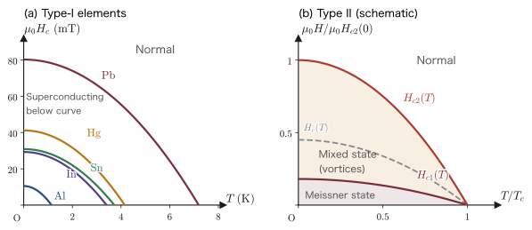
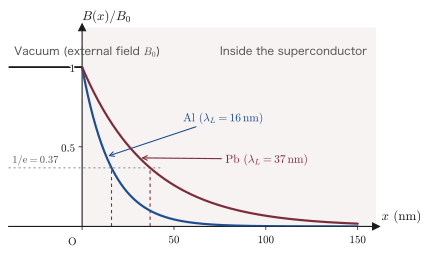
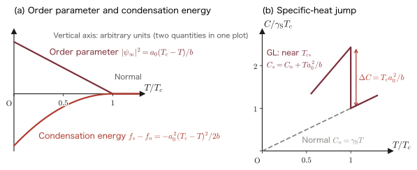
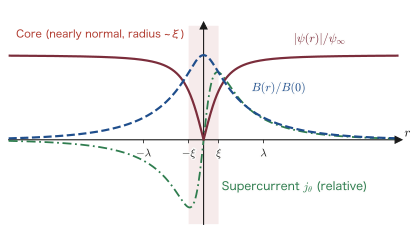
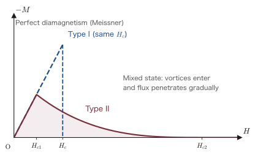
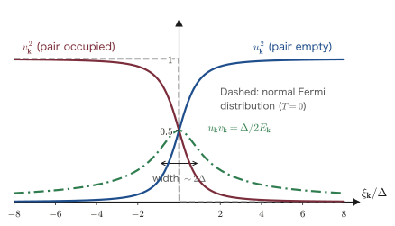
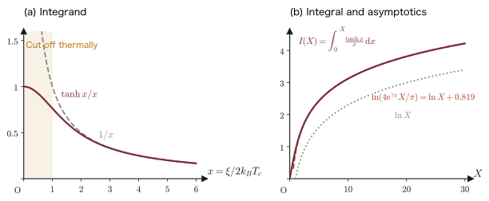
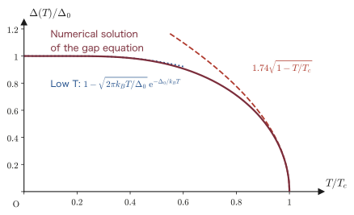
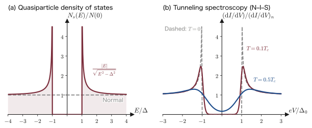
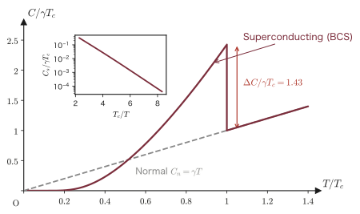

Chapter 37Physics of Superconductivity — Ginzburg–Landau Theory, BCS Theory, and the Higgs Mode
In 1911, Kamerlingh Onnes cooled mercury with liquid helium and found that at $4.2\,\mathrm{K}$ its electrical resistance became too small to measure. This was the discovery of superconductivity. The resistance does not merely vanish. A superconductor expels the magnetic field from its interior (the Meissner effect), a current set up in a ring does not decay for years, and the magnetic flux threading the ring can take only integer multiples of $h/2e$. None of these can be explained as an extension of an ordinary metal. Superconductivity is a remarkable phenomenon even within solid-state physics: the effects of quantum mechanics appear on a macroscopic scale.
To understand this phenomenon, in this chapter we study two theories in turn. The first is Ginzburg–Landau theory. It describes the superconducting state by a single complex function $\psi(\rr)=\abs{\psi}\ee^{i\theta}$ spread over the whole sample—the order parameter, which is called the pseudo-wave function or the macroscopic wave function. We spend some time in this chapter explaining “of what” $\psi$ is a wave function. The second is Bardeen–Cooper–Schrieffer (BCS) theory. Starting from the “attraction between electrons mediated by phonons” studied in Chapter 29 and applying the mean-field approximation, we derive the formula for the transition temperature
$$k_BT_c=\frac{2\ee^{\gamma_E}}{\pi}\hbar\omega_D\,\ee^{-1/N(0)V}\approx1.13\,\hbar\omega_D\,\ee^{-1/N(0)V}$$(here $\gamma_E=0.5772\ldots$ is Euler's constant, $\omega_D$ is the Debye frequency, and $N(0)V$ is the dimensionless coupling strength, determined by the product of the electronic density of states and the strength of the attraction). We write out every step of the algebra without skipping a line: the decomposition into the mean field, the Bogoliubov transformation, the gap equation, the gap at $T=0$, and the evaluation of the integral that determines $T_c$. This formula has the same form as the one we met in Chapter 35 as the temperature of the Peierls transition, and we also examine that correspondence.
Finally, we reexamine superconductivity as spontaneous symmetry breaking. The energy is the same for every value of the phase $\theta$ of the order parameter, yet the superconductor chooses one value. Two kinds of collective motion then arise: “oscillations of the phase direction” and “oscillations of the amplitude.” The former is the Nambu–Goldstone mode and the latter is the Higgs mode. In a superconductor the charged pairs couple to the electromagnetic field, so the phase mode is absorbed into the electromagnetic field, and in exchange the electromagnetic field acquires a “mass.” This is the true nature of the Meissner effect, and it is also the prototype of the Higgs mechanism of elementary particle physics.
This chapter concludes Part V. The language of quasiparticles (creation and annihilation operators) from Chapter 27, the electron–phonon interaction and Cooper pairs from Chapter 29, the Peierls transition and the amplitude and phase modes of the charge-density wave from Chapter 35, and Landau theory and molecular-field theory from Chapters 19 and 20 are all tied together here.
- The experimental facts of superconductivity: zero resistance, the Meissner effect (and how it differs from a perfect conductor), the critical magnetic field, the specific-heat jump, the isotope effect, the flux quantization $h/2e$, and the gap seen in tunneling spectroscopy
- Deriving the magnetic penetration depth $\lambda_L=\sqrt{m/\mu_0n_se^2}$ from the London equations, and showing that the magnetic field decays from the surface as $\ee^{-x/\lambda_L}$
- What the pseudo-wave function (macroscopic wave function) $\psi(\rr)$ is: it is not the wave function of a single electron but the order parameter of Landau theory; the meaning of its magnitude and phase; and why it is called a “wave function”
- The GL free energy and the Mexican hat; the derivation of the GL equations and the supercurrent by variation; the coherence length $\xi(T)$ and the penetration depth $\lambda(T)$; type I and type II
- Flux quantization, vortex lines and the upper critical field $B_{c2}=\Phi_0/2\pi\xi^2$, and the derivation of the Josephson effect
- The meaning of the BCS ground state $\prod_\kk(u_\kk+v_\kk c^\dagger_{\kk\uparrow}c^\dagger_{-\kk\downarrow})\ket{0}$, and the uncertainty of the particle number and the phase
- Deriving, without skipping a line, the mean-field approximation → the Bogoliubov transformation → the gap equation → the gap at $T=0$ → the formula for $T_c$
- The universal ratio $2\Delta_0/k_BT_c=3.53$, the temperature dependence of the gap, the quasiparticle density of states and tunneling spectroscopy, and the specific-heat jump $\Delta C/\gamma_{\rm S}T_c=1.43$
- Gor'kov's correspondence: $\psi\propto\Delta$, $m^*=2m$, $e^*=2e$, and the table relating the phenomenological and microscopic theories
- Spontaneous symmetry breaking, the Nambu–Goldstone mode and the Higgs mode, the Meissner effect as the Anderson–Higgs mechanism, and the current status of strong-coupling, unconventional, and high-temperature superconductivity
Notation: symbols that are easily used in two ways in this chapter
- $\xi_\kk=E(\kk)-\mu$ is the one-electron energy measured from the chemical potential (always attach the subscript $\kk$). The coherence length, a length, is distinguished by a subscript or an argument: $\xi_0$ (BCS, Pippard) and $\xi(T)$ (GL). A bare $\xi$ in a figure means $\xi(T)$. When a bare $\xi$ is used as an integration variable, it is $\xi_\kk$ turned into a continuous variable (an energy).
- $\theta$ is used only for the phase of the order parameter ($\psi=\abs\psi\ee^{i\theta}$). The rotation angle of the Bogoliubov transformation is written $\vartheta_\kk$, and the phase of the BCS state in Section 37.5.5 is written $\phi$.
- $\lambda_L$ is the London penetration depth and $\lambda(T)$ is the GL penetration depth. The electron–phonon coupling constant (the $\lambda$ of Chapter 29) is written $\lambda_{\rm ep}$ in this chapter. The GL parameter is $\kappa_{\rm GL}=\lambda/\xi$.
- $\gamma_E=0.5772\ldots$ is Euler's constant, $\gamma_{\kk\sigma}$ is the annihilation operator of a Bogoliubov quasiparticle, and $\gamma_{\rm S}$ is the normal-state electronic specific-heat coefficient ($C_n=\gamma_{\rm S}T$).
- $V\gt0$ is the strength of the attraction between electrons (the interaction is $-V$). Only in the Josephson effect of Section 37.4.7, however, $V$ denotes a voltage. As in Chapter 29, the volume of the crystal is written $\mathcal{V}$.
- $N(0)$ is the density of states per spin at the Fermi level. Whether it is the value for the whole sample (in units of 1/energy) or the value per unit volume is stated explicitly for each equation (Sections 37.5 through 37.8.2 use the value for the whole crystal; the numerical example in Section 37.7.6 and Section 37.8.3 use the value per unit volume).
- $f$ is the GL free-energy density, and $f(E)=1/(\ee^{E/k_BT}+1)$ is the Fermi distribution function (distinguished by the presence or absence of an argument). The GL coefficients $a$ and $b$ are to be distinguished from the pair operator $\hat b_\kk=c_{-\kk\downarrow}c_{\kk\uparrow}$ (with a hat). The coefficient of the time-dependent GL theory in Section 37.9.3 is written $c_2$.
- In the “Math Tool” of Section 37.7.2 and in Section 37.7.5, we use $w_n=(2n+1)\pi k_BT$ (the Matsubara energy, which has the dimension of energy) and the step function $s(u)$. They have nothing to do with the Debye frequency $\omega_D$ or the plasma frequency $\omega_p$. There $H_m$ denotes a harmonic number (distinguished from the critical field $H_c$ by its subscript).
- $\Delta$ is the superconducting gap, and $\Delta_0$ is its value at $T=0$. These are different quantities from the $\Delta$ of Section 27.5 in Chapter 27 (the real part of the self-energy, an energy shift), the charge-transfer energy $\Delta_{\rm CT}$ of Chapter 28, and the $\Delta_0$ of Chapter 29 (half the spacing of the two levels).
- $\Omega(\Delta)$ is the grand-canonical potential of Section 37.8.1, and the $\Omega$ of Section 37.9.5 is the angular frequency of the terahertz light.
- The charge of a Cooper pair is $-2e$. In GL theory, as on the explanation page of the simulator, we use the magnitude of the charge $e^*=2e$ and write $(-i\hbar\nabla-e^*\bm A)$ (the caution in Section 37.3.3).
37.1 Experimental Facts of Superconductivity
Before turning to theory, we list the facts that superconductors exhibit, one at a time. Every theory later in this chapter was built to explain one or more of the facts in this section. Table 37.2 at the end of the section summarizes which fact is explained by which theory.
37.1.1 Zero resistance and persistent current
Kamerlingh Onnes, who succeeded in liquefying helium in 1908, systematically measured the resistance of metals at very low temperatures. At that time there were three views on the resistance of a metal as $T\to0$: (i) it tends to zero, (ii) it settles to a finite value, (iii) it diverges because the electrons freeze in place. He chose mercury, which is easy to purify, and in 1911 he found that near $4.2\,\mathrm{K}$ the resistance dropped abruptly, within a temperature interval of less than $0.1\,\mathrm{K}$, to below the measurement limit (Figure 37.1(a)). This agreed with none of the three views; it was an entirely new phenomenon.
The statement that “the resistance is below the measurement limit” alone cannot distinguish whether the resistance is truly zero or merely very small. A more sensitive method is to set a current flowing in a superconducting ring and see whether it decreases (Figure 37.1(b)). If the self-inductance of the ring is $L_{\rm s}$ and its resistance is $R$, the current decays as $I(t)=I(0)\ee^{-Rt/L_{\rm s}}$. In experiments no decrease of the current was detected even after more than a year, and from this the resistivity of the superconducting state is estimated to be smaller than $10^{-15}$ times that of normal-state copper. A current that keeps flowing in this way without any external power source connected is called a persistent current.
37.1.2 The Meissner effect — how it differs from a perfect conductor
Let us call an object with zero resistance a perfect conductor. Inside a perfect conductor the electric field is zero (if there were an electric field, the current would be accelerated without limit). Substituting $\EE=0$ into Faraday's law $\nabla\times\EE=-\partial\BB/\partial t$ gives
$$ \frac{\partial\BB}{\partial t}=0 $$That is, a perfect conductor does not change the magnetic field inside it. If it is cooled after a magnetic field has been applied, the field remains trapped inside; if the field is applied after cooling, the field cannot enter. The final state of a perfect conductor is determined by its history, that is, by the order in which the operations were carried out.
In 1933, Meissner and Ochsenfeld found that when Sn or Pb is cooled in a magnetic field, the magnetic field is expelled from the interior at the moment $T_c$ is crossed (Figure 37.2). This is called the Meissner effect. Inside a superconductor we always have $\BB=0$ regardless of history (except in a thin layer at the surface).
This difference is decisive. If the state of a superconductor is determined only by temperature and magnetic field, independent of the history of operations, then the superconducting state is a thermodynamic phase and can be discussed using the free energy. The Ginzburg–Landau theory of Section 37.3 takes exactly this standpoint. Moreover, the Meissner effect is an independent property that does not follow from “zero resistance,” so a separate equation that expresses it (the second London equation of Section 37.2) is needed.
Example 37.1: Distinguishing a perfect conductor from a superconductor experimentally
Consider a metal sphere a few millimeters in diameter. At a temperature above $T_c$ an external magnetic field $B_0=5\,\mathrm{mT}$ is applied, the sphere is cooled below $T_c$ with the field still applied, and then the external field is reduced to zero. (1) If the sphere is a perfect conductor, what happens to the magnetic field inside the sphere just after cooling and after the field is switched off? (2) What happens if it is a superconductor ($B_0$ is smaller than the critical magnetic field)? (3) Explain that the two can be distinguished by whether the sphere has a magnetic moment, as seen from outside, after the field is switched off.
Solution. (1) In a perfect conductor $\partial\BB/\partial t=0$, so just after cooling the field inside remains $B_0$, the same as before cooling. Even if the external field is then reduced to zero, the field inside cannot change and so remains $B_0$. For this reason a current flows at the surface, and seen from outside the sphere has a magnetic moment like a permanent magnet.
(2) A superconductor expels the field at the moment it is cooled, and its interior becomes $\BB=0$ (except in a surface layer of thickness about $\lambda_L$). After the external field is reduced to zero the interior is still $\BB=0$, and the surface current also vanishes.
(3) After the field is switched off, the perfect conductor has a magnetic moment and the superconductor does not. The two can therefore be distinguished by measuring with a magnetometer whether a magnetic moment is present. What Meissner and Ochsenfeld observed was the behavior of (2). ∎ A superconductor is not “a conductor with zero resistance” but “a thermodynamic phase that dislikes magnetic fields.”
37.1.3 Critical fields, and type I and type II
Pushing out a magnetic field costs energy. To exclude the field from a region of volume $\mathcal{V}$ in an external magnetic field $B$, we must do work corresponding to the magnetic energy density $B^2/2\mu_0$. Even if the superconducting state has a lower free-energy density than the normal state (we call the difference the condensation energy density $f_c$), once $B^2/2\mu_0$ exceeds $f_c$ the superconducting state no longer pays off, and the system returns to the normal state. This boundary is the thermodynamic critical field $H_c$ ($B_c=\mu_0H_c$), which is defined by
Here $f_n$ and $f_s$ are the free-energy densities of the normal and superconducting states in zero field. Experimentally, $H_c(T)$ is well approximated by a parabola:
Figure 37.3(a) shows $\mu_0H_c(T)$ for elemental superconductors. It is a phase diagram: below the $H_c(T)$ curve the material is superconducting, and above it, normal. The critical field is small, a few tens of mT, so bringing an ordinary permanent magnet (0.1–1 T) near a superconductor destroys the superconductivity.

Alloys and compounds such as Nb, NbTi, and Nb₃Sn, however, behave differently. Above the lower critical field $H_{c1}$ the magnetic field begins to penetrate little by little, but the superconductivity is not destroyed and survives up to a much higher upper critical field $H_{c2}$ (Figure 37.3(b)). A superconductor that returns to the normal state all at once at $H_c$ is called a type-I superconductor, and one that has the two critical fields $H_{c1}$ and $H_{c2}$ is called a type-II superconductor. The $\mu_0H_{c2}$ of NbTi reaches about $14\,\mathrm{T}$ and that of Nb₃Sn about $30\,\mathrm{T}$, and the superconducting magnets of MRI machines and accelerators are made from these materials. Why the two types appear is explained in Section 37.4 as the ratio of the two lengths of GL theory.
Example 37.2: Critical field of Pb at liquid-helium temperature
For Pb, $T_c=7.19\,\mathrm{K}$ and $\mu_0H_c(0)=80.3\,\mathrm{mT}$. (1) Find $\mu_0H_c$ at the boiling point of liquid helium, $4.2\,\mathrm{K}$, using Eq. \eqref{eq:37-Hcpara}. (2) Find the condensation energy density $f_c$ at that temperature. (3) When a current $I$ flows through a Pb wire of radius $1\,\mathrm{mm}$, the magnetic field at the surface is $B=\mu_0I/2\pi r$. Find the maximum current for which the superconductivity is not destroyed (Silsbee's rule).
Solution. (1) $T/T_c=4.2/7.19=0.5841$ and $(T/T_c)^2=0.3412$, so
$$ \mu_0H_c(4.2\,\mathrm{K})=80.3\,\mathrm{mT}\times(1-0.3412)=80.3\times0.6588\,\mathrm{mT}=52.9\,\mathrm{mT} $$(2) By Eq. \eqref{eq:37-Hc}, $f_c=B_c^2/2\mu_0$.
$$ f_c=\frac{(0.0529\,\mathrm{T})^2}{2\times1.2566\times10^{-6}\,\mathrm{N/A^2}}=\frac{2.798\times10^{-3}}{2.513\times10^{-6}}\,\mathrm{J/m^3}=1.11\times10^{3}\,\mathrm{J/m^3} $$(3) The current at which the surface field reaches $B_c$ is $I_c=2\pi rB_c/\mu_0$.
$$ I_c=\frac{2\pi\times(1.0\times10^{-3}\,\mathrm{m})\times0.0529\,\mathrm{T}}{1.2566\times10^{-6}\,\mathrm{N/A^2}}=\frac{3.324\times10^{-4}}{1.2566\times10^{-6}}\,\mathrm{A}=2.64\times10^{2}\,\mathrm{A} $$∎ A wire of a type-I superconductor can carry only a few hundred A. The condensation energy is only about $1\,\mathrm{kJ/m^3}$, which, per atom, is extremely small, about $10^{-7}\,\mathrm{eV}$ (Example 37.6). This is why type-II superconductors are used for superconducting magnets.
37.1.4 The specific-heat jump and the energy gap
No latent heat appears at the superconducting transition, but the specific heat jumps discontinuously at $T_c$ (Figure 37.21). The absence of latent heat together with a jump in the specific heat is characteristic of a second-order phase transition (the classification of Landau theory in Section 19.7 of Chapter 19). Furthermore, at temperatures far below $T_c$, the electronic specific heat does not take the form proportional to $T$ of the normal state, $C_n=\gamma_{\rm S}T$ (Chapter 15); instead it becomes exponentially small,
$$ C_s\propto\ee^{-\Delta/k_BT} $$This shows that exciting an electron requires an energy of at least about $\Delta$; that is, an energy gap has opened around the Fermi level (the same reasoning by which the number of carriers in a semiconductor goes as $\ee^{-E_g/2k_BT}$). Explaining the origin of this gap is the central problem of BCS theory (Sections 37.6–37.7).
37.1.5 The isotope effect
In 1950, Maxwell, Reynolds, and their coworkers found that, even for the same element, the heavier the isotope, the lower the $T_c$. In Hg, when the average isotopic mass $M$ increases from $199.5$ to $203.4$, $T_c$ drops from $4.185\,\mathrm{K}$ to $4.146\,\mathrm{K}$, and the relation
$$ T_c\propto M^{-\alpha},\qquad\alpha\approx\frac12 $$holds. If superconductivity were a property of the electrons alone, the mass of the atomic nucleus should be irrelevant. The dependence of $T_c$ on the ion mass became decisive evidence that lattice vibrations (phonons) are involved in superconductivity. Since the phonon frequency is $\omega\propto M^{-1/2}$, if $T_c\propto\omega_D$ then $\alpha=1/2$. Why phonons produce an attraction between electrons is studied in detail in Section 29.6 of Chapter 29. In this chapter, we derive in Section 37.7 that the BCS formula for $T_c$ is proportional to $\omega_D$, and check the isotope effect (Example 37.17).
37.1.6 Flux quantization — carriers of charge $2e$
F. London had predicted in 1950 that the magnetic flux threading a superconducting ring should be quantized. In 1961, Deaver and Fairbank, and Doll and Näbauer, independently measured that the magnetic flux threading a thin cylindrical superconductor takes only the discrete values
In London's prediction the denominator was $e$, but the measured value was $2e$. The charge in the denominator is the charge of the particles that carry the superconductivity. This experiment made it clear that the carriers of superconductivity are pairs of two electrons (Cooper pairs). We call $\Phi_0$ the flux quantum. Eq. \eqref{eq:37-Phi0} is derived in Section 37.4.5.
37.1.7 The gap seen by tunneling spectroscopy
In 1960, Giaever applied a voltage $V$ to a junction in which a normal metal and a superconductor were sandwiched across an insulating film a few nm thick, and measured the tunneling current. Almost no current flowed until the voltage reached $e\abs{V}=\Delta$, and just above $e\abs{V}=\Delta$ the differential conductance $\dd I/\dd V$ had a sharp peak (Section 23.5.7 of Chapter 23). This is a direct measurement, on an energy scale, of the energy gap estimated from the specific heat. That the shape of $\dd I/\dd V$ is the density of states of the superconductor itself is derived in Section 37.7.6 (Figure 37.20).
37.1.8 A list of superconductors, and the history of transition temperatures
Table 37.1 summarizes representative superconductors. The values for the elements are those of the table in Kittel's textbook, and are common with the simulators of this book. Even for elements, $T_c$ differs slightly between measurements, and recent literature often gives Al $1.18\,\mathrm{K}$ and Nb $9.25\,\mathrm{K}$. Figure 37.4 lines up the year of discovery and the record $T_c$.
| Material | $T_c$ (K) | Discovered | Type | $\mu_0H_c(0)$ or $\mu_0H_{c2}(0)$ | $\Theta_D$ (K) | $2\Delta_0/k_BT_c$ |
|---|---|---|---|---|---|---|
| Al | 1.140 | 1933 | Type I | $H_c$: 10.5 mT | 428 | 3.4 |
| In | 3.40 | 1928 | Type I | $H_c$: 29.3 mT | 108 | 3.6 |
| Sn | 3.72 | 1913 | Type I | $H_c$: 30.9 mT | 200 | 3.5 |
| Hg | 4.15 | 1911 | Type I | $H_c$: 41.2 mT | 72 | 4.6 |
| Pb | 7.19 | 1913 | Type I | $H_c$: 80.3 mT | 105 | 4.38 |
| Nb | 9.50 | 1930 | Type II | $H_c$: 0.20 T, $H_{c2}$: approx. 0.4 T | 275 | 3.8 |
| NbTi (alloy) | approx. 9.5 | 1962 | Type II | $H_{c2}$: approx. 14 T | — | — |
| Nb₃Sn | 18 | 1954 | Type II | $H_{c2}$: approx. 30 T | — | — |
| MgB₂ | 39 | 2001 | Type II | (two gaps) | — | — |
| YBa₂Cu₃O₇ | approx. 92 | 1987 | Type II | $H_{c2}$: 100 T or more | — | — |
| HgBa₂Ca₂Cu₃O₈₊δ | approx. 134 (ambient pressure) approx. 164 (approx. 30 GPa) | 1993 | Type II | — | — | — |
| LaFeAsO₁₋ₓFₓ | 26 | 2008 | Type II | — | — | — |
| H₃S (approx. 150 GPa) | approx. 200 | 2015 | Type II | — | — | — |
| LaH₁₀ (approx. 170 GPa) | approx. 250 | 2019 | Type II | — | — | — |
![Timeline of record superconducting transition temperatures. The horizontal axis is the year of discovery and the vertical axis is Tc. From Hg at 4.2 K in 1911, metals and alloys rose slowly to Nb3Ge at 23 K in 1973. From La–Ba–Cu–O in 1986 the cuprates rose steeply, YBa2Cu3O7 in 1987 exceeded the boiling point of liquid nitrogen, 77 K, and the Hg-based cuprate reached 134 K at ambient pressure and 164 K under high pressure. MgB2 at 39 K in 2001, the iron-based superconductors in 2008, and from 2015 the hydrides under high pressure, H3S and LaH10, exceeded 200 K.](figs/ch37_fig37-4.svg)
Among the facts of this section, zero resistance, the Meissner effect, the critical fields, type I and type II, and flux quantization are explained mainly by the phenomenological theory (Sections 37.2–37.4). The exponential behavior of the specific heat, the gap seen in tunneling spectroscopy, the isotope effect, and the value of $2\Delta_0/k_BT_c$ are explained for the first time by the microscopic theory (Sections 37.5–37.7). The correspondence is summarized in Table 37.2.
| Experimental fact | Explaining theory | Sections of this chapter |
|---|---|---|
| Zero resistance, persistent current | Phase rigidity of the macroscopic wave function | 37.3, 37.4, 37.9 |
| Meissner effect, penetration depth | London equation, GL equation, Anderson–Higgs mechanism | 37.2, 37.4, 37.9 |
| Critical field, specific-heat jump (second-order transition) | GL free energy | 37.3 |
| Type I and type II, vortex lines | The two GL lengths $\xi$ and $\lambda$ | 37.4 |
| Flux quantization $h/2e$, Josephson effect | Single-valuedness and phase of the macroscopic wave function | 37.4 |
| Energy gap, tunneling spectroscopy, low-temperature specific heat | Quasiparticles of BCS theory | 37.6, 37.7 |
| Value of $T_c$, $2\Delta_0/k_BT_c=3.53$, isotope effect | BCS gap equation | 37.7 |
37.2 The London Equations and the Magnetic Penetration Depth
In 1935 the brothers F. London and H. London wrote down, as a phenomenological theory, equations that express the Meissner effect. Without knowing the microscopic reason, they cast the statements “the electrons of a superconductor are accelerated without friction” and “the magnetic field is expelled” into a form that can be combined with the Maxwell equations. As a result, it was predicted that the magnetic field does not drop to exactly zero at the surface but penetrates over a certain length $\lambda_L$ and decays exponentially.
37.2.1 The two-fluid picture
Following Gorter and Casimir (1934), we regard the conduction electrons of a superconductor (density $n$) as a mixture of two components: superconducting electrons (density $n_s$), which flow without friction, and normal electrons (density $n_n$), which are scattered like the electrons of an ordinary metal:
$$ n=n_s(T)+n_n(T),\qquad n_s(T_c)=0,\qquad n_s(0)=n $$For a direct current, the superconducting electrons flow so as to cancel the electric field completely, so no electric field acts on the normal electrons, and the normal electrons do not contribute to the current. Therefore, in what follows it suffices to consider only the current $\bm j_s$ of the superconducting electrons. The term “superconducting electrons” here is a word for building intuition; it is not true that only some of the electrons are special. The microscopic meaning will become clear in Section 37.8 ($n_s$ is a quantity proportional to the square of the amplitude of the pair condensate).
37.2.2 The first London equation — frictionless acceleration
Since the superconducting electrons (mass $m$, charge $-e$, velocity $\bm v_s$) are not scattered, their equation of motion is Newton's equation without a friction term:
$$ m\frac{\dd\bm v_s}{\dd t}=-e\EE $$The current density is $\bm j_s=-en_s\bm v_s$, so multiplying both sides by $-en_s$ to obtain an equation for $\bm j_s$ gives
$$ -en_s\,m\frac{\dd\bm v_s}{\dd t}=(-en_s)(-e\EE) \qquad\Longrightarrow\qquad m\frac{\dd\bm j_s}{\dd t}=n_se^2\EE $$that is,
This is called the first London equation. If $\bm j_s$ is constant in a direct current, the left-hand side is zero, so $\EE=0$, which expresses zero resistance. However, as we saw in Section 37.1.2, this alone is the same as a perfect conductor and does not yield the Meissner effect.
37.2.3 The second London equation — expulsion of the magnetic field
Derivation: From the condition for a perfect conductor to the second London equation
Step 1: Take the curl. Take the curl ($\nabla\times$) of both sides of Eq. \eqref{eq:37-london1}. Assuming $n_s$ is uniform, we obtain
$$ \frac{\partial}{\partial t}(\nabla\times\bm j_s)=\frac{n_se^2}{m}\nabla\times\EE $$Step 2: Use Faraday's law. Substituting $\nabla\times\EE=-\partial\BB/\partial t$ into the right-hand side gives
$$ \frac{\partial}{\partial t}(\nabla\times\bm j_s)=-\frac{n_se^2}{m}\frac{\partial\BB}{\partial t} \qquad\Longrightarrow\qquad \frac{\partial}{\partial t}\left[\nabla\times\bm j_s+\frac{n_se^2}{m}\BB\right]=0 $$Step 3: Where a perfect conductor and a superconductor part ways. This equation says only that “the quantity in brackets does not depend on time.” A perfect conductor is one in which the quantity in brackets takes an arbitrary value fixed by the initial conditions. The London brothers assumed that in a superconductor the quantity in brackets is always zero:
This is the second London equation. With this assumption the state forgets its history and becomes a thermodynamic phase. ∎
37.2.4 Derivation of the magnetic penetration depth $\lambda_L$
Derivation: $\nabla^2\BB=\BB/\lambda_L^2$ and $\lambda_L=\sqrt{m/\mu_0n_se^2}$
Step 1: Ampère's law. In the static case, the Maxwell equation is $\nabla\times\BB=\mu_0\bm j_s$ (the displacement current is neglected). Taking the curl of both sides and substituting Eq. \eqref{eq:37-london2}, we obtain
$$ \nabla\times(\nabla\times\BB)=\mu_0\nabla\times\bm j_s=-\frac{\mu_0n_se^2}{m}\BB $$Step 2: The vector identity. Since $\nabla\times(\nabla\times\BB)=\nabla(\nabla\cdot\BB)-\nabla^2\BB$ and $\nabla\cdot\BB=0$, the left-hand side is $-\nabla^2\BB$. Changing the sign of both sides, we obtain
Step 3: The solution for a semi-infinite superconductor. Suppose that $x\gt0$ is the superconductor and $x\lt0$ is vacuum, and that an external magnetic field $\BB=B_0\hat{\bm z}$ parallel to the surface is applied. By symmetry $\BB=B(x)\hat{\bm z}$, and Eq. \eqref{eq:37-lambdaL} becomes
$$ \frac{\dd^2B}{\dd x^2}=\frac{B}{\lambda_L^2} $$The general solution is $B(x)=C_1\ee^{-x/\lambda_L}+C_2\ee^{x/\lambda_L}$. For the solution not to diverge as $x\to\infty$ we need $C_2=0$, and for the magnetic field to be continuous at the surface we need $B(0)=B_0$, that is, $C_1=B_0$. Therefore
Step 4: The screening current. The $y$ component of $\nabla\times\BB=\mu_0\bm j_s$ is $(\nabla\times\BB)_y=\partial B_x/\partial z-\partial B_z/\partial x=-\dd B/\dd x$, so
$$ j_{s,y}(x)=-\frac{1}{\mu_0}\frac{\dd B}{\dd x}=\frac{B_0}{\mu_0\lambda_L}\ee^{-x/\lambda_L} $$The current also flows only in a surface layer of thickness $\lambda_L$, and the magnetic field produced by this current cancels the external magnetic field in the interior. ∎

Example 37.3: The London penetration depth of Al
In the free electron model, the conduction electron density of Al is $n=18.1\times10^{22}\,\mathrm{cm^{-3}}$. Assuming that at $T=0$ all the conduction electrons become superconducting electrons ($n_s=n$), find $\lambda_L$ and compare it with the measured value of about $16\,\mathrm{nm}$.
Solution. $n=18.1\times10^{22}\,\mathrm{cm^{-3}}=1.81\times10^{29}\,\mathrm{m^{-3}}$. The quantity under the square root in Eq. \eqref{eq:37-lambdaL} is
$$ \begin{aligned} \frac{m}{\mu_0ne^2}&=\frac{9.109\times10^{-31}}{(1.2566\times10^{-6})(1.81\times10^{29})(1.602\times10^{-19})^2}\,\mathrm{m^2}\\ &=\frac{9.109\times10^{-31}}{5.838\times10^{-15}}\,\mathrm{m^2}=1.560\times10^{-16}\,\mathrm{m^2} \end{aligned} $$Therefore $$\lambda_L=\sqrt{1.560\times10^{-16}}\,\mathrm{m}=1.25\times10^{-8}\,\mathrm{m}=12.5\,\mathrm{nm}$$.
∎ This agrees with the measured $16\,\mathrm{nm}$ in order of magnitude. Part of the difference arises because the effective mass of the real electrons is heavier than $m$ owing to the electron–phonon interaction and other effects ($\lambda_L\propto\sqrt{m^*}$). A length of a few tens of nm is about 100 times the interatomic spacing and about 1/30 of the wavelength of light.
Example 37.4: The magnetic field inside Pb and the temperature dependence of the penetration depth
(1) A field $B_0=10\,\mathrm{mT}$ is applied parallel to the surface of Pb ($\lambda_L(0)=37\,\mathrm{nm}$). Find $B$ at depths of $100\,\mathrm{nm}$ and $200\,\mathrm{nm}$ from the surface. (2) If we set $n_s(T)=n[1-(T/T_c)^4]$ empirically in the two-fluid model, how does $\lambda_L(T)$ change? Find $\lambda_L$ at $T=0.9T_c$.
Solution. (1) From Eq. \eqref{eq:37-decay}, $$B(100\,\mathrm{nm})=10\,\mathrm{mT}\times\ee^{-100/37}=10\times\ee^{-2.703}\,\mathrm{mT}=10\times0.0670\,\mathrm{mT}=0.67\,\mathrm{mT}$$. $$B(200\,\mathrm{nm})=10\times\ee^{-5.405}\,\mathrm{mT}=10\times0.0045\,\mathrm{mT}=0.045\,\mathrm{mT}$$.
(2) Since $\lambda_L\propto n_s^{-1/2}$,
$$ \lambda_L(T)=\frac{\lambda_L(0)}{\sqrt{1-(T/T_c)^4}} $$At $T=0.9T_c$, $(0.9)^4=0.6561$, $1-0.6561=0.3439$, and $\sqrt{0.3439}=0.5864$, so $\lambda_L=37/0.5864\,\mathrm{nm}=63\,\mathrm{nm}$.
∎ The penetration depth diverges as $T_c$ is approached ($n_s\to0$). In Section 37.4 we derive $\lambda(T)\propto(1-T/T_c)^{-1/2}$ from GL theory. Since $1-t^4=(1-t)(1+t)(1+t^2)\approx4(1-t)$, near $T_c$ the two-fluid model gives the same power of $-1/2$.
37.2.5 London's insight — the wave function is “rigid” against a magnetic field
The second London equation \eqref{eq:37-london2} can be written more simply by using the vector potential $\bm A$ ($\BB=\nabla\times\bm A$). If we choose $\bm A$ so that $\nabla\cdot\bm A=0$ and no current crosses the surface of the sample (the London gauge), then
(taking the curl of both sides returns Eq. \eqref{eq:37-london2}). F. London considered the meaning of this equation in terms of quantum mechanics. The velocity of an electron (charge $-e$) in a magnetic field is related to the canonical momentum $\hat{\pp}=-i\hbar\nabla$ by
$$ m\bm v=\hat{\pp}+e\bm A $$(from the Hamiltonian $(\hat{\pp}+e\bm A)^2/2m$ of Section 21.6.2 in Chapter 21). In an ordinary metal, when a magnetic field is applied, the wave function deforms and $\langle\hat{\pp}\rangle$ changes so as to cancel $-e\bm A$, so the average velocity remains almost zero (this is why Landau diamagnetism is small). However, if the ground-state wave function does not deform (is rigid) even when a magnetic field is applied, then $\langle\hat{\pp}\rangle=0$ remains, so
$$ \langle\bm v\rangle=\frac{e}{m}\bm A,\qquad \bm j_s=-en_s\langle\bm v\rangle=-\frac{n_se^2}{m}\bm A $$and Eq. \eqref{eq:37-londonA} follows. London took the superconducting state to be a state in which a macroscopic number of electrons are described by one “rigid” wave function. The theory that turned this idea of “one wave function for the whole sample” into a concrete theory is the Ginzburg–Landau theory of the next section. Why the wave function is rigid (because there is an energy gap for the excitations that would deform the wave function) is answered by BCS theory.
37.3 Ginzburg–Landau Theory I — The Order Parameter (Pseudo-Wave Function) and the Free Energy
In 1950, Ginzburg and Landau published a theory that treats superconductivity as “a phase transition with an order parameter.” It is a phenomenological theory built from symmetry and thermodynamics alone, without knowing the microscopic mechanism, and it came seven years before BCS theory. Nevertheless, this theory correctly explains almost all the macroscopic properties of superconductors, including type-II superconductors, vortex lines, the Josephson effect, and flux quantization. The starting point is the choice of a complex-valued function $\psi(\rr)$ as the order parameter describing the superconducting state. Let us first think carefully about what this $\psi$ is.
37.3.1 Review of the Landau theory of phase transitions — what an order parameter is
In Chapter 19 (Section 19.7) we treated the polarization $P$ of a ferroelectric, and in Chapter 20 (Section 20.7) the magnetization $M$ of a ferromagnet. Both share the following structure.
- There is a quantity that vanishes above the transition temperature and is finite below it. This is called the order parameter.
- Near the transition temperature the order parameter is small, so the free energy can be expanded in powers of the order parameter: $F=F_0+aP^2+\frac{b}{2}P^4+\cdots$.
- The second-order coefficient $a$ changes sign at the transition temperature ($a=a_0(T-T_c)$). When $a\lt0$, the free energy is lower for $P\ne0$ than for $P=0$.
- The terms that appear in the expansion are restricted by the symmetry of the system. If the free energy does not change under $P\to-P$, no odd-order terms appear.
Ginzburg and Landau applied this framework to superconductivity. The question is, “What is the order parameter of a superconductor?”
37.3.2 What is the pseudo-wave function $\psi(\rr)$?
Definition: The order parameter of a superconductor (pseudo-wave function, macroscopic wave function)
The order parameter describing the superconducting state is a complex-valued function defined at each point in space,
$$ \psi(\rr)=\abs{\psi(\rr)}\,\ee^{i\theta(\rr)} $$For $T\gt T_c$, $\psi=0$; for $T\lt T_c$, $\psi\ne0$. The square of the magnitude, $\abs{\psi}^2$, is proportional to the density of the pairs responsible for superconductivity (in the GL normalization, $\abs{\psi}^2=n_s/2$, that is, the density of Cooper pairs), and the spatial variation of the phase $\theta$ gives rise to the supercurrent. $\psi$ is called the pseudo-wave function or the macroscopic wave function.
We explain the meaning of this definition from four viewpoints.
(i) It is not the wave function of a single electron. $\psi(\rr)$ is not the existence probability amplitude of one electron, nor has it been obtained as a solution of the Schrödinger equation. Like the $P$ of a ferroelectric and the $M$ of a ferromagnet, it is the order parameter of the Landau theory of phase transitions. Just as $P$ expresses “how well the polarization is aligned” and $M$ expresses “how well the spins are aligned,” $\psi$ expresses “how far the superconducting order has developed.” The property that it vanishes above $T_c$ and is finite below is also the same. We must not be misled by the name “wave function” into applying the normalization $\int\abs{\psi}^2\dd^3r=1$ of single-particle quantum mechanics. $\abs{\psi}^2$ is normalized so as to have the dimension of a density (number per unit volume).
(ii) Its being complex is essential. $P$ and $M$ are real numbers (or vectors), but $\psi$ is a complex number and carries two pieces of information, the magnitude $\abs{\psi}$ and the phase $\theta$. The square of the magnitude, $\abs{\psi}^2$, is proportional to the density of the pairs (Cooper pairs) responsible for superconductivity. The phase $\theta$ itself cannot be observed, but the spatial variation of the phase, $\nabla\theta$, becomes a supercurrent. The expression for the supercurrent derived in Section 37.4 takes, when $\abs{\psi}$ is uniform, the form
$$ \bm j_s=\frac{e^*\hbar}{m^*}\abs{\psi}^2\left(\nabla\theta-\frac{e^*}{\hbar}\bm A\right) $$This is the same structure as in single-particle quantum mechanics, where the gradient $\kk$ of the phase of a plane wave $\ee^{i\kk\cdot\rr}$ gives the momentum $\hbar\kk$. If the phase winds slowly over the whole sample, a current flows in that direction (Figure 37.6(b)).
(iii) Why is it called a “wave function”? In the superconducting state, a macroscopic number of Cooper pairs (of the order of $10^{22}$ per $1\,\mathrm{cm^3}$) all occupy the same single quantum state and have the same phase. Electrons, being fermions, can enter a given state only one at a time, but a pair formed by two of them behaves like a spin-0 boson and any number of pairs can enter the same state. However, Cooper pairs overlap one another strongly and are not bosons in the strict sense (see the Supplement in Section 37.5.5). The essence is not “being a boson” but “a macroscopic number of pairs being condensed into a single state with aligned phases.” If all of them are in the same state, that common state can be written with a single function. That is $\psi(\rr)$. This is of the same family as the following phenomena:
- Laser light: A macroscopic number of photons enter the same mode and behave as a classical electromagnetic wave $\mathcal{E}(\rr,t)=\abs{\mathcal{E}}\ee^{i\phi}$. This is not the wave function of a single photon but the amplitude of the condensed field of photons (Chapter 25).
- Superfluid helium-4: Below $2.17\,\mathrm{K}$, ⁴He atoms (bosons) condense into the same state and flow without viscosity. The order parameter is the wave function of the condensate.
- Bose–Einstein condensation: In cold atomic gases (realized in 1995), the wave function of the condensate is described by the Gross–Pitaevskii equation.
Microscopically, $\psi(\rr)$ is the spatially coarse-grained expectation value of the amplitude for “annihilating a pair of ↑-spin and ↓-spin electrons at that place,” that is, the pair amplitude $\langle c_{-\kk\downarrow}c_{\kk\uparrow}\rangle$, and it is proportional to the energy gap $\Delta(\rr)$ of BCS theory. This is defined in Section 37.6 and verified in Section 37.8.
Then of “what” is $\psi(\rr)$ a function? Let us state the answer first (the detailed justification is in Section 37.8.4).
- The argument $\rr$ is the position of the center of mass of a Cooper pair. It is not the position of a single electron. The relative motion of the two electrons within a pair (the internal structure of the pair; its size is the coherence length $\xi_0$ of Section 37.7.6, $0.1$–$1\,\mu\mathrm{m}$ for the elements) does not appear in $\psi$, and $\psi$ represents only the amplitude of “condensed pairs whose center of mass is near $\rr$.” Therefore $\psi(\rr)$ is a slowly varying function that is meaningful only over distances longer than $\xi_0$.
- The value is “the amplitude of the field of condensed pairs.” Suppose that $N_p$ pairs all occupy the same single center-of-mass state $\varphi(\rr)$ (the one-pair wave function normalized to $\int\abs{\varphi}^2\dd^3r=1$). Then we can write $\psi(\rr)=\sqrt{N_p}\,\varphi(\rr)$. This is the same way of writing as the “wave function of the condensate” in Bose–Einstein condensation.
- Hence $\abs{\psi(\rr)}^2$ is the pair number density ($=n_s/2$) at the point $\rr$, and $\int\abs{\psi}^2\dd^3r=N_p$ is not 1 but the total number of pairs. The phase $\theta(\rr)$ is the phase common to all pairs.
In short, $\psi$ is a quantity intermediate between “the wave function of a single pair” and “a classical field representing the whole condensate”; it may be regarded as the center-of-mass wave function of a single pair enlarged by the square root of the number of pairs.
(iv) The consequence of phase alignment — macroscopic quantum coherence. Even in the normal state, electrons may happen to form pairs at some instant. But if the phases of the individual pairs are random, they cancel when summed and $\psi=0$ (Figure 37.6(a)). In the superconducting state the phase is aligned over the whole sample (of cm size) (Figure 37.6(b)). The following come out of this macroscopic quantum coherence.
- Flux quantization: When we go once around a ring, $\psi$ must return to its original value (single-valuedness). The phase can change around the loop only by an integer multiple of $2\pi$. This gives $\Phi=n\Phi_0$ (Section 37.4.5).
- Josephson effect: The phase difference $\Delta\theta$ between the $\psi$ of two superconductors determines the current and the voltage (Section 37.4.7).
- Persistent current: To stop the current, one would have to change the winding of the phase, which is aligned over the whole sample. Local scattering cannot change the winding number of the phase, so the current does not decay.
Why? Why does it make sense to say that the phases are “aligned” when the phase cannot be observed?
In quantum mechanics, multiplying the entire wave function by a constant phase factor $\ee^{i\alpha}$ does not change the physics. Hence the value of $\theta$ itself cannot be observed. What can be observed is a phase difference: the phase difference between different places ($\nabla\theta$ is the current), the phase difference between two superconductors (the Josephson current), and the phase difference after going once around a loop (flux quantization). “The phases are aligned” means that the phase difference between two distant points of the sample does not become random as time passes but keeps a definite value. This is the same sense of “aligned” as when a “coherent light source” produces interference fringes in the interference of light.
37.3.3 The GL free energy — why this form?
Ginzburg and Landau wrote the free-energy density of the superconducting state as follows:
The free energy of the whole sample is $F=\int f\,\dd^3r$. We explain in turn the meaning of each term and why the free energy takes this form.
First term $f_n$: the free-energy density of the normal state. For $\psi=0$ we recover $f=f_n+B^2/2\mu_0$.
Second and third terms $a\abs{\psi}^2+\frac b2\abs{\psi}^4$: the free energy of a uniform order, expanded in powers of $\psi$. Why do only $\abs{\psi}^2$ and $\abs{\psi}^4$ appear, and not $\psi^2$ or $\psi^3$? The reason is that the free energy must not change under a phase rotation
$$ \psi\ \to\ \psi\,\ee^{i\alpha}\qquad(\alpha\ \text{is a constant}) $$Since the phase itself cannot be observed (see the “Why” box above), the free energy, which is an observable, must not depend on $\alpha$. We call this transformation a U(1) transformation (multiplication by a complex number of magnitude 1). Although $\psi^2\to\psi^2\ee^{2i\alpha}$ changes, $\abs{\psi}^2=\psi^*\psi\to\psi^*\ee^{-i\alpha}\psi\ee^{i\alpha}=\abs{\psi}^2$ does not. Therefore the only terms allowed are powers of $\abs{\psi}^2$. Microscopically, the U(1) symmetry corresponds to conservation of electron number (charge) (see the Supplement in Section 37.5.5). If $b\gt0$ does not hold, the free energy keeps decreasing as $\abs{\psi}\to\infty$ and no stable state exists. We let $a$ change sign at $T_c$:
(a first-order expansion near $T_c$).
Fourth term $\frac{1}{2m^*}\abs{(-i\hbar\nabla-e^*\bm A)\psi}^2$: this is the gradient energy, which says that the free energy increases when $\psi$ varies from place to place. The order parameter loses energy when it changes abruptly, just as a ferromagnet loses exchange energy when the direction of the spin changes abruptly. Its form imitates the kinetic energy $\hat{\pp}^2/2m$ of quantum mechanics, and $m^*$ and $e^*$ are the “effective mass” and “effective charge” of the pair. Ginzburg and Landau left these as undetermined parameters, but Gor'kov's microscopic derivation (Section 37.8) fixed them as
$$ m^*=2m,\qquad e^*=2e $$The combination $\nabla-ie^*\bm A/\hbar$ appears in place of $\nabla$ because of gauge invariance. The vector potential has the arbitrariness $\bm A\to\bm A+\nabla\chi(\rr)$ (which leaves $\BB=\nabla\times\bm A$ unchanged), and the physics must not change under this transformation. If we transform $\psi\to\psi\,\ee^{ie^*\chi/\hbar}$ at the same time, we obtain
$$ \begin{aligned} &(-i\hbar\nabla-e^*\bm A-e^*\nabla\chi)\left(\psi\,\ee^{ie^*\chi/\hbar}\right)\\ &\quad=\ee^{ie^*\chi/\hbar}\left(-i\hbar\nabla\psi+e^*\nabla\chi\,\psi-e^*\bm A\psi-e^*\nabla\chi\,\psi\right)\\ &\quad=\ee^{ie^*\chi/\hbar}(-i\hbar\nabla-e^*\bm A)\psi \end{aligned} $$so the square of the absolute value does not change. The vector potential $\bm A$ is built in so that the free energy is also invariant under a phase rotation that differs from place to place (a local U(1) transformation).
Fifth term $B^2/2\mu_0$: the energy density of the magnetic field.
Caution: Sign of the pair charge
The charge of a Cooper pair is in fact $-2e$. Since the kinetic energy of a particle of charge $q$ is $(\hat{\pp}-q\bm A)^2/2m^*$, the correct expression would be $(-i\hbar\nabla+2e\bm A)$. In this chapter, as in the explanation page of the simulator and in many textbooks, we use the magnitude of the charge, $e^*=2e$, and write $(-i\hbar\nabla-e^*\bm A)$. This amounts to replacing $\psi$ by its complex conjugate $\psi^*$ (or, equivalently, setting $\bm A\to-\bm A$), and results determined by magnitudes do not change, such as $\xi$, $\lambda$, $\Phi_0=h/e^*$, and $B_{c2}$. Only the signs of the direction of the current and of the magnetic flux are reversed.
37.3.4 The uniform superconducting state — the Mexican hat
If there is no magnetic field ($\bm A=0$, $B=0$) and $\psi$ is uniform ($\nabla\psi=0$), Eq. \eqref{eq:37-GLf} becomes
$$ f-f_n=a\abs{\psi}^2+\frac b2\abs{\psi}^4 $$We minimize this with respect to $\abs{\psi}$.
Derivation: Magnitude of the order parameter and the condensation energy
Step 1. Let $x=\abs{\psi}^2\ge0$; then $f-f_n=ax+\frac b2x^2$. Differentiating with respect to $x$ and setting the result to zero gives $a+bx=0$, that is, $x=-a/b$.
Step 2: $T\gt T_c$. Since $a\gt0$, $x=-a/b\lt0$ is not allowed. In the range $x\ge0$, $f-f_n$ is an increasing function of $x$, so the minimum is at $x=0$, that is, $\psi=0$ (the normal state).
Step 3: $T\lt T_c$. Since $a\lt0$, the minimum is
(the subscript $\infty$ means “the value deep inside the sample, where the boundary has no influence”). We have $\abs{\psi_\infty}\propto(T_c-T)^{1/2}$, which goes continuously to zero toward $T_c$.
Step 4: Condensation energy. Substituting, we obtain
$$ f_s-f_n=a\left(-\frac ab\right)+\frac b2\left(-\frac ab\right)^2=-\frac{a^2}{b}+\frac{a^2}{2b}=-\frac{a^2}{2b} $$Comparing with the definition $\mu_0H_c^2/2=f_n-f_s$ in Eq. \eqref{eq:37-Hc}, we find
Near $T_c$ the critical field is proportional to $T_c-T$. The empirical formula \eqref{eq:37-Hcpara} also becomes first order near $T_c$, since $$1-(T/T_c)^2=(1-T/T_c)(1+T/T_c)\approx2(1-T/T_c)$$ so there is no contradiction. ∎
If we draw $f-f_n$ as a height above the complex plane $(\mathrm{Re}\,\psi,\mathrm{Im}\,\psi)$, we obtain Figure 37.7. For $T\gt T_c$ it is a bowl with its bottom at the origin, but for $T\lt T_c$ the center is raised and a trough forms along the circle of radius $\abs{\psi_\infty}$. Because its shape resembles a wide-brimmed hat, it is called the Mexican hat potential. That every point at the bottom of the trough has the same energy reflects the fact that the free energy does not depend on the phase. The circle at the bottom of the trough is precisely the degree of freedom of the phase $\theta$.

Try It Live: How the Mexican hat turns into a bowl with temperature
In the “GL free energy” tab of the simulator, when you choose an element (Al, Sn, Pb, Nb, and so on), the GL free energy is drawn in three dimensions with the coefficients $a$ and $b$ determined from the measured $T_c$, $H_c(0)$, and $\lambda(0)$. As you bring the temperature slider close to $T_c$, the rim of the hat shrinks toward the center, and above $T_c$ it becomes a bowl (Figure 37.7 and Eq. \eqref{eq:37-psiinf}). You can also check that changing the effective mass $m^*$ or the effective charge $e^*$ changes $\xi$, $\lambda$, and $\kappa_{\rm GL}$, which we derive in Section 37.4.
37.3.5 The specific-heat jump — superconductivity as a second-order phase transition
Derivation: The specific-heat jump $\Delta C=T_ca_0^2/b$ from GL theory
Step 1. For $T\lt T_c$, putting Eq. \eqref{eq:37-aT} into the condensation energy gives
$$ f_s-f_n=-\frac{a^2}{2b}=-\frac{a_0^2(T-T_c)^2}{2b} $$(Figure 37.8(a)). For $T\gt T_c$, $f_s=f_n$.
Step 2: Entropy. The entropy density is $s=-\partial f/\partial T$, so
$$ s_s-s_n=-\frac{\partial}{\partial T}(f_s-f_n)=\frac{a_0^2\cdot2(T-T_c)}{2b}=\frac{a_0^2(T-T_c)}{b} $$For $T\lt T_c$ this is negative: the superconducting state is more ordered (has smaller entropy). It vanishes at $T=T_c$, so the entropy is continuous and there is no latent heat.
Step 3: Specific heat. The specific heat per unit volume is $c=T\,\partial s/\partial T$, so
$$ c_s-c_n=T\frac{\partial}{\partial T}\frac{a_0^2(T-T_c)}{b}=\frac{Ta_0^2}{b} $$At $T=T_c$, approaching from the low-temperature side gives $c_s-c_n=T_ca_0^2/b$, while on the high-temperature side it is zero. The specific heat
thus jumps discontinuously by this amount. ∎

The results above have exactly the same structure as Landau's theory of ferroelectrics in Chapter 19 (a second-order transition with $g_4\gt0$). We list them in Table 37.3.
| Ferroelectric (Chapter 19) | Ferromagnet (Chapter 20) | Superconductivity (this chapter) | |
|---|---|---|---|
| Order parameter | Polarization $P$ (real) | Magnetization $\bm M$ (vector) | $\psi=\abs{\psi}\ee^{i\theta}$ (complex number) |
| Transformation leaving the free energy unchanged | $P\to-P$ | Rotation of $\bm M$ | $\psi\to\psi\ee^{i\alpha}$ (U(1)) |
| Magnitude of the order | $P^2\propto T_c-T$ | $M^2\propto T_c-T$ | $\abs{\psi}^2\propto T_c-T$ |
| Field coupled to the order | Electric field $\EE$ ($-\EE\cdot\bm P$) | Magnetic field ($-\mu_0\bm H\cdot\bm M$) | Vector potential $\bm A$ (gauge field) |
| Specific heat | Jumps at $T_c$ | Jumps at $T_c$ (mean field) | Jumps at $T_c$ |
The difference lies in the row “Field coupled to the order.” $P$ couples to the electric field and $M$ to the magnetic field through a first-order term, so an external field can select the direction of the order parameter. No external field couples to $\psi$ at first order (such a term would break the U(1) symmetry); instead, the gradient of the phase of $\psi$ appears paired with the vector potential. This difference gives rise to the Meissner effect, which is peculiar to superconductivity, and to the Anderson–Higgs mechanism (Section 37.9).
Example 37.5: Finding the specific-heat jump from the slope of the critical field (Rutgers relation)
(1) From Eq. \eqref{eq:37-HcGL} and Eq. \eqref{eq:37-dCGL}, derive $\Delta c=\mu_0T_c\,(\dd H_c/\dd T)^2_{T=T_c}$, which expresses the specific-heat jump in terms of the slope of the critical field. (2) For Sn ($T_c=3.72\,\mathrm{K}$, $\mu_0H_c(0)=30.9\,\mathrm{mT}$), find $\Delta c$ by taking $H_c(T)$ to be the parabolic law \eqref{eq:37-Hcpara}, and convert it to the molar specific heat (molar volume of Sn: $16.3\,\mathrm{cm^3/mol}$).
Solution. (1) From Eq. \eqref{eq:37-HcGL}, $H_c=a_0(T_c-T)/\sqrt{\mu_0b}$, so $\dd H_c/\dd T=-a_0/\sqrt{\mu_0b}$. Squaring and multiplying by $\mu_0T_c$ gives
$$ \mu_0T_c\left(\frac{\dd H_c}{\dd T}\right)^2=\mu_0T_c\frac{a_0^2}{\mu_0b}=\frac{T_ca_0^2}{b}=\Delta c $$(2) For the parabolic law, $\dd B_c/\dd T=-2B_c(0)T/T_c^2$, and at $T=T_c$ this is $$-2B_c(0)/T_c=-2\times0.0309/3.72\,\mathrm{T/K}=-0.01661\,\mathrm{T/K}$$. Rewriting with $B_c=\mu_0H_c$, we have $\Delta c=T_c(\dd B_c/\dd T)^2/\mu_0$, so
$$ \Delta c=\frac{3.72\times(0.01661)^2}{1.2566\times10^{-6}}\,\mathrm{J/(m^3\,K)}=\frac{1.0267\times10^{-3}}{1.2566\times10^{-6}}\,\mathrm{J/(m^3\,K)}=817\,\mathrm{J/(m^3\,K)} $$As a molar specific heat, $$817\times16.3\times10^{-6}\,\mathrm{J/(mol\,K)}=1.33\times10^{-2}\,\mathrm{J/(mol\,K)}=13\,\mathrm{mJ/(mol\,K)}$$.
∎ From a mechanical quantity, the measurement of the magnetic field ($H_c(T)$), we can predict a thermal quantity, the specific heat. This relation is a thermodynamic one that does not depend on the details of GL theory (the Rutgers formula), and it agrees well with the measured specific-heat jump (of the order of $10\,\mathrm{mJ/(mol\,K)}$). The parabolic law slightly overestimates the slope near $T_c$.
Example 37.6: Condensation energy per pair — superconductivity is a “weak” order
Convert the condensation energy density of Pb at $T=0$, $f_c=B_c(0)^2/2\mu_0$ ($B_c(0)=80.3\,\mathrm{mT}$), into an energy (1) per atom and (2) per Cooper pair. The atomic number density of Pb is $3.30\times10^{28}\,\mathrm{m^{-3}}$, and the density of Cooper pairs is estimated from the penetration depth as $n_s/2=m^*/(\mu_0e^{*2}\lambda_L^2)$ ($m^*=2m$, $e^*=2e$, $\lambda_L=37\,\mathrm{nm}$).
Solution.$$f_c=(0.0803)^2/(2\times1.2566\times10^{-6})\,\mathrm{J/m^3}=6.448\times10^{-3}/2.513\times10^{-6}\,\mathrm{J/m^3}=2.57\times10^{3}\,\mathrm{J/m^3}$$.
(1) $$2.57\times10^3/3.30\times10^{28}\,\mathrm{J}=7.8\times10^{-26}\,\mathrm{J}=4.9\times10^{-7}\,\mathrm{eV}$$.
(2) The pair density is
$$ \frac{n_s}{2}=\frac{2\times9.109\times10^{-31}}{1.2566\times10^{-6}\times(2\times1.602\times10^{-19})^2\times(37\times10^{-9})^2}\,\mathrm{m^{-3}}=1.03\times10^{28}\,\mathrm{m^{-3}} $$Per pair, $$2.57\times10^3/1.03\times10^{28}\,\mathrm{J}=2.5\times10^{-25}\,\mathrm{J}=1.6\,\mu\mathrm{eV}$$.
∎ This is only $10^{-7}$ times the Fermi energy (about $9\,\mathrm{eV}$ for Pb). The condensation energy is small because only the electrons very close to the Fermi surface (within a width $\Delta\sim1\,\mathrm{meV}$) gain energy; in Section 37.7.6 we derive $f_c=\frac12N(0)\Delta_0^2$ from BCS theory (since $N(0)$ is of order $1/E_F$ per unit volume and $\Delta_0/E_F\sim10^{-4}$, we have $f_c/(nE_F)\sim10^{-8}$).
37.4 Ginzburg–Landau Theory II — The GL Equations, Two Lengths, and Type I and Type II
In the previous section we considered only the case where $\psi$ is uniform. The GL equations determine $\psi(\rr)$ and $\bm A(\rr)$ when $\psi$ or the magnetic field varies from place to place. We derive them as a variational problem: finding the functions that minimize the free energy $F=\int f\,\dd^3r$. From them there emerge naturally the two lengths that characterize superconductivity—the length $\xi(T)$ over which $\psi$ can vary, and the length $\lambda(T)$ over which the magnetic field penetrates.
37.4.1 Derivation of the GL equations by variation
Since $\psi$ is a complex number, it has two independent functions, the real part and the imaginary part. It is convenient to vary with respect to $\psi$ and $\psi^*$, regarding them as independent (the pair of real and imaginary parts $(\psi_1,\psi_2)$ and the pair $(\psi,\psi^*)$ are in one-to-one correspondence). To simplify the notation we write $\bm D\equiv-i\hbar\nabla-e^*\bm A$. The complex conjugate is $(\bm D\psi)^*=(i\hbar\nabla-e^*\bm A)\psi^*$.
Derivation 1: Variation with respect to $\psi^*$ → the first GL equation
Step 1: The change. We find the part of the change of $F$ that is first order in the variation $\psi^*\to\psi^*+\delta\psi^*$. The change of $a\abs{\psi}^2=a\psi\psi^*$ is $a\psi\,\delta\psi^*$. The change of $\frac b2\abs{\psi}^4=\frac b2(\psi\psi^*)^2$ is $\frac b2\cdot2(\psi\psi^*)\psi\,\delta\psi^*=b\abs{\psi}^2\psi\,\delta\psi^*$. The change of the gradient term $\frac{1}{2m^*}(\bm D\psi)\cdot(\bm D\psi)^*$ is
$$ \frac{1}{2m^*}(\bm D\psi)\cdot\left(i\hbar\nabla\delta\psi^*-e^*\bm A\,\delta\psi^*\right) $$Step 2: Integration by parts. We integrate the term containing $\nabla\delta\psi^*$ over the volume and integrate by parts:
$$ \int(\bm D\psi)\cdot i\hbar\nabla\delta\psi^*\,\dd^3r =\oint i\hbar\,\delta\psi^*\,(\bm D\psi)\cdot\dd\bm S-\int i\hbar\,\nabla\cdot(\bm D\psi)\,\delta\psi^*\,\dd^3r $$The surface term vanishes by the boundary condition $\hat{\bm n}\cdot\bm D\psi=0$ (the GL boundary condition that no supercurrent flows out across the surface). Combining the rest, the change of the gradient term is
$$ \begin{aligned} &\frac{1}{2m^*}\int\left[-i\hbar\nabla\cdot(\bm D\psi)-e^*\bm A\cdot\bm D\psi\right]\delta\psi^*\,\dd^3r\\ &\quad=\frac{1}{2m^*}\int\left[(-i\hbar\nabla-e^*\bm A)\cdot\bm D\psi\right]\delta\psi^*\,\dd^3r\\ &\quad=\frac{1}{2m^*}\int(\bm D^2\psi)\,\delta\psi^*\,\dd^3r \end{aligned} $$Step 3: Stationarity condition. For $\delta F=0$ to hold for an arbitrary $\delta\psi^*$, the coefficient of $\delta\psi^*$ must vanish at every point:
This is the first GL equation. Apart from the nonlinear term $b\abs{\psi}^2\psi$, it has the same form as the Schrödinger equation of a particle of charge $e^*$ and mass $m^*$ in a potential $a$ ($-a$ plays the role of the eigenvalue). This is another reason why one is tempted to call $\psi$ a “wave function.” The variation with respect to $\psi$ merely gives the complex conjugate of this equation. ∎
Derivation 2: Variation with respect to $\bm A$ → the expression for the supercurrent
Step 1: Change of the gradient term. Under $\bm A\to\bm A+\delta\bm A$ we have $\bm D\psi\to\bm D\psi-e^*\delta\bm A\,\psi$ and $(\bm D\psi)^*\to(\bm D\psi)^*-e^*\delta\bm A\,\psi^*$. The first-order change is
$$ \delta\abs{\bm D\psi}^2=-e^*\delta\bm A\cdot\left[\psi(\bm D\psi)^*+\psi^*(\bm D\psi)\right] $$Writing out the contents of the brackets, $\psi^*\bm D\psi=-i\hbar\psi^*\nabla\psi-e^*\bm A\abs{\psi}^2$ and $\psi(\bm D\psi)^*=i\hbar\psi\nabla\psi^*-e^*\bm A\abs{\psi}^2$, so that
$$ \psi(\bm D\psi)^*+\psi^*(\bm D\psi)=-i\hbar\left(\psi^*\nabla\psi-\psi\nabla\psi^*\right)-2e^*\abs{\psi}^2\bm A $$Hence the change of the gradient term $\frac{1}{2m^*}\abs{\bm D\psi}^2$ is
$$ \delta\bm A\cdot\left[\frac{i\hbar e^*}{2m^*}\left(\psi^*\nabla\psi-\psi\nabla\psi^*\right)+\frac{e^{*2}}{m^*}\abs{\psi}^2\bm A\right] $$Step 2: Change of the magnetic-field term. Since $\BB=\nabla\times\bm A$, we have $\delta(B^2/2\mu_0)=\frac{1}{\mu_0}\BB\cdot(\nabla\times\delta\bm A)$. Integrating by parts with the vector identity $\nabla\cdot(\delta\bm A\times\BB)=\BB\cdot(\nabla\times\delta\bm A)-\delta\bm A\cdot(\nabla\times\BB)$ (the surface term at infinity vanishes), the volume integral becomes $\frac1{\mu_0}\int\delta\bm A\cdot(\nabla\times\BB)\,\dd^3r$.
Step 3: Stationarity condition. Setting the coefficient of $\delta\bm A$ to zero gives
$$ \frac{1}{\mu_0}\nabla\times\BB=-\frac{i\hbar e^*}{2m^*}\left(\psi^*\nabla\psi-\psi\nabla\psi^*\right)-\frac{e^{*2}}{m^*}\abs{\psi}^2\bm A $$By Ampère's law $\nabla\times\BB=\mu_0\bm j_s$, the left-hand side is the current density. Rewriting $-i=1/i$, we obtain
This is the second GL equation (the expression for the supercurrent). The first term has the same form as the probability current of quantum mechanics, and the second term is the term due to the vector potential. ∎
37.4.2 Reduction to the London equation and the penetration depth $\lambda(T)$
We substitute $\psi=\abs{\psi}\ee^{i\theta}$ into Eq. \eqref{eq:37-GL2}. If $\abs{\psi}$ is uniform, then $\nabla\psi=i\nabla\theta\,\psi$ and $\nabla\psi^*=-i\nabla\theta\,\psi^*$, so that $\psi^*\nabla\psi-\psi\nabla\psi^*=2i\abs{\psi}^2\nabla\theta$. Therefore
Note that the gradient of the phase and the vector potential appear only in the combination $\frac{\hbar}{e^*}\nabla\theta-\bm A$ (the combination does not change under a gauge transformation $\bm A\to\bm A+\nabla\chi$, $\theta\to\theta+e^*\chi/\hbar$). In a sample without holes (a simply connected sample), we can choose the gauge so that $\theta$ is constant, and
$$ \bm j_s=-\frac{e^{*2}\abs{\psi}^2}{m^*}\bm A $$This has the same form as the London equation \eqref{eq:37-londonA}, with the correspondence $n_se^2/m\leftrightarrow e^{*2}\abs{\psi}^2/m^*$. By the same calculation as in Section 37.2.4 we obtain $\nabla^2\BB=\BB/\lambda^2$ with
(the second equality uses $\abs{\psi_\infty}^2=\abs a/b$). Substituting $m^*=2m$, $e^*=2e$, and $\abs{\psi}^2=n_s/2$ gives $$m^*/(\mu_0e^{*2}\abs\psi^2)=2m/(\mu_0\cdot4e^2\cdot n_s/2)=m/(\mu_0n_se^2)$$ which agrees with London's $\lambda_L$. GL theory contains London theory and can moreover treat the case in which $n_s$ varies with position or with the magnetic field.
37.4.3 The coherence length $\xi(T)$ — the length over which $\psi$ recovers
Let us consider the simplest example in which $\psi$ varies with position in the absence of a magnetic field. Suppose that $x\lt0$ is a normal conductor (or the outside beyond the boundary with an insulator), that $x\gt0$ is a superconductor, and that the order parameter is suppressed to $\psi=0$ at $x=0$ (the solid line in Figure 37.9). We may take $\psi$ to be real, and the one-dimensional first GL equation with $\bm A=0$ is
$$ -\frac{\hbar^2}{2m^*}\frac{\dd^2\psi}{\dd x^2}+a\psi+b\psi^3=0 $$.
Derivation: The $\tanh$ solution $\psi(x)=\psi_\infty\tanh(x/\sqrt2\,\xi)$
Step 1: Nondimensionalization. For $T\lt T_c$, $a=-\abs a$. Putting $\psi=\psi_\infty g(x)$ ($\psi_\infty^2=\abs a/b$) and dividing the whole equation by $\abs a\psi_\infty$, we get
$$ -\frac{\hbar^2}{2m^*\abs a}\frac{\dd^2g}{\dd x^2}-g+g^3=0 $$If we define the coefficient by
then $\xi^2g''=-g+g^3$. $\xi(T)$ is called the GL coherence length.
Step 2: Integrate once. Multiplying both sides by $g'$, the left-hand side becomes $\xi^2g''g'=\frac{\xi^2}{2}\frac{\dd}{\dd x}(g')^2$ and the right-hand side becomes $(-g+g^3)g'=\frac{\dd}{\dd x}\left(-\frac{g^2}{2}+\frac{g^4}{4}\right)$. Integrating with respect to $x$,
$$ \frac{\xi^2}{2}(g')^2=-\frac{g^2}{2}+\frac{g^4}{4}+C $$Deep inside ($x\to\infty$), $g\to1$ and $g'\to0$, so $0=-\frac12+\frac14+C$, that is, $C=\frac14$. The right-hand side becomes $\frac14(1-2g^2+g^4)=\frac14(1-g^2)^2$.
Step 3: Separation of variables. Taking the solution with $g'\ge0$, we have $g'=\dfrac{1-g^2}{\sqrt2\,\xi}$. Integrating $\dfrac{\dd g}{1-g^2}=\dfrac{\dd x}{\sqrt2\,\xi}$ from $g(0)=0$, and using $\int\dd g/(1-g^2)=\tanh^{-1}g$, we obtain $\tanh^{-1}g=x/\sqrt2\,\xi$. Hence
$$ \psi(x)=\psi_\infty\tanh\frac{x}{\sqrt2\,\xi(T)} $$∎ $\psi$ recovers to its value deep inside over a distance of order $\xi(T)$ from the boundary. $\xi$ is “the shortest length over which the order parameter can vary.”
Both $\xi(T)$ and $\lambda(T)$ diverge at $T_c$ like $(1-T/T_c)^{-1/2}$. Therefore their ratio
is independent of temperature ($\abs a$ cancels: $$\lambda/\xi=\sqrt{m^*b/\mu_0e^{*2}\abs a}\cdot\sqrt{2m^*\abs a}/\hbar=\sqrt{2m^{*2}b/\mu_0e^{*2}\hbar^2}$$). This is called the GL parameter. Moreover, forming the product $\lambda\xi$, $\abs a$ and $b$ combine and the critical field appears:
$$ \lambda\xi=\sqrt{\frac{m^*b}{\mu_0e^{*2}\abs a}}\cdot\frac{\hbar}{\sqrt{2m^*\abs a}}=\frac{\hbar\sqrt b}{e^*\abs a\sqrt{2\mu_0}} \qquad\Longrightarrow\qquad \frac{\Phi_0}{2\sqrt2\,\pi\lambda\xi}=\frac{2\pi\hbar}{e^*}\cdot\frac{e^*\abs a\sqrt{2\mu_0}}{2\sqrt2\,\pi\hbar\sqrt b}=\abs a\sqrt{\frac{\mu_0}{b}} $$The right-hand side equals $\mu_0H_c$ in Eq. \eqref{eq:37-HcGL} ($\Phi_0=h/e^*=2\pi\hbar/e^*$). That is,
Of the three basic quantities of a superconductor, $H_c$, $\lambda$, and $\xi$, measuring two determines the remaining one.
37.4.4 The sign of the interface energy — type I and type II
Consider a situation in which a normal region (penetrated by a magnetic field $B_c=\mu_0H_c$) and a superconducting region (no magnetic field) are in contact across a flat interface (Figure 37.9). At the critical field the free energies of the two are exactly equal, so the gain or loss in creating the interface is determined only by the neighborhood of the interface.
- Loss: On the superconducting side, $\psi$ is small within a range of order $\xi$ from the interface, so the condensation energy $\mu_0H_c^2/2$ is not gained. Per unit area this is about $\frac{\mu_0H_c^2}{2}\xi$.
- Gain: Even on the superconducting side, the magnetic field penetrates within a range of order $\lambda$ from the interface, so the work $\mu_0H_c^2/2$ of expelling the magnetic field does not have to be done. Per unit area this is about $\frac{\mu_0H_c^2}{2}\lambda$.
The net interface energy (per unit area) is roughly
$$ \sigma_{ns}\approx\frac{\mu_0H_c^2}{2}(\xi-\lambda) $$If $\xi\gt\lambda$, then $\sigma_{ns}\gt0$ and it is better to have as little interface as possible. The superconductor chooses either to exclude the magnetic field completely or to become normal throughout. This is type I. If $\lambda\gt\xi$, then $\sigma_{ns}\lt0$ and creating interface is advantageous. In a magnetic field, the superconductor tries to create as much interface as possible and admits a large number of thin normal threads (vortex lines) into its interior. This is type II. When the GL equations are solved accurately by numerical methods, the sign of $\sigma_{ns}$ changes exactly at
(Abrikosov 1957). Type I corresponds to $\kappa_{\rm GL}\lt1/\sqrt2$, and type II to $\kappa_{\rm GL}\gt1/\sqrt2$.
![The order parameter and the magnetic field at the interface between a normal conductor and a superconductor. (a) Type I, with ξ larger than λ: ψ recovers over the long distance ξ from the interface, and the magnetic field decays over the short length λ. The red band, where the condensation energy is not gained, is wider than the green band, where the magnetic field need not be expelled. (b) Type II, with λ larger than ξ: ψ recovers quickly, and the magnetic field penetrates far. The green band is wider than the red band.](figs/ch37_fig37-9.svg)
Example 37.7: Determining type I or type II from $\kappa_{\rm GL}$
Rough values of the penetration depth and the coherence length at low temperature are as follows (the GL coherence length $\xi_{\rm GL}(0)$ is obtained from $H_c(0)$ and $\lambda(0)$ by extrapolating Eq. \eqref{eq:37-HcPhi0} to $T=0$). Al: $\lambda=16\,\mathrm{nm}$, $\xi_{\rm GL}=1.4\,\mu\mathrm{m}$. Pb: $\lambda=37\,\mathrm{nm}$, $\xi_{\rm GL}=78\,\mathrm{nm}$. Nb: $\lambda=39\,\mathrm{nm}$, $\xi_{\rm GL}=30\,\mathrm{nm}$. Nb₃Sn: $\lambda\approx80\,\mathrm{nm}$, $\xi_{\rm GL}\approx3.3\,\mathrm{nm}$. Find $\kappa_{\rm GL}$ for each and determine its type.
Solution. Al: $16/1400=0.011$. Pb: $37/78=0.47$. Nb: $39/30=1.3$. Nb₃Sn: $80/3.3=24$. Comparing with $1/\sqrt2=0.707$, Al and Pb are type I, and Nb and Nb₃Sn are type II.
∎ Most pure elements are type I, with Nb (and V and technetium) as exceptions. In alloys and compounds the mean free path of the electrons is short and the coherence length becomes short (since $\xi$ is “the distance over which a pair can extend,” and it is cut off by scattering), so $\kappa_{\rm GL}$ becomes large and the material becomes type II. This is why all practical superconducting wires are alloys or compounds.
37.4.5 Derivation of flux quantization
Derivation: $\Phi=n\Phi_0$, $\Phi_0=h/e^*=h/2e$
Step 1: The current is zero inside a thick ring. Consider a superconducting ring (with a wall much thicker than $\lambda$). Deep inside the wall, both the magnetic field and the current are zero because of the Meissner effect.
Step 2: The condition of zero current. In Eq. \eqref{eq:37-jtheta}, $\bm j_s=0$ and $\abs{\psi}\ne0$, so
$$ \hbar\nabla\theta=e^*\bm A $$Step 3: Integration once around the ring. Take the line integral of both sides along a closed path $C$ that runs deep inside the wall. By Stokes' theorem, the right-hand side becomes
$$ \oint_C e^*\bm A\cdot\dd\bm l=e^*\int_S(\nabla\times\bm A)\cdot\dd\bm S=e^*\Phi $$($\Phi$ is the magnetic flux enclosed by the path). The left-hand side is the change of the phase after one turn, $\hbar\oint\nabla\theta\cdot\dd\bm l=\hbar\,\Delta\theta_{\text{one turn}}$.
Step 4: Single-valuedness. The function $\psi=\abs\psi\ee^{i\theta}$ must be single-valued as a function of position (it must return to the same value when we return to the same point). Since the phase is ambiguous only up to an integer multiple of $2\pi$, $\Delta\theta_{\text{one turn}}=2\pi n$ ($n$ is an integer). Hence $\hbar\cdot2\pi n=e^*\Phi$, that is,
$$ \Phi=n\frac{2\pi\hbar}{e^*}=n\frac{h}{e^*}=n\frac{h}{2e}=n\Phi_0 $$∎ Flux quantization is a direct consequence of the single-valuedness and the phase rigidity of the macroscopic wave function. The fact that the experiments of 1961 showed $h/2e$ established $e^*=2e$.
When the wall of the ring is thin, or when a current flows in the layer of thickness $\lambda$, what is quantized is not the magnetic flux $\Phi$ itself but $\Phi+\frac{m^*}{e^{*2}\abs\psi^2}\oint\bm j_s\cdot\dd\bm l$ (the fluxoid) (this follows by integrating Eq. \eqref{eq:37-jtheta} once around the ring as it stands).
37.4.6 Vortex lines and the upper critical field $B_{c2}$
When a magnetic field stronger than $H_{c1}$ is applied to a type-II superconductor, the magnetic flux enters one line at a time, in units of $\Phi_0$, as vortex lines (Figure 37.10). At the center of a vortex line, $\psi=0$, and around it the phase of $\psi$ winds through $2\pi$ (winding number 1). The reason $\psi$ vanishes at the center is that if $\psi$ were finite at a point around which the phase winds through $2\pi$, the phase would be undefined there and $\psi$ would not be continuous. The function $\psi$ recovers at a distance of about $\xi$ from the center (the core of the vortex line), and a supercurrent circulates around it within a range of about $\lambda$, confining the magnetic flux $\Phi_0$ (Figure 37.11). The condition for a vortex line to exist stably is that the core radius $\xi$ is smaller than the spread $\lambda$ of the magnetic field, and this is precisely the condition for type II ($\kappa_{\rm GL}\gt1/\sqrt2$).
Vortex lines repel one another and form a regular triangular lattice (the Abrikosov lattice. Abrikosov predicted it from the GL equations in 1957, and it was confirmed in 1967 by a method in which fine magnetic particles are sprinkled on the surface and observed with an electron microscope). In a magnetic field $B$, the area per vortex line is $\Phi_0/B$, so the spacing of the vortex lines becomes narrower as $B$ increases.

As the magnetic field is increased, the spacing of the vortex lines shrinks, and superconductivity disappears when the cores (radius $\xi$) begin to overlap. This is the upper critical field $H_{c2}$. Its value can be obtained exactly from the GL equations.
Derivation: $B_{c2}=\mu_0H_{c2}=\Phi_0/2\pi\xi^2$
Step 1: Linearization. Just below $H_{c2}$, $\psi$ is small everywhere, so we can drop the term $b\abs\psi^2\psi$ in the first GL equation \eqref{eq:37-GL1}. Also, when $\psi$ is small the screening current is small too, and the internal magnetic field can be regarded as a uniform field equal to the external magnetic field $B$. With $a=-\abs a$,
$$ \frac{1}{2m^*}\left(-i\hbar\nabla-e^*\bm A\right)^2\psi=\abs{a}\,\psi $$Step 2: Correspondence with Landau levels. This is the Schrödinger equation of a particle of mass $m^*$ and charge $e^*$ in a uniform magnetic field $B$, with the energy eigenvalue in the form $\abs a$. As derived in Section 21.6.3 of Chapter 21, its eigenvalues are the Landau levels
$$ \varepsilon_n=\left(n+\frac12\right)\hbar\omega_c+\frac{\hbar^2k_z^2}{2m^*},\qquad\omega_c=\frac{e^*B}{m^*} $$.
Step 3: Condition for a solution to exist. For a solution with $\psi\ne0$ (a seed of superconductivity) to exist, $\abs a$ must equal one of the eigenvalues. Since all the eigenvalues rise as $B$ is increased, the largest $B$ at which superconductivity survives to the end is the one at which the lowest eigenvalue ($n=0$, $k_z=0$) equals $\abs a$:
$$ \frac12\hbar\frac{e^*B_{c2}}{m^*}=\abs a \qquad\Longrightarrow\qquad B_{c2}=\frac{2m^*\abs a}{\hbar e^*} $$Step 4: Writing it in terms of $\xi$. From Eq. \eqref{eq:37-xiGL}, $2m^*\abs a=\hbar^2/\xi^2$, so $B_{c2}=\hbar/(e^*\xi^2)$. Using $\Phi_0=2\pi\hbar/e^*$,
∎ This can be read as follows: superconductivity survives until about one flux quantum (more precisely, half of one) enters each circle of radius $\xi$ (area $\pi\xi^2$). Combining with Eq. \eqref{eq:37-HcPhi0}, we also obtain $H_{c2}=\sqrt2\,\kappa_{\rm GL}H_c$, and for $\kappa_{\rm GL}\gt1/\sqrt2$ we have $H_{c2}\gt H_c$, which connects consistently with the behavior of type II.
The lower critical field is the field at which the energy cost of admitting one vortex line (the loss of condensation energy in the core and the kinetic energy of the circulating current) balances the gain in magnetic energy due to the entry of the flux $\Phi_0$; for $\kappa_{\rm GL}\gg1$, stating only the result, $\mu_0H_{c1}\approx\dfrac{\Phi_0}{4\pi\lambda^2}\ln\kappa_{\rm GL}$. It is smaller for larger $\lambda$; for Nb₃Sn ($\lambda\approx80\,\mathrm{nm}$, $\kappa_{\rm GL}\approx24$) it is about $0.08\,\mathrm{T}$, which is smaller than $H_{c2}$ by a factor of several hundred. The area under the magnetization curve (Figure 37.12) equals the condensation energy $\mu_0H_c^2/2$ for both types.

Example 37.8: The flux quantum and the spacing of vortex lines
(1) Calculate the value of $\Phi_0=h/2e$. (2) Find the spacing $a_\triangle$ of the triangular lattice of vortex lines in a magnetic field $B=1\,\mathrm{T}$ (in an equilateral-triangle lattice the area per line is $\frac{\sqrt3}{2}a_\triangle^2$). (3) In an NbTi wire that produces the $3\,\mathrm{T}$ field of an MRI, how many vortex lines are there per $1\,\mathrm{mm^2}$?
Solution. (1) $$\Phi_0=6.62607\times10^{-34}/(2\times1.602177\times10^{-19})\,\mathrm{Wb}=2.0678\times10^{-15}\,\mathrm{Wb}$$.
(2) Equating the area per line, $\Phi_0/B$, with $\frac{\sqrt3}{2}a_\triangle^2$ gives
$$ a_\triangle=\sqrt{\frac{2\Phi_0}{\sqrt3\,B}}=\sqrt{\frac{2\times2.0678\times10^{-15}}{1.7321\times1}}\,\mathrm{m}=\sqrt{2.388\times10^{-15}}\,\mathrm{m}=4.89\times10^{-8}\,\mathrm{m}=49\,\mathrm{nm} $$(3) $$B/\Phi_0=3/2.0678\times10^{-15}\,\mathrm{m^{-2}}=1.45\times10^{15}\,\mathrm{m^{-2}}=1.45\times10^{9}\,\mathrm{mm^{-2}}$$.
∎ In a magnetic field of 1 T the vortex lines are arranged at a spacing of about 50 nm, with as many as $10^9$ of them in $1\,\mathrm{mm^2}$. In practical wires, when vortex lines move under the force from the current (the Lorentz force), energy is lost (resistance appears), so measures are taken to “pin” the vortex lines with defects such as precipitates.
Example 37.9: Finding the coherence length from the upper critical field
The upper critical field extrapolated to $T\to0$ is about $30\,\mathrm{T}$ for Nb₃Sn, about $14.5\,\mathrm{T}$ for NbTi, and about $0.4\,\mathrm{T}$ for pure Nb. Estimate the corresponding $\xi$ from Eq. \eqref{eq:37-Bc2}.
Solution. $\xi=\sqrt{\Phi_0/2\pi B_{c2}}$. Nb₃Sn: $$\sqrt{2.0678\times10^{-15}/(2\pi\times30)}\,\mathrm{m}=\sqrt{1.097\times10^{-17}}\,\mathrm{m}=3.3\,\mathrm{nm}$$. NbTi: $\sqrt{2.0678\times10^{-15}/(2\pi\times14.5)}\,\mathrm{m}=4.8\,\mathrm{nm}$. Nb: $\sqrt{2.0678\times10^{-15}/(2\pi\times0.4)}\,\mathrm{m}=29\,\mathrm{nm}$.
∎ A high $B_{c2}$ is the flip side of a short coherence length. The $29\,\mathrm{nm}$ for Nb agrees with $\xi_{\rm GL}(0)=30\,\mathrm{nm}$ in Example 37.7. The few nanometers for Nb₃Sn is only about ten times the lattice constant, so the Cooper pair is quite small.
37.4.7 The Josephson effect
Consider a junction (a Josephson junction) in which two superconductors are separated by a thin insulating film (1–2 nm thick). Each superconductor is described by a macroscopic wave function, $\psi_1=\sqrt{n_1}\ee^{i\theta_1}$ and $\psi_2=\sqrt{n_2}\ee^{i\theta_2}$ ($n_j$ is the pair density). If the insulating film is thin, pairs can pass through the film by tunneling. In 1962, Josephson, then a graduate student, predicted that in this situation a supercurrent depending on the phase difference flows even when no voltage is applied. Following Feynman, we derive this as a pair of coupled equations for a two-level system.
Derivation: $I=I_c\sin\delta$ and $\dd\delta/\dd t=2eV/\hbar$
Step 1: Coupled equations. In this subsection only, $V$ denotes the voltage. Let $E_j$ be the energy of a pair in superconductor $j$, and let $K\,(\gt0)$ be the coupling strength through the film. The time evolution of the two amplitudes then takes the same form as for a two-level system,
$$ i\hbar\frac{\partial\psi_1}{\partial t}=E_1\psi_1+K\psi_2,\qquad i\hbar\frac{\partial\psi_2}{\partial t}=E_2\psi_2+K\psi_1 $$When a voltage $V$ is applied, the energy difference of a pair of charge magnitude $2e$ is $E_1-E_2=2eV$ (the direction of the voltage is chosen accordingly).
Step 2: Splitting into magnitude and phase. Differentiating $\psi_1=\sqrt{n_1}\ee^{i\theta_1}$ with respect to time gives $\dot\psi_1=\left(\dfrac{\dot n_1}{2n_1}+i\dot\theta_1\right)\psi_1$. Substituting this into the first equation and dividing both sides by $\psi_1$, we obtain
$$ i\hbar\left(\frac{\dot n_1}{2n_1}+i\dot\theta_1\right)=E_1+K\sqrt{\frac{n_2}{n_1}}\,\ee^{i\delta},\qquad\delta\equiv\theta_2-\theta_1 $$Step 3: Real and imaginary parts. The left-hand side is $i\hbar\dot n_1/2n_1-\hbar\dot\theta_1$. The right-hand side is $E_1+K\sqrt{n_2/n_1}(\cos\delta+i\sin\delta)$. Equating the imaginary parts and the real parts, respectively, gives
$$ \frac{\hbar\dot n_1}{2n_1}=K\sqrt{\frac{n_2}{n_1}}\sin\delta \quad\Longrightarrow\quad \dot n_1=\frac{2K}{\hbar}\sqrt{n_1n_2}\,\sin\delta, \qquad -\hbar\dot\theta_1=E_1+K\sqrt{\frac{n_2}{n_1}}\cos\delta $$The same calculation for the second equation (with the indices interchanged, $1\leftrightarrow2$, and $\delta\to-\delta$) gives
$$ \dot n_2=-\frac{2K}{\hbar}\sqrt{n_1n_2}\,\sin\delta, \qquad -\hbar\dot\theta_2=E_2+K\sqrt{\frac{n_1}{n_2}}\cos\delta $$Step 4: The current. $\dot n_1=-\dot n_2$ is the rate at which pairs move through the film, and this multiplied by the charge of a pair is the current flowing through the film (the circuit connected to the power source keeps $n_j$ constant, so the densities do not actually change). Collecting the constants, including the area of the junction and so on, we obtain
$I_c$ is the critical current (the maximum supercurrent that can flow through the film).
Step 5: Rate of change of the phase difference with time. If $n_1=n_2$, the $\cos\delta$ terms cancel in the difference of the two phase equations of Step 3, and
$$ -\hbar(\dot\theta_2-\dot\theta_1)=E_2-E_1 \quad\Longrightarrow\quad \hbar\dot\delta=E_1-E_2=2eV $$∎
Two effects follow from Eqs. \eqref{eq:37-jos1} and \eqref{eq:37-jos2}.
- dc Josephson effect: Even for $V=0$, a DC supercurrent $I_c\sin\delta$ flows as long as the phase difference $\delta$ is constant. The magnitude of the current flowing at zero voltage is determined by the phase difference between the two macroscopic wave functions.
- ac Josephson effect: When a DC voltage $V$ is applied, the phase difference rotates as $\delta=\delta_0+2eVt/\hbar$, and the current $I_c\sin(\delta_0+2eVt/\hbar)$ oscillates with frequency
Since frequency and voltage are connected only through the fundamental constant $2e/h$, a voltage can be determined from a frequency (which can be measured extremely accurately with an atomic clock). The Josephson voltage standard, made of tens of thousands of junctions in series irradiated with microwaves, has been the world's voltage reference since 1990 (in the SI since 2019, $K_J=2e/h$ is a defined value).
A ring made by connecting two Josephson junctions in parallel is called a SQUID (superconducting quantum interference device) (Figure 37.13(b)). When a magnetic flux $\Phi$ threads the ring, the phase difference of the two junctions is shifted by $2\pi\Phi/\Phi_0$ (by the same closed-loop integral as in Section 37.4.5), so the currents through the two paths interfere, and the maximum current that can flow oscillates with period $\Phi_0$, in proportion to $\abs{\cos(\pi\Phi/\Phi_0)}$. Because a change of a small fraction of $\Phi_0$ can be detected, even extremely weak magnetic fields of about $10^{-14}\,\mathrm{T}$ (such as the field produced by brain activity) can be measured. The Josephson junction is also used as a nonlinear inductance at the heart of a superconducting qubit.
Example 37.10: The Josephson frequency and the voltage standard
(1) Find $2e/h$ in units of GHz/mV. (2) What voltage corresponds to a $10\,\mathrm{GHz}$ microwave? (3) In a junction irradiated with microwaves of frequency $f$, voltage steps (Shapiro steps) $V_n=nhf/2e$ ($n$ an integer) appear. How many junctions must be connected in series to produce $10\,\mathrm{V}$ using the $n=1$ step at $f=70\,\mathrm{GHz}$?
Solution. (1) $$2e/h=2\times1.602177\times10^{-19}/6.62607\times10^{-34}\,\mathrm{Hz/V}=4.8360\times10^{14}\,\mathrm{Hz/V}=483.6\,\mathrm{GHz/mV}$$.
(2) $$V=hf/2e=10\times10^9/4.8360\times10^{14}\,\mathrm{V}=2.068\times10^{-5}\,\mathrm{V}=20.7\,\mu\mathrm{V}$$.
(3) Each junction gives $70\times10^9/4.8360\times10^{14}\,\mathrm{V}=1.447\times10^{-4}\,\mathrm{V}$. $10\,\mathrm{V}/1.447\times10^{-4}\,\mathrm{V}=6.9\times10^4$ junctions.
∎ By fabricating tens of thousands of junctions on a single chip, a voltage of 10 V is obtained with the accuracy of the frequency (more than 10 digits). A quantum-mechanical property, the phase of the macroscopic wave function, underlies the standard for everyday electrical measurement.
37.5 BCS Theory I — The Pairing Hamiltonian and the BCS Ground State
Here we enter the microscopic theory. Our goal is to reveal, in the language of electrons, what the order parameter $\psi$ of the phenomenological theory of the preceding sections really is, and to calculate the energy gap and the transition temperature. The starting point is two results that we learn in Chapter 29.
37.5.1 Starting point from Chapter 29 — attraction and the Cooper pair
As we see in Chapter 29, Section 29.6, the process in which one electron emits a phonon and another electron absorbs it produces an attraction that overcomes the screened Coulomb repulsion when the energy exchanged between the two electrons is smaller than the phonon energy ($\abs{\xi_\kk-\xi_{\kk'}}\lesssim\hbar\omega_D$). The isotope effect was the evidence for this. Then the Cooper problem of Section 29.7 showed that, under a constant attraction $-V$ acting within $\hbar\omega_D$ of the Fermi surface, two electrons $(\kk\uparrow,-\kk\downarrow)$ above a filled Fermi sphere form a bound state
$$ \varepsilon\simeq-2\hbar\omega_D\,\ee^{-2/N(0)V} $$no matter how weak the attraction is. We keep the same conventions for $N(0)$ and $V$ as in Chapter 29: $N(0)$ is the density of states per spin, for the whole crystal, at the Fermi level (in units of 1/energy), and $V\gt0$ is the magnitude of the matrix element that scatters a pair, which contains the factor $1/\mathcal V$, the reciprocal of the crystal volume $\mathcal V$. Therefore $N(0)V$ is a dimensionless number independent of the volume (it is equally the product of the density of states per unit volume $N(0)/\mathcal V$ and $V\mathcal V$).
The conclusion of the Cooper problem was that “the Fermi sphere is unstable against an attraction, and the electrons try to form pairs one after another.” In the calculation of a single pair, however, the other electrons were assigned only the role of blocking states inside the Fermi sphere. When all the electrons near the Fermi surface form pairs simultaneously, what state does the system settle into? The answer was given in 1957 by the theory of Bardeen, Cooper, and Schrieffer.
37.5.2 Checking the tools — creation and annihilation operators
To treat a large number of electrons, we use the creation and annihilation operators introduced in Chapter 27, Section 27.4. Let us restate the essential points.
- $c^\dagger_{\kk\sigma}$ is the operator that puts one electron into (creates one in) the state of wave vector $\kk$ and spin $\sigma$, and $c_{\kk\sigma}$ is the operator that removes (annihilates) one electron from it. $\ket{0}$ denotes the state with no electrons at all (the vacuum).
- $n_{\kk\sigma}=c^\dagger_{\kk\sigma}c_{\kk\sigma}$ counts the number of electrons in the state $(\kk\sigma)$ (0 or 1).
- Since electrons are fermions, they satisfy the anticommutation relations $\{c_{\kk\sigma},c^\dagger_{\kk'\sigma'}\}\equiv c_{\kk\sigma}c^\dagger_{\kk'\sigma'}+c^\dagger_{\kk'\sigma'}c_{\kk\sigma}=\delta_{\kk\kk'}\delta_{\sigma\sigma'}$ and $\{c,c\}=\{c^\dagger,c^\dagger\}=0$. In particular, $(c^\dagger_{\kk\sigma})^2=0$ (two electrons cannot enter the same state: the Pauli principle) and $c_{\kk\sigma}c^\dagger_{\kk\sigma}=1-n_{\kk\sigma}$. Interchanging the order changes the sign: $c^\dagger_{\kk\uparrow}c^\dagger_{-\kk\downarrow}=-c^\dagger_{-\kk\downarrow}c^\dagger_{\kk\uparrow}$.
- $c^\dagger_{\kk\uparrow}c^\dagger_{-\kk\downarrow}$ is the operator that “creates one pair $(\kk\uparrow,-\kk\downarrow)$,” and its Hermitian conjugate $c_{-\kk\downarrow}c_{\kk\uparrow}$ is the operator that “removes one pair.” In this chapter we write the operator that removes a pair as
(we add a hat to distinguish it from the GL coefficient $b$). In forming $(\hat b_\kk)^\dagger$ we used the fact that the Hermitian conjugate of a product reverses the order, $(AB)^\dagger=B^\dagger A^\dagger$.
37.5.3 The pairing Hamiltonian (reduced Hamiltonian)
BCS considered the following Hamiltonian, which keeps only the interaction essential to superconductivity:
The sum in the interaction term is restricted to the range $\abs{\xi_\kk}\lt\hbar\omega_D$ and $\abs{\xi_{\kk'}}\lt\hbar\omega_D$. This is called the reduced Hamiltonian or the BCS Hamiltonian.
- First term: the kinetic energy of the electrons. $\xi_\kk=E(\kk)-\mu$ is the one-electron energy measured from the chemical potential $\mu$ ($E_F$ at $T=0$). We measure from the chemical potential because we treat states with an indefinite particle number (Section 37.5.4); this amounts to minimizing $H-\mu N$.
- Second term: read it from the right. $\hat b_{\kk'}=c_{-\kk'\downarrow}c_{\kk'\uparrow}$ removes the pair $(\kk'\uparrow,-\kk'\downarrow)$, and $\hat b^\dagger_\kk$ creates the pair $(\kk\uparrow,-\kk\downarrow)$. That is, it is the scattering of a pair (Figure 37.14). By the exchange of a phonon, a pair of zero center-of-mass momentum moves to another pair of zero center-of-mass momentum. The coefficient $-V\lt0$ represents the attraction.
The interaction between electrons has many other terms (scattering of pairs with nonzero center-of-mass momentum, scattering of electrons with parallel spins, and so on), but these are also present in the normal state and merely change the properties of the quasiparticles of the Fermi liquid slightly. The key point of the BCS model is the judgment that only the scattering of pairs with zero center-of-mass momentum and spin singlet produces superconductivity (as we saw in Section 29.7.4, this combination makes the most effective use of the attraction).
37.5.4 The BCS ground state
BCS proposed a state of the following form as the ground state of the Hamiltonian \eqref{eq:37-HBCS}:
The product is taken over all the pair states $(\kk\uparrow,-\kk\downarrow)$. It is read as follows.
- For each $\kk$, the pair state $(\kk\uparrow,-\kk\downarrow)$ is a superposition of the amplitude $u_\kk$ that the pair state is empty and the amplitude $v_\kk$ that it is occupied by a pair. The probability of being occupied by a pair is $\abs{v_\kk}^2$, and the probability of being empty is $\abs{u_\kk}^2$.
- States in which only $\kk\uparrow$ is occupied and $-\kk\downarrow$ is empty are not included. Electrons always enter and leave in pairs.
- The factors for different $\kk$ are multiplied independently. Every pair state is a superposition of “half empty and half occupied” by the same rule as the other pair states.
- Normalization: for each factor, $$\langle0|(u^*+v^*\hat b_\kk)(u+v\hat b^\dagger_\kk)|0\rangle=\abs u^2+\abs v^2\langle0|\hat b_\kk\hat b^\dagger_\kk|0\rangle=\abs u^2+\abs v^2=1$$ (we used $\langle0|\hat b_\kk|0\rangle=0$ and $\hat b_\kk\hat b^\dagger_\kk\ket0=\ket0$).
Let us look at the limiting case. If $v_\kk=1$ and $u_\kk=0$ for $\abs{\kk}\lt k_F$, and $v_\kk=0$ and $u_\kk=1$ for $\abs{\kk}\gt k_F$, then $\ket{\Psi_{\rm BCS}}$ is the state in which the Fermi sphere is completely filled with pairs, that is, the normal-state ground state. In the superconducting state, $v_\kk$ changes smoothly from 1 to 0 near the Fermi surface. Anticipating the result to be derived in Section 37.6,
$$ \abs{v_\kk}^2=\frac12\left(1-\frac{\xi_\kk}{E_\kk}\right),\qquad \abs{u_\kk}^2=\frac12\left(1+\frac{\xi_\kk}{E_\kk}\right),\qquad E_\kk=\sqrt{\xi_\kk^2+\Delta^2} $$(Figure 37.15). $\abs{v_\kk}^2$ has the form of a Fermi distribution whose step is smeared over a width $\sim2\Delta$ even at zero temperature. By slightly emptying the states just below the Fermi surface and slightly occupying the states just above it, a “superposition of empty and occupied” in which the pair scattering $-V\hat b^\dagger_\kk\hat b_{\kk'}$ can act is created around the Fermi surface. The kinetic energy suffers a small loss, but the energy gained from the pair scattering exceeds it. The values of $\kk$ for which $u_\kk$ and $v_\kk$ both have non-negligible magnitude (the product $u_\kk v_\kk$ is large) are limited to the range $\abs{\xi_\kk}\lesssim\Delta$ from the Fermi surface. Outside that range, the states are almost certainly occupied ($v_\kk\approx1$) or almost certainly empty ($u_\kk\approx1$), no different from the normal-state Fermi sphere.

37.5.5 A state with indefinite particle number — a microscopic expression of “the same phase”
When we expand $\ket{\Psi_{\rm BCS}}$, we obtain a sum of terms, each of which is made by choosing either $u_\kk$ or $v_\kk c^\dagger c^\dagger$ from every factor of the product. A term in which $v$ is chosen $M$ times contains $2M$ electrons, so $\ket{\Psi_{\rm BCS}}$ is a superposition of states with $0,2,4,\ldots$ electrons, and the number of electrons is not definite.
Example 37.11: The number of electrons in the BCS state and its fluctuation
(1) Show that the expectation value of the number of electrons in $\ket{\Psi_{\rm BCS}}$ is $\langle N\rangle=\sum_\kk2\abs{v_\kk}^2$. (2) Show that the fluctuation is $\langle N^2\rangle-\langle N\rangle^2=\sum_\kk4\abs{u_\kk}^2\abs{v_\kk}^2$. (3) Using $\abs{u_\kk v_\kk}=\Delta/2E_\kk$ and converting the sum into the integral $N(0)\int\dd\xi$, express the magnitude of the fluctuation in terms of $N(0)\Delta$. What is its ratio to $\langle N\rangle$?
Solution. (1) The pairs for different $\kk$ are independent, so it suffices to consider the number of electrons $N_\kk=n_{\kk\uparrow}+n_{-\kk\downarrow}$ belonging to the pair $\kk$. The factor $(u+vc^\dagger c^\dagger)\ket0$ is a state with $N_\kk=0$ with probability $\abs u^2$ and with $N_\kk=2$ with probability $\abs v^2$. Hence $\langle N_\kk\rangle=2\abs v^2$, and for the whole system $\langle N\rangle=\sum_\kk2\abs{v_\kk}^2$.
(2) Since $\langle N_\kk^2\rangle=0^2\abs u^2+2^2\abs v^2=4\abs v^2$, the variance for the pair $\kk$ is $4\abs v^2-(2\abs v^2)^2=4\abs v^2(1-\abs v^2)=4\abs u^2\abs v^2$. Because different $\kk$ are independent, the variances add, which gives $\sum_\kk4\abs{u_\kk}^2\abs{v_\kk}^2$.
(3) We have $4\abs{u_\kk v_\kk}^2=\Delta^2/E_\kk^2=\Delta^2/(\xi_\kk^2+\Delta^2)$. Converting the sum into $N(0)\int_{-\infty}^{\infty}\dd\xi$ (the integrand decreases rapidly for $\abs\xi\gg\Delta$, so the range of integration may be extended to infinity), we obtain
$$ \langle\delta N^2\rangle=N(0)\int_{-\infty}^{\infty}\frac{\Delta^2\,\dd\xi}{\xi^2+\Delta^2}=N(0)\Delta\Bigl[\tan^{-1}\frac{\xi}{\Delta}\Bigr]_{-\infty}^{\infty}=\pi N(0)\Delta $$Since $\langle N\rangle\sim N(0)E_F$, the relative fluctuation is $\sqrt{\pi N(0)\Delta}/N(0)E_F\sim\sqrt{\Delta/E_F}/\sqrt{\langle N\rangle}$, which for a macroscopic sample ($\langle N\rangle\sim10^{22}$) is only about $10^{-13}$.
∎ The number of electrons is not definite, but its fluctuation is negligibly small in a macroscopic system. Even so, the fact that it is “not definite” has an essential meaning (next paragraph).
Why do we consider a state with indefinite particle number? Let us write $v_\kk$, including the phase $\phi$ of $\Delta$, as $v_\kk=\abs{v_\kk}\ee^{i\phi}$. When we expand the state $\ket{\Psi_\phi}=\prod_\kk(\abs{u_\kk}+\abs{v_\kk}\ee^{i\phi}c^\dagger_{\kk\uparrow}c^\dagger_{-\kk\downarrow})\ket0$, the component with $N=2M$ electrons is multiplied by $\ee^{iM\phi}=\ee^{iN\phi/2}$:
$$ \ket{\Psi_\phi}=\sum_N\ee^{iN\phi/2}\,\ket{\Psi_N} $$(where $\ket{\Psi_N}$ is the component with $N$ electrons). This shows that, just like position and momentum, the phase $\phi$ and the particle number $N$ are conjugate quantities linked by a Fourier transform. In the state $\ket{\Psi_\phi}$ with a definite phase the particle number fluctuates, and conversely, in the state $\ket{\Psi_N}=\int_0^{2\pi}\frac{\dd\phi}{2\pi}\ee^{-iN\phi/2}\ket{\Psi_\phi}$ with a definite particle number the phase is completely undetermined (the uncertainty relation $\Delta N\,\Delta\phi\gtrsim1$).
In $\ket{\Psi_\phi}$, the pairs of all $\kk$ have the same phase $\phi$. This is precisely the microscopic expression of what we said in Section 37.3, that “a macroscopic number of Cooper pairs all have the same phase.” In exchange for the phases being aligned, the particle number fluctuates. In a macroscopic system the fluctuation of the particle number is relatively negligible, so there is no practical inconvenience in treating the state as one with a definite phase. The Josephson effect is the very reason the phase difference $\delta$ has a meaning and determines the current: pairs can move back and forth between the two superconductors (the particle number of each can fluctuate).
Supplement: U(1) symmetry and charge conservation
The Hamiltonian \eqref{eq:37-HBCS} is unchanged by the transformation $c_{\kk\sigma}\to\ee^{i\alpha}c_{\kk\sigma}$ ($c^\dagger\to\ee^{-i\alpha}c^\dagger$), which multiplies the operators of all electrons by the same phase. This is because every term contains equal numbers of $c^\dagger$ and $c$, and it is equivalent to the conservation of the number of electrons (charge). However, under this transformation $\ket{\Psi_\phi}$ changes into $\ket{\Psi_{\phi-2\alpha}}$ ($c^\dagger c^\dagger\to\ee^{-2i\alpha}c^\dagger c^\dagger$). Although the Hamiltonian is symmetric, the ground state chooses a particular phase and breaks the symmetry. This is the microscopic picture of the breaking of the U(1) symmetry in Section 37.3.3, and it is the subject of Section 37.9. The phase rotates twice as fast, as in $\psi\to\psi\ee^{2i\alpha}$, because $\psi$ is the expectation value of an operator of two electrons.
Supplement: Is a Cooper pair a boson?
A pair of two electrons has spin 0 and appears to be able to occupy the same state in any number, like a boson. Indeed, $\ket{\Psi_N}$ can be written as a state in which all pairs occupy the same pair wave function $g(\rr_1-\rr_2)$ (antisymmetrized). However, within the size of a pair $\xi_0$ ($0.1$–$1\,\mu\mathrm{m}$), more than $10^6$ other pairs are present, and the pairs overlap one another strongly (Chapter 29, Section 29.7.4). The picture that regards pairs as independent bosons does not hold quantitatively, and it is more accurate to view the state as one in which “electrons near the Fermi surface have condensed with pair correlations.” The real-space wave function of the pair can be seen in the simulator “Cooper pair wave function” (the crossover from BCS to BEC is in Section 37.10).
37.6 BCS Theory II — The Mean-Field Approximation and the Gap Equation
The second term of the BCS Hamiltonian \eqref{eq:37-HBCS} is a product of four operators, and as it stands it cannot be solved exactly. The heart of BCS theory is to reduce it, by the mean-field approximation, to products of two operators (a quadratic form), which can be diagonalized exactly. In this section we carry out the decomposition into the mean field, the diagonalization by the Bogoliubov transformation, and the derivation of the gap equation, without skipping a single line.
37.6.1 The idea of the mean-field approximation — an analogy with Weiss's molecular field
Recall Weiss's molecular-field theory in Chapter 20 (Section 20.7). The interaction between spins, $-2J\bm S_i\cdot\bm S_j$, is a many-body problem as it stands. Weiss replaced the spin $\bm S_j$ of the partner that spin $i$ feels by its average value $\langle\bm S_j\rangle$ (proportional to the magnetization). Each spin then becomes an independent spin in “the effective magnetic field (molecular field) created by the average magnetization,” and can be solved as a one-spin problem. However, the molecular field is itself proportional to the magnetization we are trying to find, so the magnetization is fixed by a self-consistency condition: “the magnetization computed from the assumed magnetization coincides with the assumed value.”
The mean-field approximation for superconductivity follows the same idea. In the pair scattering $\hat b^\dagger_\kk\hat b_{\kk'}$, one of the pair operators is replaced by its average value (the amplitude of the condensed pairs). Each electron pair then behaves independently in “the mean field $\Delta$ created by the condensate,” and the problem reduces to a $2\times2$ problem for each $\kk$. Since $\Delta$ is proportional to the resulting pair amplitude, it is fixed by a self-consistency condition. This is the gap equation (Figure 37.16).
37.6.2 Decomposition into the mean field
Derivation 1: Mean-field decomposition of a product of operators
Step 1: Separate the average and the fluctuation. Separate two operators $\hat A$ and $\hat B$ into their average values (expectation values, which are just numbers) and the deviations from them (fluctuations):
$$ \hat A=\langle\hat A\rangle+\delta\hat A,\qquad\hat B=\langle\hat B\rangle+\delta\hat B $$Step 2: Expand the product.
$$ \hat A\hat B=\langle\hat A\rangle\langle\hat B\rangle+\langle\hat A\rangle\,\delta\hat B+\delta\hat A\,\langle\hat B\rangle+\delta\hat A\,\delta\hat B $$Step 3: Drop the second-order term in the fluctuations. Assuming that the fluctuations are small compared with the averages, we neglect the last term $\delta\hat A\,\delta\hat B$. Putting $\delta\hat B=\hat B-\langle\hat B\rangle$ and $\delta\hat A=\hat A-\langle\hat A\rangle$ back into the rest, we obtain
$$ \hat A\hat B\approx\langle\hat A\rangle\langle\hat B\rangle+\langle\hat A\rangle(\hat B-\langle\hat B\rangle)+(\hat A-\langle\hat A\rangle)\langle\hat B\rangle $$The term that was dropped is exactly $\hat A\hat B-(\text{right-hand side})=\delta\hat A\,\delta\hat B$. The last term, $-\langle\hat A\rangle\langle\hat B\rangle$, is a constant that restores once the product of the averages that was counted twice. ∎
In Steps 1–3 the order of $\hat A$ and $\hat B$ was never interchanged (the term stays in the order $\delta\hat A\,\delta\hat B$). Therefore Eq. \eqref{eq:37-MFdecomp} holds even if $\hat A$ and $\hat B$ are operators that do not commute.
Step 4: Apply it to the BCS interaction. Let $\hat A=\hat b^\dagger_\kk$ and $\hat B=\hat b_{\kk'}$. For the expectation values, $\langle\hat b^\dagger_\kk\rangle=\langle\hat b_\kk\rangle^*$ holds (in general, $\langle\Psi|\hat O^\dagger|\Psi\rangle=\langle\Psi|\hat O|\Psi\rangle^*$). When a macroscopic number of pairs are condensed in the same state, the fluctuations of the pair operators are expected to be small compared with their averages. The fluctuation of a single $\hat b_{\kk'}$ is not small by itself, but in the interaction $\hat b_{\kk'}$ is summed over many $\kk'$ ($\sum_{\kk'}\hat b_{\kk'}$), and the independent fluctuations cancel one another, so the relative fluctuation of the sum is small.
$$ \hat b^\dagger_\kk\hat b_{\kk'}\approx\langle\hat b^\dagger_\kk\rangle\hat b_{\kk'}+\hat b^\dagger_\kk\langle\hat b_{\kk'}\rangle-\langle\hat b^\dagger_\kk\rangle\langle\hat b_{\kk'}\rangle $$There is a point to note here. In a state with a definite number of electrons, $\langle\hat b_\kk\rangle=\langle c_{-\kk\downarrow}c_{\kk\uparrow}\rangle$ is always 0 (annihilating two electrons reduces the number of electrons by two, so the resulting state is orthogonal to the original one). Allowing $\langle\hat b_\kk\rangle\ne0$ is nothing other than considering the state of Section 37.5.5, in which the particle number is not definite (and the phase is definite). This is the content of the “assumption” of the mean-field approximation, and below we examine whether that assumption is satisfied self-consistently (whether a solution with $\langle\hat b_\kk\rangle\ne0$ exists).
37.6.3 Definition of the gap and the mean-field Hamiltonian
Definition: Gap function (the microscopic order parameter of superconductivity)
The sums run over the range $\abs{\xi_\kk}\lt\hbar\omega_D$. $\Delta$ is a complex number with the dimension of energy; it is 0 in the normal state and finite in the superconducting state. As we will see in Section 37.8, the GL $\psi$ is proportional to $\Delta$.
Derivation 2: The mean-field Hamiltonian
Step 1. Insert the decomposition of Step 4 of Derivation 1 into the interaction $-V\sum_{\kk\kk'}\hat b^\dagger_\kk\hat b_{\kk'}$, and carry out the sums over $\kk$ and $\kk'$ term by term.
$$ -V\sum_{\kk\kk'}\hat b^\dagger_\kk\hat b_{\kk'} \approx-\Bigl(V\sum_\kk\langle\hat b^\dagger_\kk\rangle\Bigr)\sum_{\kk'}\hat b_{\kk'} -\sum_\kk\hat b^\dagger_\kk\Bigl(V\sum_{\kk'}\langle\hat b_{\kk'}\rangle\Bigr) +V\sum_\kk\langle\hat b^\dagger_\kk\rangle\sum_{\kk'}\langle\hat b_{\kk'}\rangle $$Step 2. Rewrite the contents of the parentheses using the definition \eqref{eq:37-Deltadef}: the parentheses in the first term are $\Delta^*$, those in the second term are $\Delta$, and the third term is $V\cdot(\Delta^*/V)(\Delta/V)=\abs\Delta^2/V$. Renaming the summation variable to $\kk$ throughout, we obtain
$$ -V\sum_{\kk\kk'}\hat b^\dagger_\kk\hat b_{\kk'}\approx-\sum_\kk\left(\Delta\,\hat b^\dagger_\kk+\Delta^*\hat b_\kk\right)+\frac{\abs\Delta^2}{V} $$Step 3. Combining this with the kinetic-energy term, we obtain the mean-field Hamiltonian
. ∎ The products of four operators have disappeared, leaving only products of two operators. The second term consists of the processes “take one pair out of the condensate and put it into $(\kk\uparrow,-\kk\downarrow)$ ($\Delta\,c^\dagger c^\dagger$)” and “return a pair to the condensate ($\Delta^*cc$),” and it changes the number of electrons by two. $\Delta$ is the strength of the “field” through which the condensate exchanges pairs.
On the range of the sums. The interaction acts only within the shell $\abs{\xi_\kk}\lt\hbar\omega_D$, so the sum containing $\Delta$ in the second term (and the sum in the definition of $\Delta$) is taken only over $\kk$ inside the shell. For electrons outside the shell there is no $\Delta$ term; they are free electrons for which only the first term, $\xi_\kk n_{\kk\sigma}$, remains. The Bogoliubov transformation below is likewise performed only for $\kk$ inside the shell, and outside the shell we keep $\gamma=c$ (this corresponds to $u_\kk=1,v_\kk=0$ or $u_\kk=0,v_\kk=1$ in the equations with $\Delta=0$). The sums of the constant terms in Eqs. \eqref{eq:37-Nambu} and \eqref{eq:37-HMFdiag} also run only inside the shell (the contribution from outside the shell is the same as in the normal state, so it does not affect the energy difference between the superconducting and normal states).
Example 37.12: Practice with the mean-field decomposition — comparison with Weiss's molecular field
(1) Decompose a single bond $-2J\hat S^z_i\hat S^z_j$ of the Heisenberg model using Eq. \eqref{eq:37-MFdecomp}, setting $\langle\hat S^z\rangle=m$ (the same at every site), and find the molecular field acting on spin $i$. (2) Show that the expectation value $\langle\delta\hat A\,\delta\hat B\rangle$ of the term dropped in Eq. \eqref{eq:37-MFdecomp} is equal to $\langle\hat A\hat B\rangle-\langle\hat A\rangle\langle\hat B\rangle$ (the correlation) in the mean-field state, and state “what the mean-field approximation neglects.”
Solution. (1) Taking $\hat A=\hat S^z_i$ and $\hat B=\hat S^z_j$, we have
$$ -2J\hat S^z_i\hat S^z_j\approx-2J\left(m\hat S^z_j+\hat S^z_im-m^2\right) $$The part involving spin $i$ is $-2Jm\hat S^z_i$, which has the form of the Zeeman energy of a single spin in a magnetic field $\propto2Jm$. This is the molecular field, and it is proportional to the average magnetization $m$. In superconductivity, $\hat S^z_i\to\hat b^\dagger_\kk$ and $m\to\Delta/V$ are substituted, and $\Delta$ plays the role of the molecular field $2Jm$.
(2) $$\langle\delta\hat A\,\delta\hat B\rangle=\langle(\hat A-\langle\hat A\rangle)(\hat B-\langle\hat B\rangle)\rangle=\langle\hat A\hat B\rangle-\langle\hat A\rangle\langle\hat B\rangle-\langle\hat A\rangle\langle\hat B\rangle+\langle\hat A\rangle\langle\hat B\rangle=\langle\hat A\hat B\rangle-\langle\hat A\rangle\langle\hat B\rangle$$.
∎ The mean-field approximation neglects the correlation between two quantities (the relation between their deviations from the average). Correlations become important very close to the transition temperature, where fluctuations are large, and in low-dimensional systems. In a superconductor the pair size $\xi_0$ is large, and a very large number of pairs fit within the range of a single pair, so fluctuations are averaged out and the mean-field approximation holds extremely well (fluctuations matter only very close to $T_c$: in elemental superconductors, only in a temperature range whose relative width is roughly $(k_BT_c/E_F)^4$, which is so narrow that it cannot be seen in experiments).
37.6.4 Writing it in the form of a $2\times2$ matrix
In $H_{\rm MF}$, only an electron in $\kk\uparrow$ and an electron in $-\kk\downarrow$ are tied to each other. For each $\kk$ we therefore form the two-component set of operators (the Nambu spinor)
$$ \Psi_\kk=\begin{pmatrix}c_{\kk\uparrow}\\ c^\dagger_{-\kk\downarrow}\end{pmatrix},\qquad \Psi_\kk^\dagger=\begin{pmatrix}c^\dagger_{\kk\uparrow} & c_{-\kk\downarrow}\end{pmatrix} $$Note that the second component is a creation operator, not an annihilation operator. Creating an electron in $-\kk\downarrow$ is the same as annihilating a hole there, so $\Psi_\kk$ lines up an “electron in $\kk\uparrow$” and a “hole in $-\kk\downarrow$.”
Derivation 3: $H_{\rm MF}=\sum_\kk\Psi_\kk^\dagger h_\kk\Psi_\kk+\text{constant}$
Step 1: Compute the matrix product. Letting $h_\kk=\begin{pmatrix}\xi_\kk&-\Delta\\-\Delta^*&-\xi_\kk\end{pmatrix}$, we have
$$ \Psi_\kk^\dagger h_\kk\Psi_\kk =c^\dagger_{\kk\uparrow}\left(\xi_\kk c_{\kk\uparrow}-\Delta\,c^\dagger_{-\kk\downarrow}\right)+c_{-\kk\downarrow}\left(-\Delta^*c_{\kk\uparrow}-\xi_\kk c^\dagger_{-\kk\downarrow}\right) $$ $$ =\xi_\kk c^\dagger_{\kk\uparrow}c_{\kk\uparrow}-\Delta\,c^\dagger_{\kk\uparrow}c^\dagger_{-\kk\downarrow}-\Delta^*c_{-\kk\downarrow}c_{\kk\uparrow}-\xi_\kk c_{-\kk\downarrow}c^\dagger_{-\kk\downarrow} $$Step 2: Fix the order of the last term. By the anticommutation relation $c_{-\kk\downarrow}c^\dagger_{-\kk\downarrow}=1-c^\dagger_{-\kk\downarrow}c_{-\kk\downarrow}$, we have $-\xi_\kk c_{-\kk\downarrow}c^\dagger_{-\kk\downarrow}=\xi_\kk c^\dagger_{-\kk\downarrow}c_{-\kk\downarrow}-\xi_\kk$. Hence
$$ \Psi_\kk^\dagger h_\kk\Psi_\kk=\xi_\kk\left(n_{\kk\uparrow}+n_{-\kk\downarrow}\right)-\Delta\,c^\dagger_{\kk\uparrow}c^\dagger_{-\kk\downarrow}-\Delta^*c_{-\kk\downarrow}c_{\kk\uparrow}-\xi_\kk $$Step 3: Sum over $\kk$. Since $\sum_\kk(n_{\kk\uparrow}+n_{-\kk\downarrow})=\sum_{\kk\sigma}n_{\kk\sigma}$ ($-\kk$ runs over all wave vectors just as $\kk$ does, and $\xi_{-\kk}=\xi_\kk$), comparing with Eq. \eqref{eq:37-HMF} gives
∎ The many-body problem has become an independent $2\times2$ matrix problem for each $\kk$.
37.6.5 The Bogoliubov transformation — diagonalizing the 2×2 matrix
In what follows we choose the overall phase of $\Delta$ so that $\Delta$ is a positive real number (as we saw in Section 37.5.5, the overall phase is not observable). Since $h_\kk=\begin{pmatrix}\xi_\kk&-\Delta\\-\Delta&-\xi_\kk\end{pmatrix}$ is a real symmetric matrix, it can be diagonalized by a rotation matrix (Section A.6 of Appendix A). We define the new operators by
($u_\kk$ and $v_\kk$ are real numbers). This is called the Bogoliubov transformation (the Bogoliubov–Valatin transformation).
You may wonder whether it is legitimate to mix the annihilation operator $c_{\kk\uparrow}$ and the creation operator $c^\dagger_{-\kk\downarrow}$. Since $c^\dagger_{-\kk\downarrow}$ can be read as the operator that “annihilates a hole in $-\kk\downarrow$” (Section 37.6.4), $\gamma_{\kk\uparrow}$ is a superposition of “annihilating an electron in $\kk\uparrow$” and “annihilating a hole in $-\kk\downarrow$”; that is, it is an operator that annihilates a particle that is a superposition of an electron and a hole. Mathematically, as long as the mixed $\gamma$ satisfies the same anticommutation relations as the electron (the convention for fermions), we may use $\gamma$ as the annihilation operator of a new fermion. We check that condition next.
Derivation 4: The condition for preserving the anticommutation relations
We want $\gamma$ to be a fermion operator, just like the electron operators.
Step 1. Compute $\{\gamma_{\kk\uparrow},\gamma^\dagger_{\kk\uparrow}\}$. We have $\gamma^\dagger_{\kk\uparrow}=(\gamma_{\kk\uparrow})^\dagger=u_\kk c^\dagger_{\kk\uparrow}-v_\kk c_{-\kk\downarrow}$ ($u_\kk,v_\kk$ are real). The anticommutator $\{X,Y\}=XY+YX$ is distributive in both $X$ and $Y$, so combining the two terms each of $\gamma=uc_{\kk\uparrow}+(-v)c^\dagger_{-\kk\downarrow}$ and $\gamma^\dagger=uc^\dagger_{\kk\uparrow}+(-v)c_{-\kk\downarrow}$ splits the expression into four terms:
$$ \begin{aligned} \{\gamma_{\kk\uparrow},\gamma^\dagger_{\kk\uparrow}\} &=u_\kk^2\underbrace{\{c_{\kk\uparrow},c^\dagger_{\kk\uparrow}\}}_{=1} -u_\kk v_\kk\underbrace{\{c_{\kk\uparrow},c_{-\kk\downarrow}\}}_{=0} -v_\kk u_\kk\underbrace{\{c^\dagger_{-\kk\downarrow},c^\dagger_{\kk\uparrow}\}}_{=0} +v_\kk^2\underbrace{\{c^\dagger_{-\kk\downarrow},c_{-\kk\downarrow}\}}_{=1}\\ &=u_\kk^2+v_\kk^2 \end{aligned} $$The first and fourth terms involve the creation and annihilation operators of the same state, so their anticommutators are 1 ($\{c_{\kk\sigma},c^\dagger_{\kk\sigma}\}=1$ in Section 37.5.2); the second and third terms involve two annihilation operators and two creation operators, respectively, so they are 0 ($\{c,c\}=\{c^\dagger,c^\dagger\}=0$). For this to be 1, we need
Step 2. The anticommutator of $\gamma_{\kk\uparrow}$ with $\gamma_{-\kk\downarrow}=(\gamma^\dagger_{-\kk\downarrow})^\dagger=v_\kk c^\dagger_{\kk\uparrow}+u_\kk c_{-\kk\downarrow}$ is likewise split into four terms:
$$ \begin{aligned} \{\gamma_{\kk\uparrow},\gamma_{-\kk\downarrow}\} &=u_\kk v_\kk\underbrace{\{c_{\kk\uparrow},c^\dagger_{\kk\uparrow}\}}_{=1} +u_\kk^2\underbrace{\{c_{\kk\uparrow},c_{-\kk\downarrow}\}}_{=0} -v_\kk^2\underbrace{\{c^\dagger_{-\kk\downarrow},c^\dagger_{\kk\uparrow}\}}_{=0} -v_\kk u_\kk\underbrace{\{c^\dagger_{-\kk\downarrow},c_{-\kk\downarrow}\}}_{=1}\\ &=u_\kk v_\kk-u_\kk v_\kk=0 \end{aligned} $$and it vanishes automatically, regardless of the values of $u_\kk,v_\kk$. Similarly, the anticommutator with $\gamma^\dagger_{-\kk\downarrow}=v_\kk c_{\kk\uparrow}+u_\kk c^\dagger_{-\kk\downarrow}$ is
$$ \{\gamma_{\kk\uparrow},\gamma^\dagger_{-\kk\downarrow}\}=u_\kk v_\kk\{c_{\kk\uparrow},c_{\kk\uparrow}\}+u_\kk^2\{c_{\kk\uparrow},c^\dagger_{-\kk\downarrow}\}-v_\kk^2\{c^\dagger_{-\kk\downarrow},c_{\kk\uparrow}\}-v_\kk u_\kk\{c^\dagger_{-\kk\downarrow},c^\dagger_{-\kk\downarrow}\}=0 $$(every one of these anticommutators is 0, since each is either a pair of annihilation operators, a pair of creation operators, or a pair of operators of different states). ∎ Under Eq. \eqref{eq:37-uv1}, the transformation matrix is a rotation matrix (an orthogonal matrix), and with a rotation angle $\vartheta_\kk$ we can write $u_\kk=\cos\vartheta_\kk$ and $v_\kk=\sin\vartheta_\kk$ ($\vartheta$ is a different typeface, used to distinguish it from the phase $\theta$). The inverse transformation is given by the transposed matrix:
$$ c_{\kk\uparrow}=u_\kk\gamma_{\kk\uparrow}+v_\kk\gamma^\dagger_{-\kk\downarrow},\qquad c^\dagger_{-\kk\downarrow}=-v_\kk\gamma_{\kk\uparrow}+u_\kk\gamma^\dagger_{-\kk\downarrow} $$Derivation 5: The condition for the off-diagonal terms to vanish, and $u_\kk$, $v_\kk$, $E_\kk$
Step 1: The transformed matrix. Since $\Psi_\kk=U^{\rm T}\Gamma_\kk$ ($\Gamma_\kk=(\gamma_{\kk\uparrow},\gamma^\dagger_{-\kk\downarrow})^{\rm T}$, and $U$ is the matrix in Eq. \eqref{eq:37-Bogoliubov}), we have $\Psi^\dagger_\kk h_\kk\Psi_\kk=\Gamma^\dagger_\kk(Uh_\kk U^{\rm T})\Gamma_\kk$. We compute the matrix $Uh_\kk U^{\rm T}$. First,
$$ Uh_\kk=\begin{pmatrix}u&-v\\v&u\end{pmatrix}\begin{pmatrix}\xi&-\Delta\\-\Delta&-\xi\end{pmatrix} =\begin{pmatrix}u\xi+v\Delta&-u\Delta+v\xi\\ v\xi-u\Delta&-v\Delta-u\xi\end{pmatrix} $$(the subscript $\kk$ is omitted). Multiplying this from the right by $U^{\rm T}=\begin{pmatrix}u&v\\-v&u\end{pmatrix}$, the components are
$$ (Uh U^{\rm T})_{11}=(u\xi+v\Delta)u-(-u\Delta+v\xi)v=\xi(u^2-v^2)+2uv\Delta $$ $$ (Uh U^{\rm T})_{12}=(u\xi+v\Delta)v+(-u\Delta+v\xi)u=2uv\xi-\Delta(u^2-v^2) $$ $$ (Uh U^{\rm T})_{22}=(v\xi-u\Delta)v+(-v\Delta-u\xi)u=-\xi(u^2-v^2)-2uv\Delta $$($(UhU^{\rm T})_{21}=(UhU^{\rm T})_{12}$, since the matrix is symmetric).
Step 2: Set the off-diagonal term to zero. Letting $u=\cos\vartheta$ and $v=\sin\vartheta$, we have $u^2-v^2=\cos2\vartheta$ and $2uv=\sin2\vartheta$, so $(UhU^{\rm T})_{12}=0$ reads
$$ \xi\sin2\vartheta=\Delta\cos2\vartheta \qquad\Longrightarrow\qquad \tan2\vartheta=\frac{\Delta}{\xi} $$Using $E_\kk\equiv\sqrt{\xi_\kk^2+\Delta^2}$, there are two possibilities for $(\cos2\vartheta,\sin2\vartheta)$ satisfying $\tan2\vartheta=\Delta/\xi$, namely $\pm(\xi_\kk/E_\kk,\ \Delta/E_\kk)$ (verify that $\cos^2+\sin^2=(\xi^2+\Delta^2)/E^2=1$). If we choose the negative sign, the diagonal element $(UhU^{\rm T})_{11}$ of Step 4 becomes $-E_\kk$, and the energy of the $\gamma_{\kk\uparrow}$ quasiparticle becomes negative (the roles of $\gamma$ and $\gamma^\dagger$ are merely interchanged and the physics is the same, but this violates the convention). We therefore take the positive sign:
$$ \cos2\vartheta=u^2-v^2=\frac{\xi_\kk}{E_\kk},\qquad\sin2\vartheta=2uv=\frac{\Delta}{E_\kk} $$(since $\Delta\gt0$, we have $uv\gt0$).
Step 3: $u^2$ and $v^2$. Adding and subtracting $u^2+v^2=1$ and $u^2-v^2=\xi_\kk/E_\kk$ and dividing by 2, we obtain
Step 4: The diagonal elements. Substituting the values of Step 3, we get
$$ (UhU^{\rm T})_{11}=\xi_\kk\frac{\xi_\kk}{E_\kk}+\Delta\frac{\Delta}{E_\kk}=\frac{\xi_\kk^2+\Delta^2}{E_\kk}=E_\kk,\qquad(UhU^{\rm T})_{22}=-E_\kk $$That is, the eigenvalues of $h_\kk$ are $\pm E_\kk$ (solving the characteristic equation $(\xi-\epsilon)(-\xi-\epsilon)-\Delta^2=0$ directly also gives $\epsilon=\pm\sqrt{\xi^2+\Delta^2}$). ∎
Derivation 6: The diagonalized mean-field Hamiltonian
From Derivation 5, $\Psi^\dagger_\kk h_\kk\Psi_\kk=E_\kk\gamma^\dagger_{\kk\uparrow}\gamma_{\kk\uparrow}-E_\kk\gamma_{-\kk\downarrow}\gamma^\dagger_{-\kk\downarrow}$. Rewriting the second term by the anticommutation relation as $-E_\kk(1-\gamma^\dagger_{-\kk\downarrow}\gamma_{-\kk\downarrow})$ and substituting into Eq. \eqref{eq:37-Nambu}, we obtain
∎ $H_{\rm MF}$ has become a collection of independent fermions $\gamma$ with energy $E_\kk\ (\ge\Delta)$. The ground state is the state with no $\gamma$ at all, and its energy is $E_{\rm g}$.
Example 37.13: The ground state of the mean-field Hamiltonian is the BCS state
(1) For $\ket{\Psi_{\rm BCS}}$ of Eq. \eqref{eq:37-BCSstate} ($u_\kk$ and $v_\kk$ are the positive square roots in Eq. \eqref{eq:37-uv}), show that $\gamma_{\kk\uparrow}\ket{\Psi_{\rm BCS}}=0$. (2) What kind of state is $\gamma^\dagger_{\kk\uparrow}\ket{\Psi_{\rm BCS}}$?
Solution. (1) Since $\gamma_{\kk\uparrow}$ contains only the operators of the $\kk$ pair, it can be interchanged with the other factors of $\ket{\Psi_{\rm BCS}}$ (without a change of sign, because each factor contains an even number of operators), so we need only examine its action on the factor $(u+vc^\dagger_{\kk\uparrow}c^\dagger_{-\kk\downarrow})\ket0$ for $\kk$.
$$ u\,c_{\kk\uparrow}(u+v\,c^\dagger_{\kk\uparrow}c^\dagger_{-\kk\downarrow})\ket0=uv\,c_{\kk\uparrow}c^\dagger_{\kk\uparrow}c^\dagger_{-\kk\downarrow}\ket0=uv\,(1-n_{\kk\uparrow})c^\dagger_{-\kk\downarrow}\ket0=uv\,c^\dagger_{-\kk\downarrow}\ket0 $$ $$ -v\,c^\dagger_{-\kk\downarrow}(u+v\,c^\dagger_{\kk\uparrow}c^\dagger_{-\kk\downarrow})\ket0=-uv\,c^\dagger_{-\kk\downarrow}\ket0-v^2c^\dagger_{-\kk\downarrow}c^\dagger_{\kk\uparrow}c^\dagger_{-\kk\downarrow}\ket0=-uv\,c^\dagger_{-\kk\downarrow}\ket0 $$(The last term vanishes because it contains two factors of $c^\dagger_{-\kk\downarrow}$.) Adding the two gives 0. Similarly, $\gamma_{-\kk\downarrow}=vc^\dagger_{\kk\uparrow}+uc_{-\kk\downarrow}$ also annihilates $\ket{\Psi_{\rm BCS}}$. The state annihilated by all the $\gamma$ is the ground state of $H_{\rm MF}$, so the BCS state is the ground state of the mean-field Hamiltonian.
(2) Acting with $\gamma^\dagger_{\kk\uparrow}=uc^\dagger_{\kk\uparrow}-vc_{-\kk\downarrow}$ on the factor for $\kk$ gives $$u^2c^\dagger_{\kk\uparrow}\ket0+uvc^\dagger_{\kk\uparrow}c^\dagger_{\kk\uparrow}c^\dagger_{-\kk\downarrow}\ket0-uvc_{-\kk\downarrow}\ket0-v^2c_{-\kk\downarrow}c^\dagger_{\kk\uparrow}c^\dagger_{-\kk\downarrow}\ket0$$. The second and third terms vanish, and since $c_{-\kk\downarrow}c^\dagger_{\kk\uparrow}c^\dagger_{-\kk\downarrow}=-c^\dagger_{\kk\uparrow}c_{-\kk\downarrow}c^\dagger_{-\kk\downarrow}$, the fourth term becomes $+v^2c^\dagger_{\kk\uparrow}\ket0$. The total is $(u^2+v^2)c^\dagger_{\kk\uparrow}\ket0=c^\dagger_{\kk\uparrow}\ket0$. That is, in the place of the pair $\kk$ there is exactly one electron, in $\kk\uparrow$, and $-\kk\downarrow$ is certainly empty, while the other pairs remain as they were.
∎ Exciting a quasiparticle means breaking the superposition of the pair and creating a state in which “only one partner of the pair is present.” This $\kk$ can no longer take part in pair scattering, so it loses part of the condensation energy. This is the origin of the excitation energy $E_\kk\ge\Delta$.
37.6.6 Bogoliubov quasiparticles and the energy gap
$\gamma^\dagger_{\kk\uparrow}=u_\kk c^\dagger_{\kk\uparrow}-v_\kk c_{-\kk\downarrow}$ is a superposition of the operator that creates an electron in $\kk\uparrow$ and the operator that annihilates an electron in $-\kk\downarrow$ (that is, creates a hole). This excitation is called a Bogoliubov quasiparticle. Well above the Fermi surface ($\xi_\kk\gg\Delta$) we have $u_\kk\approx1$ and $v_\kk\approx0$, so it is almost an electron; well below ($\xi_\kk\ll-\Delta$) we have $u_\kk\approx0$ and $v_\kk\approx1$, so it is almost a hole; on the Fermi surface ($\xi_\kk=0$) it is exactly an equal superposition ($u^2=v^2=1/2$), and its charge is not definite.
The quasiparticle energy $E_\kk=\sqrt{\xi_\kk^2+\Delta^2}$ is as shown in Figure 37.17(a). In the normal state, the minimum excitation that moves an electron from below the Fermi surface to above it (an electron–hole pair) can have an energy arbitrarily close to 0 ($\abs{\xi_\kk}\to0$). In the superconducting state, the energy of a single quasiparticle is at least $\Delta$. Quasiparticles are always created two at a time by breaking a pair (an excitation that conserves the particle number), so the lowest excitation energy is $2\Delta$. This is the true nature of the energy gap seen in the specific heat in Section 37.1.4 and in the tunneling spectroscopy in Section 37.1.7.
![Quasiparticle dispersion. (a) The horizontal axis is the deviation from the Fermi wavenumber and the vertical axis is the energy. The normal-state excitation energy |ξk| is a V shape that vanishes at the Fermi wavenumber; the superconducting Ek = √(ξk² + Δ²) is a hyperbola with minimum value Δ at the Fermi wavenumber. (b) The Bogoliubov bands ±Ek. The color indicates the fraction of the electron component: +Ek above the Fermi wavenumber and −Ek below it are electron-like, and the opposite sides are hole-like. The bands separate at the Fermi wavenumber, and a gap of 2Δ opens.](figs/ch37_fig37-17.svg)
Why? How does this gap differ from the gap of a semiconductor caused by a periodic potential?
Figure 37.17(b) closely resembles the figure in the “nearly free electrons” of Chapter 16, in which two plane waves are mixed by a periodic potential and a gap opens. In a semiconductor, two electronic states, $\kk$ and $\kk-\GG$, are mixed by the crystal potential. In a superconductor, the electron in $\kk\uparrow$ and the hole in $-\kk\downarrow$ are mixed by the field $\Delta$ of the condensate. For this reason the gap always opens exactly at the Fermi level ($\xi_\kk=0$), and it opens over the entire Fermi surface regardless of the number of electrons. Moreover, $\Delta$ is not a crystal potential given from outside; it is a field that the electrons themselves create self-consistently.
Example 37.14: Checking the values of $u_\kk$ and $v_\kk$
For a superconductor with $\Delta=1.0\,\mathrm{meV}$, find $E_\kk$, $u_\kk^2$, $v_\kk^2$, and $u_\kk v_\kk$ for the states (1) $\xi_\kk=0$, (2) $\xi_\kk=+3.0\,\mathrm{meV}$, and (3) $\xi_\kk=-3.0\,\mathrm{meV}$, and verify that $u^2+v^2=1$ and $(2uv)^2+(u^2-v^2)^2=1$.
Solution. (1) $E=1.0\,\mathrm{meV}$, $u^2=v^2=0.5$, $uv=\Delta/2E=0.5$. $(2uv)^2+(u^2-v^2)^2=1+0=1$.
(2) $E=\sqrt{9+1}\,\mathrm{meV}=3.162\,\mathrm{meV}$, $\xi/E=0.9487$. $u^2=\frac12(1.9487)=0.9744$, $v^2=\frac12(0.0513)=0.0256$, $uv=1/(2\times3.162)=0.1581$. $u^2+v^2=1.0000$, and
$$ (2uv)^2+(u^2-v^2)^2=0.1000+0.9000=1.000 $$.
(3) Since $\xi/E=-0.9487$, $u^2$ and $v^2$ are interchanged: $u^2=0.0256$, $v^2=0.9744$, $uv=0.1581$.
∎ At a distance of $3\Delta$ from the Fermi surface, the quasiparticle is 97% electron (or hole). Electrons and holes are strongly mixed only within a range of about $\Delta$ from the Fermi surface, and only this narrow range (a fraction $\Delta/E_F\sim10^{-4}$ of all the electrons) changes in the superconducting state.
37.6.7 The self-consistency condition — the gap equation
Finally, we determine the assumed $\Delta$ so that it satisfies the definition \eqref{eq:37-Deltadef}. For this we need the expectation values for the quasiparticles in thermal equilibrium at temperature $T$.
Supplement: Thermal equilibrium under the mean field and the distribution of quasiparticles
(1) In statistical mechanics (Section A.11 of Appendix A), the expectation value in thermal equilibrium at temperature $T$ is the average $\langle\hat O\rangle=\sum_n\ee^{-\mathcal E_n/k_BT}\langle n|\hat O|n\rangle/\sum_n\ee^{-\mathcal E_n/k_BT}$ weighted by $\ee^{-\mathcal E_n/k_BT}$ over the energy eigenstates $\ket n$ (with eigenvalues $\mathcal E_n$). In the mean-field approximation, we use the eigenvalues of $H_{\rm MF}$ as these energies. Since $\xi_\kk$ is measured from the chemical potential, $H_{\rm MF}$ already corresponds to $H-\mu N$, and there is no need to subtract $\mu$ separately.
(2) By Eq. \eqref{eq:37-HMFdiag}, $H_{\rm MF}$ is the sum of "the number of quasiparticles in the modes $\gamma_{\kk\uparrow}$ and $\gamma_{-\kk\downarrow}$ of energy $E_\kk$ times $E_\kk$" and the constant $E_{\rm g}$. The eigenstates are the states in which the number of quasiparticles $\nu=0,1$ in each mode is specified, and since the modes are independent of one another, the average for a single mode is
$$ \langle\gamma^\dagger\gamma\rangle=\frac{0\cdot1+1\cdot\ee^{-E/k_BT}}{1+\ee^{-E/k_BT}}=\frac{1}{\ee^{E/k_BT}+1}=f(E) $$. This is the Fermi distribution with chemical potential 0. The number of quasiparticles is not conserved ($H_{\rm MF}$ contains no condition that fixes the number of quasiparticles), so nothing corresponding to a chemical potential appears.
(3) $\gamma^\dagger_{\kk\uparrow}\gamma^\dagger_{-\kk\downarrow}$ and $\gamma_{-\kk\downarrow}\gamma_{\kk\uparrow}$ change the number of quasiparticles by two, so they carry an eigenstate $\ket n$ into a different eigenstate orthogonal to it. Therefore $\langle n|\cdots|n\rangle=0$, and the thermal average is also 0.
In summary, in thermal equilibrium at temperature $T$ the quasiparticles obey the Fermi distribution $f(E)=1/(\ee^{E/k_BT}+1)$ as independent fermions:
$$ \langle\gamma^\dagger_{\kk\uparrow}\gamma_{\kk\uparrow}\rangle=\langle\gamma^\dagger_{-\kk\downarrow}\gamma_{-\kk\downarrow}\rangle=f(E_\kk),\qquad \langle\gamma^\dagger_{\kk\uparrow}\gamma^\dagger_{-\kk\downarrow}\rangle=\langle\gamma_{-\kk\downarrow}\gamma_{\kk\uparrow}\rangle=0 $$(the expectation values that change the number of quasiparticles are 0; the chemical potential of the quasiparticles is 0).
Derivation 7: $\langle c_{-\kk\downarrow}c_{\kk\uparrow}\rangle=u_\kk v_\kk[1-2f(E_\kk)]$ and the gap equation
Step 1: Write $c$ in terms of $\gamma$. From the inverse transformation of Derivation 4, $c_{\kk\uparrow}=u\gamma_{\kk\uparrow}+v\gamma^\dagger_{-\kk\downarrow}$. Also, taking the Hermitian conjugate of $c^\dagger_{-\kk\downarrow}=-v\gamma_{\kk\uparrow}+u\gamma^\dagger_{-\kk\downarrow}$ gives $c_{-\kk\downarrow}=-v\gamma^\dagger_{\kk\uparrow}+u\gamma_{-\kk\downarrow}$.
Step 2: Expand the product.
$$ \begin{aligned} c_{-\kk\downarrow}c_{\kk\uparrow}&=\left(-v\gamma^\dagger_{\kk\uparrow}+u\gamma_{-\kk\downarrow}\right)\left(u\gamma_{\kk\uparrow}+v\gamma^\dagger_{-\kk\downarrow}\right)\\ &=-uv\,\gamma^\dagger_{\kk\uparrow}\gamma_{\kk\uparrow}-v^2\gamma^\dagger_{\kk\uparrow}\gamma^\dagger_{-\kk\downarrow}\\ &\quad+u^2\gamma_{-\kk\downarrow}\gamma_{\kk\uparrow}\\ &\quad+uv\,\gamma_{-\kk\downarrow}\gamma^\dagger_{-\kk\downarrow} \end{aligned} $$Step 3: Take the expectation value. The expectation values of the second and third terms are 0. Since $\langle\gamma_{-\kk\downarrow}\gamma^\dagger_{-\kk\downarrow}\rangle=1-f(E_\kk)$,
$$ \langle c_{-\kk\downarrow}c_{\kk\uparrow}\rangle=-uv\,f(E_\kk)+uv\,[1-f(E_\kk)]=u_\kk v_\kk\,[1-2f(E_\kk)] $$Step 4: Write it with $\tanh$. $$1-2f(E)=1-\dfrac{2}{\ee^{E/k_BT}+1}=\dfrac{\ee^{E/k_BT}-1}{\ee^{E/k_BT}+1}=\tanh\dfrac{E}{2k_BT}$$ (multiplying the numerator and denominator by $\ee^{-E/2k_BT}$ gives $\sinh/\cosh$). Combining this with $u_\kk v_\kk=\Delta/2E_\kk$ from Eq. \eqref{eq:37-uv},
Step 5: Return to the definition. Substituting into the definition \eqref{eq:37-Deltadef} gives $\Delta=V\sum_\kk\frac{\Delta}{2E_\kk}\tanh\frac{E_\kk}{2k_BT}$. $\Delta=0$ always satisfies this equation (the normal-state solution). Since we are looking for solutions with $\Delta\ne0$, we divide both sides by $\Delta$ to obtain
Step 6: Convert the sum into an integral. The integrand is a function of $\xi_\kk$ only. The sum over $\kk$ (no sum is taken over spin; there is one term for each pair of $\kk$) can be written, using the density of states $N(\xi)$ per spin for the whole crystal, as $\sum_\kk F(\xi_\kk)=\int N(\xi)F(\xi)\,\dd\xi$. In the range $\abs\xi\lt\hbar\omega_D\ll E_F$, the density of states can be regarded as constant, equal to its value $N(0)$ at the Fermi level. The integration range $-\hbar\omega_D\lt\xi\lt\hbar\omega_D$ is a shell of thickness $2\hbar\omega_D$ straddling the Fermi surface (the “shell” in Figure 37.14(b)); $\xi\lt0$ is the lower side of the Fermi surface (the side filled with electrons in the normal state) and $\xi\gt0$ is the upper side. In BCS theory both sides take part in pairing. The integrand $\tanh(E/2k_BT)/2E$ depends on $\xi$ only through $E=\sqrt{\xi^2+\Delta^2}$, so it is an even function of $\xi$, and $\int_{-\hbar\omega_D}^{\hbar\omega_D}=2\int_0^{\hbar\omega_D}$.
$$ 1=VN(0)\int_{-\hbar\omega_D}^{\hbar\omega_D}\frac{\dd\xi}{2E}\tanh\frac{E}{2k_BT}=VN(0)\cdot2\int_0^{\hbar\omega_D}\frac{\dd\xi}{2E}\tanh\frac{E}{2k_BT} $$The 2 cancels, and with $E=\sqrt{\xi^2+\Delta^2}$,
∎ This is the BCS gap equation. It determines $\Delta(T)$ for given $N(0)V$, $\hbar\omega_D$, and $T$.
The gap equation \eqref{eq:37-gapeq} has exactly the same form as the gap equation for the Peierls transition in Section 35.1.6 of Chapter 35, under the replacements $\Lambda\leftrightarrow\hbar\omega_D$, $\lambda\leftrightarrow N(0)V$, and $\varepsilon\leftrightarrow\xi$. In Chapter 35 we derived it by minimizing the energy (the grand potential) of the electrons of a one-dimensional chain with respect to the lattice distortion $\Delta$, whereas in this chapter we derived it as the self-consistency condition for the pair amplitude. Both have the same structure: “the states above and below the Fermi level are mixed by $\Delta$ and a gap opens, and the gain exceeds the loss” (in Section 37.8.1 we derive it again in this chapter as a minimization of the free energy).
37.7 BCS Theory III — The Transition-Temperature Formula and the Temperature Dependence of the Gap
From the gap equation \eqref{eq:37-gapeq}, analytic results can be obtained in two limits. At $T=0$ we obtain the magnitude of the gap $\Delta_0$, and in the limit $\Delta\to0$ we obtain the transition temperature $T_c$. In both cases we carry the integral through to the end.
37.7.1 The gap at $T=0$
Derivation: $\Delta_0=\hbar\omega_D/\sinh(1/N(0)V)\approx2\hbar\omega_D\,\ee^{-1/N(0)V}$
Step 1. As $T\to0$, $E/2k_BT\to\infty$, so $\tanh\to1$. Eq. \eqref{eq:37-gapeq} becomes
$$ \frac{1}{N(0)V}=\int_0^{\hbar\omega_D}\frac{\dd\xi}{\sqrt{\xi^2+\Delta_0^2}} $$Step 2: The integral. Let $\xi=\Delta_0\sinh s$. Then $\dd\xi=\Delta_0\cosh s\,\dd s$ and $\sqrt{\xi^2+\Delta_0^2}=\Delta_0\cosh s$, so the integrand becomes $\dd s$. The upper limit is $s=\sinh^{-1}(\hbar\omega_D/\Delta_0)$. Hence
$$ \frac{1}{N(0)V}=\sinh^{-1}\frac{\hbar\omega_D}{\Delta_0} $$Step 3: Solve for $\Delta_0$. Taking $\sinh$ of both sides gives $\sinh(1/N(0)V)=\hbar\omega_D/\Delta_0$, that is,
$$ \Delta_0=\frac{\hbar\omega_D}{\sinh\bigl(1/N(0)V\bigr)} $$Step 4: The weak-coupling approximation. For $N(0)V\ll1$ we have $1/N(0)V\gg1$, so $\sinh x=(\ee^x-\ee^{-x})/2\approx\ee^x/2$.
∎ (Even for $N(0)V=0.4$, the difference from the value obtained with $\sinh$ kept intact is 0.7%.)
Supplement: The exponent $2/N(0)V$ of the Cooper pair and the exponent $1/N(0)V$ of BCS
The binding energy of the single-pair Cooper problem in Chapter 29 is $\abs\varepsilon\simeq2\hbar\omega_D\ee^{-2/N(0)V}$, whose exponent is twice as large. The difference lies in the integral of the self-consistency condition. In the Cooper problem, only the states above the Fermi surface ($0\lt\xi\lt\hbar\omega_D$) are available, and the kinetic energy of the two electrons is $2\xi$, so $$1=N(0)V\int_0^{\hbar\omega_D}\frac{\dd\xi}{2\xi+\abs\varepsilon}\approx\frac{N(0)V}{2}\ln\frac{2\hbar\omega_D}{\abs\varepsilon}$$ In BCS, all the electrons both above and below the Fermi surface ($-\hbar\omega_D\lt\xi\lt\hbar\omega_D$) take part in pairing, and $$1=N(0)V\int_{-\hbar\omega_D}^{\hbar\omega_D}\frac{\dd\xi}{2E}\approx N(0)V\ln\frac{2\hbar\omega_D}{\Delta_0}$$ so the coefficient in front of the logarithm is twice as large. As a result the exponent is halved, and for the same $N(0)V=0.3$ we obtain an energy larger by a factor of $\ee^{-1/0.3}/\ee^{-2/0.3}=\ee^{3.33}\approx28$. Because many pairs condense simultaneously, the system is stabilized far more strongly than by the binding of a single pair.
Example 37.15: $N(0)V$ and the gap of Al
Al has $T_c=1.140\,\mathrm{K}$ and Debye temperature $\Theta_D=428\,\mathrm{K}$ ($\hbar\omega_D=k_B\Theta_D$). (1) Find $N(0)V$ from $k_BT_c=1.134\hbar\omega_D\ee^{-1/N(0)V}$, which we derive in the next subsection. (2) Find $\Delta_0$ from Eq. \eqref{eq:37-Delta0} and express it in meV. (3) What is $T_c$ if $N(0)V$ is $0.18$?
Solution. (1) From $\ee^{-1/N(0)V}=T_c/(1.134\Theta_D)$, $$1/N(0)V=\ln(1.134\Theta_D/T_c)=\ln(1.134\times428/1.140)=\ln425.7=6.054$$. Thus $N(0)V=0.165$.
(2) Eq. \eqref{eq:37-Delta0} reads $\Delta_0=2k_B\Theta_D\,\ee^{-1/N(0)V}$. Substituting $\ee^{-1/N(0)V}=T_c/(1.134\,\Theta_D)$ from (1), $$\Delta_0=2k_BT_c/1.134=1.764\,k_BT_c=1.764\times8.617\times10^{-2}\,\mathrm{meV/K}\times1.140\,\mathrm{K}=0.173\,\mathrm{meV}$$.
(3) $$T_c=1.134\times428\times\ee^{-1/0.18}\,\mathrm{K}=485.4\times\ee^{-5.556}\,\mathrm{K}=485.4\times3.87\times10^{-3}\,\mathrm{K}=1.88\,\mathrm{K}$$.
∎ A change of only about 10% in $N(0)V$, from 0.165 to 0.18, raises $T_c$ by a factor of 1.6. Because of this sensitivity of the exponential, it is difficult to predict $T_c$ accurately from a microscopic calculation. Conversely, it is practical to work backward from the measured $T_c$ and $\Theta_D$ to obtain $N(0)V$ (which is what the table in the BCS paper does).
37.7.2 Derivation of the transition-temperature formula
As $T$ is raised, $\Delta$ decreases and becomes zero at $T=T_c$. Setting $\Delta\to0$ in Eq. \eqref{eq:37-gapeq} gives $E\to\abs\xi=\xi$ (in the range $\xi\ge0$), so the equation that determines $T_c$ is
The integrand $\tanh(\xi/2k_BT_c)/\xi$ equals $1/\xi$ for $\xi\gg k_BT_c$ and is held to a finite value for $\xi\lesssim k_BT_c$ (Figure 37.18(a)). In the $T=0$ integral $\int\dd\xi/\sqrt{\xi^2+\Delta^2}$ the gap suppressed the divergence at $\xi\lesssim\Delta$; here heat (the $\tanh$) suppresses the divergence at $\xi\lesssim k_BT_c$. Since the gap and the temperature play the same role, we can expect $\Delta_0$ and $k_BT_c$ to obey formulas of the same form.
Derivation: $k_BT_c=\dfrac{2\ee^{\gamma_E}}{\pi}\hbar\omega_D\,\ee^{-1/N(0)V}$
Step 1: Nondimensionalization. Let $x=\xi/2k_BT_c$ and $X=\hbar\omega_D/2k_BT_c$. Since $\dd\xi/\xi=\dd x/x$,
$$ \frac{1}{N(0)V}=\int_0^X\frac{\tanh x}{x}\,\dd x $$Step 2: Integration by parts. We take $1/x$ as the part to be integrated (antiderivative $\ln x$) and $\tanh x$ as the part to be differentiated. Since $\dfrac{\dd}{\dd x}\tanh x=\dfrac{1}{\cosh^2x}=\mathrm{sech}^2x$,
$$ \int_0^X\frac{\tanh x}{x}\,\dd x=\Bigl[\ln x\,\tanh x\Bigr]_0^X-\int_0^X\ln x\;\mathrm{sech}^2x\,\dd x $$Step 3: The boundary term. At the lower limit $x\to0$, $\tanh x\approx x$, so $\ln x\tanh x\approx x\ln x\to0$. At the upper limit, $X=\hbar\omega_D/2k_BT_c$ is a large number, $\Theta_D/2T_c$, of 100 or more, so $\tanh X=1-2\ee^{-2X}+\cdots\approx1$, and the boundary term is $\ln X$.
Step 4: Extend the upper limit of the remaining integral to $\infty$. Since $\mathrm{sech}^2x\approx4\ee^{-2x}$ is exponentially small for $x\gg1$, $\int_X^\infty\ln x\,\mathrm{sech}^2x\,\dd x\approx4\ln X\,\ee^{-2X}/2$ is negligible, and the upper limit may be taken to be $\infty$. Its value is a constant (derived in the “Math Tool” box below):
$$ \int_0^\infty\ln x\;\mathrm{sech}^2x\,\dd x=-\ln\frac{4\ee^{\gamma_E}}{\pi}=-0.8188 $$Step 5: Putting it together.
$$ \frac{1}{N(0)V}=\ln X+\ln\frac{4\ee^{\gamma_E}}{\pi}=\ln\left(\frac{4\ee^{\gamma_E}}{\pi}\cdot\frac{\hbar\omega_D}{2k_BT_c}\right)=\ln\frac{2\ee^{\gamma_E}\hbar\omega_D}{\pi k_BT_c} $$Step 6: Solve for $T_c$. Exponentiating both sides gives $\ee^{1/N(0)V}=2\ee^{\gamma_E}\hbar\omega_D/(\pi k_BT_c)$, that is,
∎ ($\ee^{\gamma_E}=1.7811$, $2\times1.7811/3.1416=1.1339$.)
Math Tool: Derivation of $\displaystyle\int_0^\infty\ln x\,\mathrm{sech}^2x\,\dd x=-\ln\frac{4\ee^{\gamma_E}}{\pi}$
We evaluate the integral $I(X)=\int_0^X\tanh x/x\,\dd x$ of Step 1 of the derivation above by a different method for $X\gg1$, and compare it with the result of Steps 2–4, $I(X)=\ln X-\int_0^\infty\ln x\,\mathrm{sech}^2x\,\dd x$.
(a) Partial-fraction expansion of $\tanh$. The starting point is the infinite product for $\sin$ shown by Euler, $$ \sin z=z\prod_{n=1}^{\infty}\left(1-\frac{z^2}{n^2\pi^2}\right) $$ (the right-hand side is the limit of products of polynomials that vanish at the zeros $z=0,\pm\pi,\pm2\pi,\ldots$ of $\sin z$). Inserting this into both sides of $\cos z=\sin2z/(2\sin z)$ gives
$$ \cos z=\frac{2z\prod_{n\ge1}\left(1-\dfrac{4z^2}{n^2\pi^2}\right)}{2z\prod_{n\ge1}\left(1-\dfrac{z^2}{n^2\pi^2}\right)} =\prod_{n\ \text{odd}}\left(1-\frac{4z^2}{n^2\pi^2}\right) $$(the factors of the numerator with even $n$, that is, $n=2l$, namely $1-4z^2/(4l^2\pi^2)=1-z^2/(l^2\pi^2)$, cancel exactly against the factors of the denominator, leaving only the odd $n$ of the numerator). Writing the odd numbers as $n=2j+1$ ($j=0,1,2,\ldots$) and setting $z=ix$, we have $\cos(ix)=\cosh x$ and $z^2=-x^2$, so
$$ \cosh x=\prod_{j=0}^{\infty}\left(1+\frac{x^2}{a_j^2}\right),\qquad a_j=\left(j+\tfrac12\right)\pi $$(below, we return the index to $n$ and write $a_n=(n+\frac12)\pi$. This agrees with the fact that $\cosh x$ vanishes at $x=\pm ia_n$). Taking the logarithm and differentiating with respect to $x$, we have $\dfrac{\dd}{\dd x}\ln\cosh x=\tanh x$ and the right-hand side is $\sum_n\dfrac{2x/a_n^2}{1+x^2/a_n^2}$, so
$$ \tanh x=\sum_{n=0}^{\infty}\frac{2x}{x^2+a_n^2},\qquad\frac{\tanh x}{x}=\sum_{n=0}^{\infty}\frac{2}{x^2+a_n^2} $$(This is the same as the sum over Matsubara frequencies in Section 13.7 of Chapter 13 of the companion volume “Introduction to Linear Response Theory.” At $x=0.7$, summing the right-hand side up to 200,000 terms agrees with $\tanh0.7=0.604368$ to six digits.)
(b) Integrate term by term. Since $\int_0^X\dfrac{2\,\dd x}{x^2+a_n^2}=\dfrac{2}{a_n}\tan^{-1}\dfrac{X}{a_n}$,
$$ I(X)=\sum_{n=0}^{\infty}\frac{2}{a_n}\tan^{-1}\frac{X}{a_n} $$(c) Step approximation. We proceed in four stages.
(c-1) Replace by a step. $\tan^{-1}(X/a_n)$ is close to $\pi/2$ for $a_n\ll X$ and close to 0 for $a_n\gg X$. We therefore use the step function $s(u)$, which equals 1 for $u\lt X$ and 0 for $u\gt X$, and replace $\tan^{-1}(X/a_n)$ by a step $\frac\pi2s(a_n)$ of height $\pi/2$. The terms with $a_n\lt X$ become $(2/a_n)(\pi/2)=\pi/a_n=1/(n+\frac12)$ and the terms with $a_n\gt X$ become 0, so
$$ I(X)=\sum_{n=0}^{M}\frac{1}{n+\frac12}+R(X),\qquad R(X)\equiv\sum_{n=0}^{\infty}\frac{2}{a_n}\Bigl[\tan^{-1}\frac{X}{a_n}-\frac\pi2s(a_n)\Bigr] $$Here $M$ is the largest integer satisfying $a_M\lt X$, that is, $(M+\frac12)\pi\lt X\lt(M+\frac32)\pi$. $R(X)$ is the error of the replacement.
(c-2) Convert the sum of the errors into an integral. Since the $a_n$ are spaced at intervals of $\pi$, for $X\gg1$ the sum can be converted into an integral, $\sum_n F(a_n)\approx\frac1\pi\int_0^\infty F(u)\,\dd u$ (the sum of the areas of strips of width $\pi$):
$$ \begin{aligned} R(X)&\approx\frac1\pi\int_0^\infty\frac2u\Bigl[\tan^{-1}\frac Xu-\frac\pi2s(u)\Bigr]\dd u\\ &=\frac2\pi\left[\int_0^X\frac{\tan^{-1}(X/u)-\pi/2}{u}\dd u+\int_X^\infty\frac{\tan^{-1}(X/u)}{u}\dd u\right] \end{aligned} $$(The integrand is finite as $u\to0$, since $\tan^{-1}(X/u)-\pi/2\approx-u/X$ there, and decreases as $X/u^2$ as $u\to\infty$, so the integral converges.)
(c-3) The integral of the error is zero. Let $u=Xt$ and use $\tan^{-1}(1/t)-\pi/2=-\tan^{-1}t$ ($t\gt0$). Then
$$ R(X)\approx\frac2\pi\left[-\int_0^1\frac{\tan^{-1}t}{t}\dd t+\int_1^\infty\frac{\tan^{-1}(1/t)}{t}\dd t\right] $$In the second term, let $t=1/t'$. Then $\dd t/t=-\dd t'/t'$ and the range of integration $1\to\infty$ becomes $1\to0$, so $\int_1^\infty\frac{\tan^{-1}(1/t)}{t}\dd t=\int_0^1\frac{\tan^{-1}t'}{t'}\dd t'$. This cancels the first term exactly, and $R(X)\to0$ ($X\to\infty$) (numerically as well, the two integrals are equal, both being $0.915966$).
(c-4) Express $M$ in terms of $X$. From $(M+\frac12)\pi\lt X\lt(M+\frac32)\pi$ we have $M+1=X/\pi+\epsilon$ ($\abs\epsilon\lt\frac12$). The difference between $M+1$ and $X/\pi$ is $O(1)$, but as we see in (d), $M+1$ enters inside a logarithm, so the second term of $\ln(M+1)=\ln(X/\pi)+\ln(1+\pi\epsilon/X)$ vanishes as $X\to\infty$. Therefore we may set $M+1\approx X/\pi$.
(d) Evaluate the sum with harmonic numbers. Let $H_m=1+\frac12+\cdots+\frac1m$. The sum of the reciprocals of the odd numbers is the total minus the even part, so
$$ \sum_{n=0}^{M}\frac{1}{n+\frac12}=2\sum_{n=0}^{M}\frac{1}{2n+1}=2\left(H_{2M+2}-\tfrac12H_{M+1}\right)=2H_{2M+2}-H_{M+1} $$By the definition of Euler's constant, $\gamma_E=\lim_{m\to\infty}(H_m-\ln m)=0.5772\ldots$, we have $H_m\approx\ln m+\gamma_E$ for large $m$. Therefore
$$ \begin{aligned} 2H_{2M+2}-H_{M+1}&\approx2\ln(2M+2)+2\gamma_E-\ln(M+1)-\gamma_E\\ &=\ln(M+1)+2\ln2+\gamma_E=\ln\bigl[4\ee^{\gamma_E}(M+1)\bigr] \end{aligned} $$(e) Compare. Substituting $M+1\approx X/\pi$, we obtain $I(X)\approx\ln(4\ee^{\gamma_E}X/\pi)$. Equating this with $I(X)=\ln X-\int_0^\infty\ln x\,\mathrm{sech}^2x\,\dd x$ gives
$$ \int_0^\infty\ln x\;\mathrm{sech}^2x\,\dd x=-\ln\frac{4\ee^{\gamma_E}}{\pi}=-\ln2.2677=-0.8188 $$∎ Numerical integration also gives $-0.818780$, in agreement to 12 digits. Figure 37.18(b) shows that $I(X)$ and $\ln(4\ee^{\gamma_E}X/\pi)$ almost coincide for $X\gtrsim2$.

Application: The same calculation as for $T_P$ of the Peierls transition in Chapter 35
In Chapter 35, Section 35.1.6, the temperature of the Peierls transition of a one-dimensional chain, $k_BT_P=1.134\Lambda\ee^{-1/\lambda}$, was derived by integrating by parts the same integral as here, $\int_0^\Lambda\frac{\dd\varepsilon}{\varepsilon}\tanh\frac{\varepsilon}{2k_BT_P}=\frac1\lambda$ (there the constant $-\ln(4\ee^{\gamma_E}/\pi)$ was accepted as a formula; the box above is its derivation). The correspondence is $\Lambda\leftrightarrow\hbar\omega_D$, $\lambda\leftrightarrow N(0)V$, $T_P\leftrightarrow T_c$. Both the Peierls gap due to the lattice distortion (charge-density wave) and the superconducting gap due to the condensation of pairs are mean-field instabilities in which “states above and below the Fermi level mix and a gap opens,” and the logarithmic divergence $\int\dd\xi/\xi$ causes a transition however weak the coupling is. As a result, even the gap ratio is the same: $2\Delta_0/k_BT_P=2\Delta_0/k_BT_c=3.53$.
37.7.3 The universal ratio $2\Delta_0/k_BT_c$
Taking the ratio of Eqs. \eqref{eq:37-Delta0} and \eqref{eq:37-Tc}, both $\hbar\omega_D$ and $N(0)V$ cancel:
This is a universal number, independent of the material. Table 37.4 lists the measured values. Al, In, Sn, and Nb are around 3.5, in good agreement with the BCS prediction. Pb (4.38) and Hg (4.6) deviate considerably. In these the electron–phonon interaction is strong ($\lambda_{\rm ep}\approx1$ or larger), and they are strong-coupling superconductors, for which Eliashberg theory, which correctly treats the retardation of the phonon-mediated attraction (Chapter 29, Section 29.8, and Section 37.10 of this chapter), is required.
| Element | $T_c$ (K) | $\Theta_D$ (K) | $N(0)V$ | $\Delta_0$ BCS (meV) | $\Delta_0$ measured (meV) | $2\Delta_0/k_BT_c$ measured |
|---|---|---|---|---|---|---|
| Al | 1.140 | 428 | 0.165 | 0.173 | 0.167 | 3.4 |
| In | 3.40 | 108 | 0.279 | 0.517 | 0.528 | 3.6 |
| Sn | 3.72 | 200 | 0.243 | 0.565 | 0.561 | 3.5 |
| Nb | 9.50 | 275 | 0.286 | 1.44 | 1.56 | 3.8 |
| Hg | 4.15 | 72 | 0.336 | 0.631 | 0.82 | 4.6 |
| Pb | 7.19 | 105 | 0.356 | 1.09 | 1.36 | 4.38 |
Example 37.16: Expressing the gap of Pb as a frequency
(1) From $T_c=7.19\,\mathrm{K}$ of Pb, find the BCS value of $2\Delta_0$, and compare it with the value obtained from the measured $2\Delta_0/k_BT_c=4.38$. (2) Convert the measured $2\Delta_0$ into the frequency and wavelength of light ($1\,\mathrm{meV}=0.2418\,\mathrm{THz}$).
Solution. (1) $$k_BT_c=8.617\times10^{-2}\,\mathrm{meV/K}\times7.19\,\mathrm{K}=0.6196\,\mathrm{meV}$$. BCS: $2\Delta_0=3.528\times0.6196\,\mathrm{meV}=2.19\,\mathrm{meV}$. Measured: $4.38\times0.6196\,\mathrm{meV}=2.71\,\mathrm{meV}$. The measured value is 24% larger than the BCS value.
(2) $2.71\,\mathrm{meV}\times0.2418\,\mathrm{THz/meV}=0.656\,\mathrm{THz}$. The wavelength is $c/f=3.00\times10^8/0.656\times10^{12}\,\mathrm{m}=0.457\,\mathrm{mm}$.
∎ The superconducting gap lies in the terahertz region (far infrared to submillimeter waves). Light of lower frequency is not absorbed by the superconductor, and absorption begins at frequencies above the gap (the far-infrared absorption experiments of Glover and Tinkham, 1956–57).
37.7.4 How to read the formula for $T_c$
(i) It cannot be reached by perturbation theory. $\ee^{-1/N(0)V}$ approaches 0 as $V\to0$, but if we make a Taylor expansion around $V=0$, all the coefficients vanish (the same as in Example 29.15 of Chapter 29). No matter to what order in $V$ we carry out the perturbation calculation, we never obtain $T_c$. However weak the attraction is, the system always becomes superconducting at sufficiently low temperatures (because of the logarithmic divergence at the Fermi surface).
(ii) The isotope effect. $T_c\propto\omega_D\propto M^{-1/2}$. $N(0)$ is a quantity of the electrons alone, and $V$ also does not depend on $M$ within the weak-coupling range of phonon exchange (as we see in Section 29.6 of Chapter 29, the magnitude of the phonon-mediated attraction does not depend on $M$), so $\alpha=1/2$ is predicted.
Example 37.17: The isotope effect in Hg
When the average mass of the Hg isotopes is $M=199.5$, $T_c=4.185\,\mathrm{K}$. (1) Using the BCS prediction $T_c\propto M^{-1/2}$, find $T_c$ for $M=203.4$. (2) Find $\alpha$ from the measured value $4.146\,\mathrm{K}$.
Solution. (1) $$T_c=4.185\times(199.5/203.4)^{1/2}\,\mathrm{K}=4.185\times(0.98083)^{1/2}\,\mathrm{K}=4.185\times0.99037\,\mathrm{K}=4.145\,\mathrm{K}$$.
(2) $$\alpha=-\dfrac{\ln(T_{c2}/T_{c1})}{\ln(M_2/M_1)}=-\dfrac{\ln(4.146/4.185)}{\ln(203.4/199.5)}=-\dfrac{-0.009363}{0.019360}=0.484$$.
∎ This agrees well with the predicted value $0.5$. The change in $T_c$ is only 1%, but it was measured precisely with isotope-enriched samples. There are also materials, such as Ru and Zr, in which $\alpha$ is much smaller; this is due to the retardation effect of the Coulomb repulsion ($\mu^*$ in Section 29.6 of Chapter 29).
(iii) Why $T_c$ is much lower than $\Theta_D$. $T_c/\Theta_D=1.134\,\ee^{-1/N(0)V}$. For $N(0)V=0.2$–$0.4$, $\ee^{-5}$–$\ee^{-2.5}=0.0067$–$0.082$, and $T_c$ is around 1% of $\Theta_D$. Because of the exponential factor, the energy of lattice vibrations (several hundred K) is reduced to a transition temperature of a few K.
(iv) Realistic values of $N(0)V$. The values obtained by inversion in Table 37.4 are 0.17–0.36. $N(0)V$ is larger the more “the density of states is large, the electron–phonon coupling is strong, and the lattice is soft” (using $\lambda_{\rm ep}$ and the Coulomb pseudopotential $\mu^*$ of Section 29.8 of Chapter 29, a rough estimate is $N(0)V\approx(\lambda_{\rm ep}-\mu^*)/(1+\lambda_{\rm ep})$). There is a limit: if we strengthen the coupling to make $N(0)V$ larger, the lattice becomes unstable (phonons with imaginary frequencies, Section 29.3 of Chapter 29).
37.7.5 Temperature dependence of the gap, $\Delta(T)$
For $0\lt T\lt T_c$ the gap equation \eqref{eq:37-gapeq} is solved numerically. In the weak-coupling limit $\hbar\omega_D\gg\Delta,k_BT$, taking the difference from the $T=0$ equation eliminates $\hbar\omega_D$ and $N(0)V$, and $\Delta(T)/\Delta_0$ becomes a universal function of $T/T_c$ alone (Figure 37.19). At low temperatures $\Delta$ remains almost equal to $\Delta_0$ (because the thermally excited quasiparticles are few, of order $\ee^{-\Delta_0/k_BT}$), and as $T_c$ is approached it drops abruptly to 0.

Just below $T_c$, $\Delta$ is small, so the gap equation can be expanded in $\Delta^2$ and solved analytically.
Derivation: $\Delta(T)\approx1.74\,\Delta_0\sqrt{1-T/T_c}$ near $T_c$
Step 1: Use the expansion of $\tanh$. Setting $x=E/2k_BT$ in (a) of the “Math Tool” above, we have
$$ \begin{aligned} \frac{1}{E}\tanh\frac{E}{2k_BT}&=\frac{1}{2k_BT}\cdot\frac{\tanh x}{x}=\frac{1}{2k_BT}\sum_{n=0}^\infty\frac{2}{x^2+a_n^2}\\ &=\sum_{n=0}^\infty\frac{4k_BT}{E^2+w_n^2},\qquad w_n=(2n+1)\pi k_BT \end{aligned} $$(We multiplied the numerator and denominator by $(2k_BT)^2$. $2k_BTa_n=(2n+1)\pi k_BT=w_n$. $w_n$ has the dimension of energy; it is $\hbar$ times what is called the “Matsubara frequency” in the companion volume “Introduction to Linear Response Theory.”)
Step 2: Expand in $\Delta^2$. Since $E^2=\xi^2+\Delta^2$, to first order in $\Delta^2$,
$$ \frac{1}{\xi^2+w_n^2+\Delta^2}\approx\frac{1}{\xi^2+w_n^2}-\frac{\Delta^2}{(\xi^2+w_n^2)^2} $$Step 3: Integrate over $\xi$. The first term returns to the integrand $\frac1\xi\tanh\frac{\xi}{2k_BT}$ for $\Delta=0$. The integral of the second term converges quickly, so the upper limit may be taken to be $\infty$, and $\int_0^\infty\frac{\dd\xi}{(\xi^2+w^2)^2}=\frac{\pi}{4w^3}$ (if we put $\xi=w\tan\phi$, then $\dd\xi=w\,\dd\phi/\cos^2\phi$ and $\xi^2+w^2=w^2/\cos^2\phi$, so the integral becomes $\frac{1}{w^3}\int_0^{\pi/2}\cos^2\phi\,\dd\phi=\frac{\pi}{4w^3}$). Hence the right-hand side of the gap equation is
$$ \int_0^{\hbar\omega_D}\frac{\dd\xi}{\xi}\tanh\frac{\xi}{2k_BT}-\Delta^2\sum_{n=0}^{\infty}4k_BT\frac{\pi}{4w_n^3} $$The sum in the second term is $$\sum_n\dfrac{\pi k_BT}{(2n+1)^3\pi^3(k_BT)^3}=\dfrac{1}{\pi^2(k_BT)^2}\sum_{n=0}^\infty\dfrac{1}{(2n+1)^3}=\dfrac{1}{\pi^2(k_BT)^2}\cdot\dfrac78\zeta(3)$$ (the sum of the reciprocals of the cubes of the odd numbers is obtained by subtracting the even-number part $\zeta(3)/8$ from $\zeta(3)=\sum1/n^3=1.2021$; Section A.5 of Appendix A).
Step 4: Compare the first term with the formula for $T_c$. From the result of Section 37.7.2, $\int_0^{\hbar\omega_D}\frac{\dd\xi}{\xi}\tanh\frac{\xi}{2k_BT}=\ln\frac{2\ee^{\gamma_E}\hbar\omega_D}{\pi k_BT}$. The left-hand side, $1/N(0)V$, equals the same expression with $T=T_c$. Taking the difference, we obtain
$$ 0=\ln\frac{2\ee^{\gamma_E}\hbar\omega_D}{\pi k_BT}-\ln\frac{2\ee^{\gamma_E}\hbar\omega_D}{\pi k_BT_c}-\frac{7\zeta(3)}{8\pi^2(k_BT)^2}\Delta^2 \quad\Longrightarrow\quad \ln\frac{T_c}{T}=\frac{7\zeta(3)}{8\pi^2(k_BT)^2}\Delta^2 $$Step 5: Near $T_c$. $\ln(T_c/T)=-\ln(1-(1-T/T_c))\approx1-T/T_c$, and the $T$ on the right-hand side may be replaced by $T_c$.
$$ \Delta(T)^2\approx\frac{8\pi^2}{7\zeta(3)}(k_BT_c)^2\left(1-\frac{T}{T_c}\right),\qquad \Delta(T)\approx3.063\,k_BT_c\sqrt{1-\frac{T}{T_c}} $$Substituting $k_BT_c=(\ee^{\gamma_E}/\pi)\Delta_0=\Delta_0/1.764$, we obtain
∎ $\Delta\propto(T_c-T)^{1/2}$ is the same critical exponent as $\abs{\psi_\infty}\propto(T_c-T)^{1/2}$ of GL theory (Eq. \eqref{eq:37-psiinf}). This is the first clue that the BCS $\Delta$ and the GL $\psi$ are proportional (Section 37.8).
Example 37.18: Solving $\Delta(T)$ numerically
Subtracting the $T=0$ equation, the weak-coupling-limit gap equation can be written as $\ln\dfrac{\Delta_0}{\Delta}=2\displaystyle\int_0^\infty\frac{\dd\xi}{E}f(E)$ ($E=\sqrt{\xi^2+\Delta^2}$). (1) Derive this form. (2) Solving this equation numerically gives $\Delta/\Delta_0=0.526$ at $T=0.9T_c$. Compare it with the value from the approximate formula \eqref{eq:37-DeltaTc}. (3) Estimate the gap of Nb ($\Delta_0=1.56\,\mathrm{meV}$, $T_c=9.50\,\mathrm{K}$) at $8.5\,\mathrm{K}$.
Solution. (1) Substitute $\tanh(E/2k_BT)=1-2f(E)$ into Eq. \eqref{eq:37-gapeq} and equate it with the $T=0$ equation $\frac{1}{N(0)V}=\int_0^{\hbar\omega_D}\frac{\dd\xi}{\sqrt{\xi^2+\Delta_0^2}}$:
$$ \int_0^{\hbar\omega_D}\frac{\dd\xi}{\sqrt{\xi^2+\Delta_0^2}}=\int_0^{\hbar\omega_D}\frac{\dd\xi}{\sqrt{\xi^2+\Delta^2}}-2\int_0^{\hbar\omega_D}\frac{f(E)}{E}\dd\xi $$The left-hand side is $\approx\ln(2\hbar\omega_D/\Delta_0)$, and the first term on the right-hand side is $\approx\ln(2\hbar\omega_D/\Delta)$ (Section 37.7.1). In the second term, $f(E)$ is exponentially small for $E\gg k_BT$, so the upper limit can be taken to be $\infty$. Hence $\ln(\Delta_0/\Delta)=2\int_0^\infty f(E)/E\,\dd\xi$.
(2) $1.74\sqrt{0.1}=1.74\times0.3162=0.550$. This is 5% larger than the numerical solution 0.526. The approximation improves as $T_c$ is approached (at $0.99T_c$ it is 0.173 versus 0.174).
(3) $T/T_c=8.5/9.50=0.895$. The numerical solution gives $\Delta/\Delta_0\approx0.54$ around here, so $\Delta\approx0.54\times1.56\,\mathrm{meV}=0.84\,\mathrm{meV}$.
∎ Once a single universal curve has been obtained, the temperature dependence of the gap of any weak-coupling superconductor follows from $T_c$ and $\Delta_0$ alone.
Try It Live: Numerical solution of the gap equation and the transition temperature
The “BCS mean field” tab of the simulator solves the gap equation \eqref{eq:37-gapeq} by numerical integration and bisection, and plots $\Delta(T)$ and $T_c$. Move the sliders for $N(0)V$ and $\hbar\omega_D$ and check that $T_c$ changes exponentially, that the ratio $2\Delta_0/k_BT_c$ nevertheless stays at about 3.53 (Eq. \eqref{eq:37-ratio}), and that the value at $0.9T_c$ is close to Eq. \eqref{eq:37-DeltaTc}. When you select an element, the $N(0)V$ obtained by inversion from the measured $T_c$ and $\Theta_D$ (Table 37.4) is entered.
37.7.6 Consequences of BCS theory
(a) The density of states of quasiparticles. How many states are there with quasiparticle energy $E$? We convert the normal-state density of states $N(0)$ (uniform in $\xi$) into a distribution in $E$ by the change of variables $E=\sqrt{\xi^2+\Delta^2}$.
Derivation: $N_s(E)=N(0)\dfrac{\abs E}{\sqrt{E^2-\Delta^2}}$
Step 1. The number of quasiparticle states (per spin) with energy between $E$ and $E+\dd E$ is $$\sum_\kk\delta(E-E_\kk)\dd E=N(0)\int\delta\bigl(E-\sqrt{\xi^2+\Delta^2}\bigr)\dd\xi\,\dd E$$.
Step 2. For $E\gt\Delta$, the equation $\sqrt{\xi^2+\Delta^2}=E$ has two solutions, $\xi=\pm\sqrt{E^2-\Delta^2}$. In the delta-function formula $\delta(g(\xi))=\sum_i\delta(\xi-\xi_i)/\abs{g'(\xi_i)}$ we have $g'(\xi)=\xi/\sqrt{\xi^2+\Delta^2}=\xi/E$, so each solution contributes $E/\sqrt{E^2-\Delta^2}$. The total is $2N(0)E/\sqrt{E^2-\Delta^2}$. For $E\lt\Delta$ there is no solution and the result is 0.
Step 3. With the same counting, the normal state ($\Delta=0$) gives $2N(0)$, so the ratio to the normal state is $E/\sqrt{E^2-\Delta^2}$. In tunneling spectroscopy, the regions above and below the Fermi level ($E\gt0$ corresponds to adding an electron, $E\lt0$ to removing one) are plotted together, so as a function of the energy $E$ measured from the Fermi level we have
∎ The states inside the gap disappear, and they pile up at the gap edge $\abs E=\Delta$, producing a divergence (of the form $1/\sqrt{E-\Delta}$) (Figure 37.20(a)).
The current of a normal metal–insulating film–superconductor tunnel junction (Section 37.1.7) is, as in Chapter 23, Section 23.5.7, $I\propto\int\frac{N_s(E)}{N(0)}[f(E-eV)-f(E)]\dd E$. As $T\to0$, $f(E-eV)-f(E)$ equals 1 only in the range $0\lt E\lt eV$, so $\dd I/\dd V\propto N_s(eV)$. The differential conductance is exactly the quasiparticle density of states of the superconductor (Figure 37.20(b)). At finite temperature the sharp peaks are smeared by the width $\sim k_BT$ of the Fermi distribution. Giaever's experiment (1960) directly showed the form of Eq. \eqref{eq:37-DOS} and established the quasiparticle picture of BCS theory.

Example 37.19: The number of states is conserved
The total number of electron states should not change when the system becomes superconducting. Compute the number of quasiparticle states in the range $0\lt E\lt W$ ($W\gg\Delta$), $\int_\Delta^WN_s(E)\,\dd E$, and compare it with the normal-state value $\int_0^WN(0)\,\dd E=N(0)W$.
Solution. Since $\dfrac{\dd}{\dd E}\sqrt{E^2-\Delta^2}=\dfrac{E}{\sqrt{E^2-\Delta^2}}$,
$$ \int_\Delta^WN(0)\frac{E\,\dd E}{\sqrt{E^2-\Delta^2}}=N(0)\Bigl[\sqrt{E^2-\Delta^2}\Bigr]_\Delta^W=N(0)\sqrt{W^2-\Delta^2}=N(0)W\left(1-\frac{\Delta^2}{2W^2}+\cdots\right) $$The difference is $N(0)\Delta^2/2W$, which goes to 0 as $W\to\infty$.
∎ The $N(0)\Delta$ states that disappeared from inside the gap are not lost; they have merely moved to the neighborhood of the edge. This “movement” can be checked experimentally from the area of the peaks of $\dd I/\dd V$.
(b) Specific heat. Quasiparticles are independent fermions obeying the Fermi distribution, so we compute the entropy $S=-2k_B\sum_\kk[f\ln f+(1-f)\ln(1-f)]$ numerically ($f=f(E_\kk)$; the factor 2 is for $\gamma_{\kk\uparrow}$ and $\gamma_{-\kk\downarrow}$), and the specific heat follows from $C=T\,\partial S/\partial T$ (Figure 37.21). At low temperatures the number of quasiparticles is proportional to $\ee^{-\Delta_0/k_BT}$, so the specific heat also becomes small as $\ee^{-\Delta_0/k_BT}$ (the straight line on the semilogarithmic plot in the inset). At $T_c$, because $\Delta(T)^2$ appears in proportion to $T_c-T$ (Eq. \eqref{eq:37-DeltaTc}), the specific heat jumps, and the magnitude of the jump is
(We derive this in Section 37.8.2 by obtaining the coefficients of GL theory from BCS theory. Here $\gamma_{\rm S}=\frac{2\pi^2}{3}k_B^2N(0)$ is the normal-state specific-heat coefficient written in terms of $N(0)$ per spin.) The measured value is 1.4 for Al and about 2.7 for Pb; here too Pb shows the strong-coupling value.

(c) Condensation energy. We compute the energy difference between the superconducting state and the normal state at $T=0$ from $E_{\rm g}$ in Eq. \eqref{eq:37-HMFdiag}.
Derivation: $E_s-E_n=-\frac12N(0)\Delta_0^2$
Step 1. Convert the sum in $E_{\rm g}=\sum_\kk(\xi_\kk-E_\kk)+\Delta_0^2/V$ into an integral ($\abs\xi\lt\hbar\omega_D$; since $\xi$ is an odd function, its integral vanishes): $\sum_\kk(\xi_\kk-E_\kk)=-2N(0)\int_0^{\hbar\omega_D}\sqrt{\xi^2+\Delta_0^2}\,\dd\xi$.
Step 2. The ground-state energy of the normal state for the same $H-\mu N$ has two electrons (↑↓) in each state with $\xi\lt0$, so $E_n=2N(0)\int_{-\hbar\omega_D}^0\xi\,\dd\xi=-N(0)(\hbar\omega_D)^2$ (the contribution from outside the shell is the same for both and is omitted).
Step 3. $$\int_0^{w}\sqrt{\xi^2+\Delta^2}\,\dd\xi=\frac12\left[w\sqrt{w^2+\Delta^2}+\Delta^2\sinh^{-1}\frac{w}{\Delta}\right]$$. For $w=\hbar\omega_D\gg\Delta_0$ we have $w\sqrt{w^2+\Delta^2}\approx w^2+\Delta^2/2$ and $\sinh^{-1}(w/\Delta_0)\approx\ln(2w/\Delta_0)$, so
$$ E_{\rm g}-E_n\approx-N(0)\left[w^2+\frac{\Delta_0^2}{2}+\Delta_0^2\ln\frac{2w}{\Delta_0}\right]+\frac{\Delta_0^2}{V}+N(0)w^2 $$Step 4. From the gap equation at $T=0$, $\ln(2\hbar\omega_D/\Delta_0)=1/N(0)V$, we get $\Delta_0^2/V=N(0)\Delta_0^2\ln(2w/\Delta_0)$. Upon substitution, the logarithmic term and the $w^2$ term cancel, and
∎ This can be read as follows: about $N(0)\Delta_0$ electrons within $\Delta_0$ of the Fermi level each gain an energy of about $\Delta_0$. Since this is a value for the whole crystal, dividing it by the volume gives the condensation energy density $\mu_0H_c(0)^2/2$.
Dividing Eq. \eqref{eq:37-Econd} by the volume and evaluating it for Al and Pb (using the free-electron density of states per unit volume and per spin, $N(0)/\mathcal V=3n/4E_F$, and the measured $\Delta_0$ in Table 37.4), we obtain $26\,\mathrm{J/m^3}$ for Al (measured $B_c^2/2\mu_0=44\,\mathrm{J/m^3}$) and $1.5\,\mathrm{kJ/m^3}$ for Pb (measured $2.6\,\mathrm{kJ/m^3}$), so they agree in order of magnitude. One reason for the difference is that the actual density of states is enhanced by a factor $1+\lambda_{\rm ep}$ by the electron–phonon interaction (inserting $\lambda_{\rm ep}\approx0.4$ for Al gives $36\,\mathrm{J/m^3}$, which is closer to the measured value). For a strong-coupling material such as Pb, the premises of the weak-coupling Eq. \eqref{eq:37-Econd} do not hold in the first place.
(d) Coherence length and pair size. The pair amplitude $u_\kk v_\kk=\Delta/2E_\kk$ is concentrated within $\abs{\xi_\kk}\lesssim\Delta$ of the Fermi surface, that is, in a range $\delta k\approx\Delta/\hbar v_F$ in wavenumber (Figure 37.15). By the uncertainty relation, the real-space extent of the pair is of the order of the inverse of this, and BCS defined
as the BCS coherence length (Pippard had introduced, before BCS theory and from experiments on the penetration depth, a length corresponding to the extent of the pair, so it is also called the Pippard coherence length). For Al ($v_F=1.42\times10^6\,\mathrm{m/s}$, $\Delta_0=0.173\,\mathrm{meV}$), $$\xi_0=6.582\times10^{-16}\times1.42\times10^6/(3.1416\times1.73\times10^{-4})\,\mathrm{m}=1.7\,\mu\mathrm{m}$$, which agrees with the measured value of about $1.6\,\mu\mathrm{m}$. This has the same form as the size $\hbar v_F/\abs\varepsilon$ of a single Cooper pair in Chapter 29, Section 29.7.4, with the binding energy $\abs\varepsilon$ replaced by the gap $\Delta_0$. Since $\Delta_0\gg\abs\varepsilon$, the many-body pair is much smaller than the single-pair calculation gives (even so, it is several thousand times the interatomic spacing). As we will see in Section 37.8, the GL coherence length $\xi(T)$ becomes $0.74\,\xi_0/\sqrt{1-T/T_c}$ near $T_c$.
(e) Meissner effect. When the response of the current to a weak vector potential $\bm A$ is computed in BCS theory, one obtains $\bm j_s=-(ne^2/m)\bm A$ at $T=0$, and the London equation \eqref{eq:37-londonA} is derived with $n_s=n$. In the normal state, excitations that deform the wave function through $\bm A$ (pairs of an electron and a hole above and below the Fermi surface) can be created at arbitrarily low energy, and their contribution cancels $-(ne^2/m)\bm A$. In the superconducting state these excitations have a gap of $2\Delta$, so the wave function cannot be deformed (London's “rigidity”), and the cancellation does not occur. The calculation uses linear response theory, so in this book we state only the result (see the companion volume “Introduction to Linear Response Theory”).
37.8 The Connection between Ginzburg–Landau Theory and BCS Theory
GL theory was created seven years before BCS theory, without knowing what the order parameter $\psi$ really is. In 1959, Gor'kov started from BCS theory and showed that the GL equations can be derived near $T_c$. As a result, $\psi(\rr)\propto\Delta(\rr)$ and $e^*=2e$ were established, and the GL coefficients $a$ and $b$ were expressed in terms of BCS quantities. In this section we derive the spatially uniform part (the coefficients $a$ and $b$) ourselves, use the result for the gradient term, and answer the question of Section 37.3, “What is the pseudo-wave function?”
37.8.1 Expanding the BCS free energy in $\Delta$
Derivation: The GL coefficients in the uniform case, $a=N(0)\ln(T/T_c)$, $b=\dfrac{7\zeta(3)N(0)}{8\pi^2(k_BT_c)^2}$
Step 1: Mean-field free energy. Since $H_{\rm MF}$ (Eq. \eqref{eq:37-HMFdiag}) is a collection of independent fermions $\gamma$, its grand-canonical potential (written $\Omega(\Delta)$ here; because $\xi_\kk$ is measured from the chemical potential, it corresponds to $H-\mu N$) is obtained by doubling the single-level term $-k_BT\ln(1+\ee^{-E/k_BT})$ (Section A.11 of Appendix A) for the two species ($\gamma_{\kk\uparrow}$ and $\gamma_{-\kk\downarrow}$), summing, and adding the constant $E_{\rm g}$:
$$ \Omega(\Delta)=\sum_\kk\left[\xi_\kk-E_\kk-2k_BT\ln\left(1+\ee^{-E_\kk/k_BT}\right)\right]+\frac{\Delta^2}{V} $$Since $$-E-2k_BT\ln(1+\ee^{-E/k_BT})=-2k_BT\ln\left[\ee^{E/2k_BT}(1+\ee^{-E/k_BT})\right]=-2k_BT\ln\left(2\cosh\dfrac{E}{2k_BT}\right)$$, we have
$$ \Omega(\Delta)=\sum_\kk\xi_\kk-2k_BT\sum_\kk\ln\left(2\cosh\frac{E_\kk}{2k_BT}\right)+\frac{\Delta^2}{V} $$Step 2: Differentiate with respect to $\Delta^2$. From $\partial E_\kk/\partial(\Delta^2)=1/2E_\kk$ and $\dfrac{\dd}{\dd s}\ln\cosh s=\tanh s$,
$$ \frac{\partial\Omega}{\partial(\Delta^2)}=\frac1V-\sum_\kk\frac{1}{2E_\kk}\tanh\frac{E_\kk}{2k_BT} $$Setting this equal to zero reproduces the gap equation \eqref{eq:37-gapsum}. The gap equation is the stationarity condition of the free energy; this is the same structure as in Chapter 35, where we derived Peierls's gap equation by minimizing the free energy.
Step 3: Expand to first order in $\Delta^2$. Converting the sum into an integral and using the result of Steps 3–4 of the derivation in Section 37.7.5, $$\int_0^{\hbar\omega_D}\frac{\dd\xi}{E}\tanh\frac{E}{2k_BT}\approx\frac{1}{N(0)V}+\ln\frac{T_c}{T}-\frac{7\zeta(3)}{8\pi^2(k_BT)^2}\Delta^2$$, we obtain (using $\frac1V=N(0)\cdot\frac{1}{N(0)V}$)
$$ \frac{\partial\Omega}{\partial(\Delta^2)}=N(0)\left[\ln\frac{T}{T_c}+\frac{7\zeta(3)}{8\pi^2(k_BT)^2}\Delta^2\right] $$Step 4: Integrate with respect to $\Delta^2$. Since $\Omega=\Omega_n$ (normal state) at $\Delta=0$,
$$ \Omega_s-\Omega_n=N(0)\ln\frac{T}{T_c}\,\Delta^2+\frac12\cdot\frac{7\zeta(3)N(0)}{8\pi^2(k_BT)^2}\Delta^4 $$Step 5: Compare with the GL form. Comparing with $a\abs\psi^2+\frac b2\abs\psi^4$, in the normalization where $\psi$ is taken to be $\Delta$ itself, we get
∎ (Since $N(0)$ is the value for the whole crystal, these are the coefficients of the free energy of the whole crystal. Dividing by the volume gives the coefficients of the density.) Thus $a_0=N(0)/T_c\gt0$ and $b\gt0$ have been derived microscopically. $-a/b$ reproduces $\Delta^2$ of Eq. \eqref{eq:37-DeltaTc}.
37.8.2 The specific-heat jump $\Delta C/\gamma_{\rm S}T_c=12/7\zeta(3)$
Substituting Eq. \eqref{eq:37-gorkov} into the GL specific-heat jump \eqref{eq:37-dCGL}, $\Delta C=T_ca_0^2/b$, gives
$$ \Delta C=T_c\cdot\frac{N(0)^2}{T_c^2}\cdot\frac{8\pi^2(k_BT_c)^2}{7\zeta(3)N(0)}=\frac{8\pi^2}{7\zeta(3)}N(0)k_B^2T_c $$The coefficient of the normal-state electronic specific heat $C_n=\gamma_{\rm S}T$, using the density of states $2N(0)$ for both spins, is $\gamma_{\rm S}=\frac{\pi^2}{3}k_B^2\cdot2N(0)=\frac{2\pi^2}{3}k_B^2N(0)$ (Sommerfeld's result from Chapter 15). Taking the ratio,
$$ \frac{\Delta C}{\gamma_{\rm S}T_c}=\frac{8\pi^2/7\zeta(3)}{2\pi^2/3}=\frac{12}{7\zeta(3)}=\frac{12}{7\times1.2021}=1.426 $$and Eq. \eqref{eq:37-dCBCS} has been derived. This also agrees with the jump in the numerical calculation of Figure 37.21 ($C_s/\gamma_{\rm S}T_c\to2.43$ as $T\to T_c$).
37.8.3 The gradient term, $e^*=2e$, and the two lengths
When $\Delta$ varies slowly from place to place, Gor'kov used the Green's function method to show that a gradient term $K\abs{(\nabla-2ie\bm A/\hbar)\Delta}^2$ is added to the free energy per unit volume (the calculation is beyond the scope of this book, so we use the result). In this subsection, both the free energy and $N(0)$ are taken per unit volume (this corresponds to $N(0)/\mathcal V$, the whole-crystal $N(0)$ of Section 37.8.1 divided by the volume $\mathcal V$. Below, within this subsection, we write the per-unit-volume value also as $N(0)$ to keep the notation simple).
Why is the charge $2e$? This can be seen without any calculation. Under the gauge transformation $\bm A\to\bm A+\nabla\chi$, the operator of an electron with charge $-e$ changes its phase as $c\to\ee^{-ie\chi/\hbar}c$ (the same argument as in Section 37.3.3, applied to a single electron). Since $\Delta\propto\langle cc\rangle$ is a product of two electron operators, it changes as $\Delta\to\ee^{-2ie\chi/\hbar}\Delta$, that is, with twice the phase. To construct a gauge-invariant combination, the coefficient of $\bm A$ paired with $\nabla$ must be $2e$. Therefore $e^*=2e$ (in magnitude).
$m^*$ and the normalization of $\psi$. Using the Fermi velocity $v_F$ and the per-unit-volume $N(0)$, the coefficient of the gradient (in the clean limit, without scattering by impurities) is $K=\dfrac{7\zeta(3)N(0)\hbar^2v_F^2}{48\pi^2(k_BT_c)^2}$. To match the GL way of writing, $\frac{\hbar^2}{2m^*}\abs{\nabla\psi}^2$, it suffices to set $\psi=C\Delta$ and require $\frac{\hbar^2}{2m^*}C^2=K$. The choice of $m^*$ is a convention (the normalization of $\psi$ and the choice of $m^*$ matter only as a pair), and choosing $m^*=2m$ gives
$$ \abs{\psi}^2=\frac{4mK}{\hbar^2}\Delta^2=\frac{7\zeta(3)N(0)mv_F^2}{12\pi^2(k_BT_c)^2}\Delta^2=\frac{7\zeta(3)\,n}{8\pi^2(k_BT_c)^2}\Delta^2 $$(for free electrons, $N(0)mv_F^2=\frac{mk_F}{2\pi^2\hbar^2}\cdot\frac{\hbar^2k_F^2}{m}=\frac{k_F^3}{2\pi^2}=\frac32n$). Substituting $\Delta^2$ near $T_c$ (the equation preceding Eq. \eqref{eq:37-DeltaTc}) gives $\abs{\psi}^2=n(1-T/T_c)$, that is, the density of superconducting electrons $n_s=2\abs\psi^2=2n(1-T/T_c)$. $\abs\psi^2$ is the density of pairs, and $n_s$ is the density of electrons, twice that: the interpretation of Section 37.3.2 and the $n_s$ of the two-fluid model (Section 37.2.1) are thereby connected.
Putting these into the GL expressions for the lengths gives (result only; clean limit)
The coefficient of $\xi(T)$ follows from $\xi(T)^2=K/\abs a$, which gives $\xi(T)^2(1-T/T_c)=\frac{7\zeta(3)\hbar^2v_F^2}{48\pi^2(k_BT_c)^2}$; comparing with $\xi_0=\hbar v_F/\pi\Delta_0$, $$\xi(T)\sqrt{1-T/T_c}/\xi_0=\sqrt{7\zeta(3)/48}\times\Delta_0/k_BT_c=0.4187\times1.764=0.739$$. The $\lambda(T)$ is obtained by substituting $n_s=2n(1-T/T_c)$ into London's expression. The GL coherence length $\xi(T)$ and the BCS coherence length $\xi_0$ are different quantities, but away from $T_c$ they are of the same order of magnitude.
Example 37.20: $\xi$, $\lambda$, and $\kappa_{\rm GL}$ of Al at $T=0.9T_c$
Take $\xi_0=1.6\,\mu\mathrm{m}$ and $\lambda_L(0)=16\,\mathrm{nm}$ for Al. Find $\xi(T)$ and $\lambda(T)$ at $T=0.9T_c$ using Eq. \eqref{eq:37-xilam}, and calculate $\kappa_{\rm GL}$. Also verify that $\kappa_{\rm GL}$ does not depend on temperature.
Solution. $1-T/T_c=0.1$, $\sqrt{0.1}=0.3162$, $\sqrt{0.2}=0.4472$.
$$ \xi(0.9T_c)=\frac{0.74\times1600\,\mathrm{nm}}{0.3162}=3.7\times10^3\,\mathrm{nm},\qquad \lambda(0.9T_c)=\frac{16\,\mathrm{nm}}{0.4472}=36\,\mathrm{nm} $$$\kappa_{\rm GL}=36/3700=0.0097$. Taking the ratio, $\kappa_{\rm GL}=\dfrac{\lambda_L(0)/\sqrt2}{0.74\,\xi_0}=\dfrac{0.96\,\lambda_L(0)}{\xi_0}$, in which $1-T/T_c$ cancels, so it is independent of temperature.
∎ Al is a typical type-I superconductor with $\kappa_{\rm GL}\approx0.01$, consistent with the value (0.011) in Example 37.7. The relation $\kappa_{\rm GL}\approx0.96\lambda_L(0)/\xi_0$ shows that the type of a clean superconductor is determined by “the ratio of the London penetration depth to the size of the BCS pair.”
37.8.4 What the pseudo-wave function is — the answer
We can now answer the question of Section 37.3. Before that, we make clear how to define $\Delta(\rr)$ as a function of position, whereas in Section 37.6 $\Delta$ was a constant of a uniform system.
Derivation: The pair amplitude and the gap $\Delta(\rr)$ as functions of position
Step 1: The operator that annihilates an electron at a position. The operator $\hat\psi_\sigma(\rr)=\frac{1}{\sqrt{\mathcal V}}\sum_\kk\ee^{i\kk\cdot\rr}c_{\kk\sigma}$, obtained by superposing the operators $c_{\kk\sigma}$ that annihilate an electron of wave vector $\kk$ with plane waves, is the operator that “annihilates one electron of spin $\sigma$ at the point $\rr$” (the same form as expanding a one-electron wave function in plane waves).
Step 2: The pair amplitude at two points. Consider the amplitude $F(\rr_1,\rr_2)\equiv\langle\hat\psi_\downarrow(\rr_2)\hat\psi_\uparrow(\rr_1)\rangle$ for annihilating together an ↑ electron at the point $\rr_1$ and a ↓ electron at the point $\rr_2$. Substituting Step 1,
$$ F(\rr_1,\rr_2)=\frac{1}{\mathcal V}\sum_{\kk,\kk'}\ee^{i\kk'\cdot\rr_2+i\kk\cdot\rr_1}\langle c_{\kk'\downarrow}c_{\kk\uparrow}\rangle =\frac{1}{\mathcal V}\sum_{\kk}\ee^{i\kk\cdot(\rr_1-\rr_2)}\langle c_{-\kk\downarrow}c_{\kk\uparrow}\rangle $$In the second equality we used the fact that, in a uniform BCS state, only the amplitude of pairs with zero center-of-mass momentum, $\kk'=-\kk$, is nonzero.
Step 3: Relative coordinate and center-of-mass coordinate. In a uniform system $F$ is a function of the relative coordinate $\bm r=\rr_1-\rr_2$ only, and it is the Fourier transform of $\langle c_{-\kk\downarrow}c_{\kk\uparrow}\rangle$. This is the internal wave function of the pair; since $\langle c_{-\kk\downarrow}c_{\kk\uparrow}\rangle=u_\kk v_\kk(1-2f)$ is concentrated at $\abs{\xi_\kk}\lesssim\Delta$ from the Fermi surface, its extent is of order $\xi_0$ (Section 37.7.6 (d)). In particular, at $\bm r=0$ (the two electrons at the same point), $F=\frac1{\mathcal V}\sum_\kk\langle c_{-\kk\downarrow}c_{\kk\uparrow}\rangle$, so comparing with the definition \eqref{eq:37-Deltadef},
$$ \Delta=g\,F(\rr,\rr)=g\,\langle\hat\psi_\downarrow(\rr)\hat\psi_\uparrow(\rr)\rangle,\qquad g\equiv V\mathcal V $$(since $V$ contains $1/\mathcal V$, $g$ is an attraction strength independent of the volume). The gap is the amplitude of “finding a pair of ↑ and ↓ electrons at the same point,” multiplied by the strength of the attraction.
Step 4: The case of slow variation in space. In a nonuniform state, such as near a vortex line or an interface, $F$ also depends on the center-of-mass coordinate $\RR=(\rr_1+\rr_2)/2$. However, if this variation is slow over distances much longer than $\xi_0$, then $F$ can be approximately separated into a product of “the internal wave function of the pair in the relative coordinate (of magnitude $\xi_0$)” and “an amplitude and phase that vary slowly in the center-of-mass coordinate $\RR$.” The latter is represented by
$$ \Delta(\RR)=g\,\langle\hat\psi_\downarrow(\RR)\hat\psi_\uparrow(\RR)\rangle\quad(\xi_0\ \text{being roughly the range over which the average is taken}) $$In the uniform case, this reduces to the constant $\Delta$ of Eq. \eqref{eq:37-Deltadef}. ∎
Theorem 37.1: The microscopic meaning of the GL order parameter (Gor'kov 1959)
Near $T_c$, BCS theory reduces to GL theory, and the GL order parameter is proportional to the gap function:
$$ \psi(\RR)\propto\Delta(\RR)=g\,\langle\hat\psi_\downarrow(\RR)\hat\psi_\uparrow(\RR)\rangle, \qquad e^*=2e,\qquad m^*=2m\ (\text{normalization convention}) $$Here $\RR$ is the position of the center of mass of the pair, and the right-hand side is the pair amplitude averaged over a range of about $\xi_0$ (in a uniform system, $\Delta=V\sum_\kk\langle c_{-\kk\downarrow}c_{\kk\uparrow}\rangle$).
The GL coefficients are given by $a=N(0)\ln(T/T_c)$ and $b=7\zeta(3)N(0)/8\pi^2(k_BT_c)^2$ (in the normalization $\psi=\Delta$).
That is, the pseudo-wave function $\psi(\rr)$ is the wave function of the center-of-mass motion of Cooper pairs; it is the amplitude $\langle c_{-\kk\downarrow}c_{\kk\uparrow}\rangle$ of the pair condensation viewed coarsely, on scales larger than the pair size $\xi_0$. As in the derivation above, the amplitude $F(\rr_1,\rr_2)$ for annihilating two electrons separates into “the relative motion inside the pair (a structure of size $\xi_0$, contained in the sum over $\kk$)” and “the motion of the center of mass of the pair.” When the former is summed up and eliminated, what remains is only the information about where, and with what magnitude and phase, the centers of mass of the pairs are condensed. That is the magnitude and phase of $\psi(\rr)$. This is the microscopic basis for what we said in Section 37.3.2, that “$\rr$ is the position of the center of mass of the pair, and $\psi=\sqrt{N_p}\,\varphi$.”
| GL theory (phenomenological) | BCS theory (microscopic) | Equation in this chapter |
|---|---|---|
| Order parameter $\psi(\rr)=\abs\psi\ee^{i\theta}$ | Gap function $\Delta(\rr)=V\sum\langle c_{-\kk\downarrow}c_{\kk\uparrow}\rangle$ | \eqref{eq:37-Deltadef} |
| $\abs\psi^2$ (pair density) | $\frac{7\zeta(3)n}{8\pi^2(k_BT_c)^2}\Delta^2$, $n_s=2\abs\psi^2$ | Section 37.8.3 |
| Choice of the phase $\theta$ (breaking of U(1)) | $\ket{\Psi_\phi}$ with indefinite particle number, all pairs having the same phase | Section 37.5.5 |
| $a=a_0(T-T_c)$ | $a=N(0)\ln(T/T_c)$, $a_0=N(0)/T_c$ | \eqref{eq:37-gorkov} |
| $b$ | $7\zeta(3)N(0)/8\pi^2(k_BT_c)^2$ | \eqref{eq:37-gorkov} |
| $\abs{\psi_\infty}\propto(T_c-T)^{1/2}$ | $\Delta\approx1.74\Delta_0\sqrt{1-T/T_c}$ | \eqref{eq:37-DeltaTc} |
| Stationarity condition of the GL equations | Gap equation (stationarity condition of the free energy) | \eqref{eq:37-gapeq} |
| Condensation energy $a^2/2b=\mu_0H_c^2/2$ | $\frac12N(0)\Delta_0^2$ ($T=0$) | \eqref{eq:37-Econd} |
| Specific-heat jump $T_ca_0^2/b$ | $\Delta C/\gamma_{\rm S}T_c=12/7\zeta(3)=1.43$ | \eqref{eq:37-dCBCS} |
| $e^*$, $m^*$ | $e^*=2e$ ($\Delta$ carries the phase of two electrons), $m^*=2m$ (by convention) | Section 37.8.3 |
| Coherence length $\xi(T)$ | $0.74\,\xi_0/\sqrt{1-T/T_c}$, $\xi_0=\hbar v_F/\pi\Delta_0$ | \eqref{eq:37-xilam} |
| Penetration depth $\lambda(T)$ | $\lambda_L(0)/\sqrt{2(1-T/T_c)}$ | \eqref{eq:37-xilam} |
| (None. The phenomenological theory does not know about the gap) | Quasiparticle gap $\Delta$, density of states, $2\Delta_0/k_BT_c=3.53$ | \eqref{eq:37-ratio}, \eqref{eq:37-DOS} |
The coefficients $a$ and $b$ on the BCS side of the table are coefficients for the whole crystal, normalized with $\psi=\Delta$ (Section 37.8.1). When comparing their numerical values with the GL coefficients of Section 37.3 (coefficients per unit volume, normalized so that $\abs\psi^2$ equals the pair number density), use $\psi=C\Delta$ of Section 37.8.3 ($C^2=7\zeta(3)n/8\pi^2(k_BT_c)^2$) and convert as $a_{\rm GL}=a/(\mathcal VC^2)$, $b_{\rm GL}=b/(\mathcal VC^4)$. Results that do not depend on the normalization, such as the specific-heat jump or $\abs{\psi_\infty}\propto(T_c-T)^{1/2}$, can be compared directly.
As the last row shows, the GL theory accurately describes the long-wavelength behavior near $T_c$ (the magnitude and phase of the order parameter), but it does not treat quasiparticle excitations (the gap). Conversely, the BCS mean-field theory is good at calculating uniform states, but treating spatial variations such as vortex lines and interfaces is laborious. The two complement each other. Spatial variations at low temperatures away from $T_c$ are treated with the Bogoliubov–de Gennes equations (the real-space version of $h_\kk$ containing $\Delta(\rr)$).
37.9 Symmetry Breaking and Collective Excitations — The Nambu–Goldstone Mode and the Higgs Mode
So far we have studied the superconducting state statically, as a state in which the order parameter is finite. In this section we consider collective excitations, in which the order parameter fluctuates. Whereas a quasiparticle (Section 37.6) is an “individual excitation created by breaking a pair,” a collective excitation is an “excitation in which the whole condensate changes its shape in unison.” Its properties are determined by the fact that superconductivity is a state with spontaneously broken symmetry.
37.9.1 Spontaneous symmetry breaking
The GL free energy \eqref{eq:37-GLf} is unchanged by the transformation $\psi\to\psi\ee^{i\chi}$ that rotates the phase everywhere by the same amount (a U(1) transformation) (Section 37.3.3). The BCS Hamiltonian has the same symmetry because the number of electrons is conserved (Section 37.5.5). Yet the equilibrium state at $T\lt T_c$ chooses one point on the bottom of the trough of the Mexican hat, and has a particular phase $\theta_0$. Although the laws (the Hamiltonian and the free energy) are symmetric, the realized state is not. This is called spontaneous symmetry breaking.
This is not peculiar to superconductivity. In a ferromagnet, the Hamiltonian is invariant under rotations of the spin, yet the magnetization chooses one direction (Chapter 20). In a ferroelectric, under a free energy that is invariant under $P\to-P$, the crystal chooses either $+P$ or $-P$ (Chapter 19). The crystal itself is also a “state with broken translational symmetry,” in which the atoms have chosen particular positions under a translation-symmetric law. The states that were not chosen (other phases, other directions) have the same energy, so it costs almost no energy to move from the chosen state in the direction of the states that were not chosen. This gives rise to the difference between the following two kinds of vibration.
![Two kinds of vibration on the Mexican hat. (a) A ball (the chosen state) sits at the bottom of the valley of a three-dimensional Mexican hat; the red arrow across the valley represents the amplitude oscillation (the Higgs mode), and the green arrow along the circle at the bottom of the valley represents the phase rotation (the Nambu–Goldstone mode). (b) Higgs mode: the amplitude η of the whole sample oscillates uniformly with period T_H. (c) Nambu–Goldstone mode: the phase θ undulates with position (the direction of each arrow is the phase). For a short wavelength the twist is steep and the energy is large; for a long wavelength the twist is gentle and the energy is small.](figs/ch37_fig37-23.svg)
37.9.2 Expanding in amplitude and phase
Derivation: The “mass term” $2\abs a\eta^2$ of the Higgs mode and the phase-gradient term
Step 1: Separate amplitude and phase. Assume there is no magnetic field ($\bm A=0$), and around the equilibrium value $\psi_\infty$ (taken to be a positive real number, with $\psi_\infty^2=-a/b=\abs a/b$) let
$$ \psi(\rr)=\bigl(\psi_\infty+\eta(\rr)\bigr)\ee^{i\theta(\rr)} $$Here $\eta$ is the deviation of the amplitude (a real number) and $\theta$ is the phase deviation.
Step 2: The potential terms. Since $\abs\psi^2=(\psi_\infty+\eta)^2$, we expand
$$ a(\psi_\infty+\eta)^2+\frac b2(\psi_\infty+\eta)^4 $$in powers of $\eta$. From $(\psi_\infty+\eta)^2=\psi_\infty^2+2\psi_\infty\eta+\eta^2$ and $$(\psi_\infty+\eta)^4=\psi_\infty^4+4\psi_\infty^3\eta+6\psi_\infty^2\eta^2+4\psi_\infty\eta^3+\eta^4$$ we obtain
- Order 0: $a\psi_\infty^2+\frac b2\psi_\infty^4=-\frac{a^2}{b}+\frac{a^2}{2b}=-\frac{a^2}{2b}$ (the condensation energy).
- Order 1: $2a\psi_\infty\eta+2b\psi_\infty^3\eta=2\psi_\infty\eta(a+b\psi_\infty^2)=0$ (since $\psi_\infty^2=-a/b$; because this is the equilibrium point, the first-order term vanishes).
- Order 2: $$a\eta^2+3b\psi_\infty^2\eta^2=a\eta^2-3a\eta^2=-2a\eta^2=2\abs a\,\eta^2$$.
Step 3: The gradient terms. Since $\nabla\psi=\left[\nabla\eta+i(\psi_\infty+\eta)\nabla\theta\right]\ee^{i\theta}$,
$$ \frac{\hbar^2}{2m^*}\abs{\nabla\psi}^2=\frac{\hbar^2}{2m^*}\left[(\nabla\eta)^2+(\psi_\infty+\eta)^2(\nabla\theta)^2\right] $$Step 4: Collect up to second order. Keeping terms up to second order in the fluctuations, we have
∎
How to read Eq. \eqref{eq:37-modes} is the key point.
- The amplitude $\eta$ has a term $2\abs a\,\eta^2$. Even if $\eta$ is uniform ($\nabla\eta=0$) the energy increases, so a restoring force acts even on a uniform amplitude oscillation, and the frequency is finite. In the language of mechanics, $\eta$ is an oscillator with a spring constant, and $2\abs a\,\eta^2$ is the potential energy corresponding to $\frac12Kx^2$ (the spring constant is $4\abs a$). In field theory, a term of this kind in $\eta^2$ is called a “mass term” (because, just as in relativity the energy of a particle of mass $M$ is finite, $Mc^2$, even at wavenumber 0, the coefficient of $\eta^2$ makes the frequency at wavenumber 0 finite). This is the Higgs mode (amplitude mode). The coefficient $2\abs a$ is half the curvature of the valley of the hat ($\partial^2f/\partial\eta^2=4\abs a$), and since $\abs a\propto T_c-T$, the valley becomes shallower as $T_c$ is approached, and the Higgs mode becomes softer.
- The phase $\theta$ has only the term $(\nabla\theta)^2$ and no $\theta^2$ term. A uniform rotation of the phase ($\nabla\theta=0$) does not change the energy. The energy of a phase twist of wavelength $2\pi/q$ is proportional to $q^2$ and tends to 0 as $q\to0$. Therefore the longer the wavelength, the closer the frequency of the phase oscillation approaches 0 (gapless). In the language of mechanics, $\theta$ is an oscillator with spring constant 0 (a ball rolling on a flat trough), with a weak spring acting only on the difference (the gradient) of $\theta$ between neighbors. This is the Nambu–Goldstone mode (phase mode).
However, Eq. \eqref{eq:37-modes} represents the free energy, that is, only the potential energy (the spring), and contains no term corresponding to the inertia (mass) that determines how fast the vibration goes. Even if the spring constant is known, the frequency $\sqrt{\text{spring constant}/\text{mass}}$ cannot be determined without knowing the mass of the weight. To find the frequency we need a dynamical theory in which a “kinetic energy” term containing the time derivative of $\psi$ is added. We introduce it in the next subsection.
Theorem 37.2: Goldstone's theorem (Nambu 1960, Goldstone 1961)
When a continuous symmetry is spontaneously broken and the system has no long-range interaction (gauge field), there always exists a collective excitation whose frequency approaches 0 as the wavelength becomes longer (a gapless excitation).
Reason (within GL theory). If there is a continuous symmetry, a state obtained by moving the equilibrium state by that symmetry transformation has the same energy. Therefore the energy of shifting the order parameter uniformly in the direction of the symmetry transformation is 0, and no term quadratic in the shift (a mass term) appears in the expansion of the free energy. The energy of a shift that varies slowly over a long wavelength approaches 0 in proportion to the square of the gradient. The $\theta$ term in Eq. \eqref{eq:37-modes} is an example of this. ∎
37.9.3 A condensate without charge — the Nambu–Goldstone mode as a sound wave
In superfluid helium-4, and in the pair condensation of a Fermi gas of uncharged atoms (cold atoms), the Nambu–Goldstone mode actually exists as a gapless wave. Since the gradient of the phase is the flow of the condensate ($\bm v_s=\hbar\nabla\theta/m^*$), the oscillation of the phase is an oscillation of the density and flow of the condensate, that is, a sound wave. In the pair condensation of fermions it is called the Bogoliubov–Anderson mode, and its speed in weak coupling (derived below) is
This can be understood from the compressibility with respect to fluctuations of the particle density. The speed of sound in a fluid is $c^2=\frac{n}{m}\frac{\partial\mu}{\partial n}$, and for a free Fermi gas $\mu=E_F\propto n^{2/3}$ gives $\frac{\partial\mu}{\partial n}=\frac{2E_F}{3n}$, hence $c^2=\frac{2E_F}{3m}=\frac{v_F^2}{3}$. Superconducting pairing changes only the portion near the Fermi surface, of relative size $\Delta/E_F\sim10^{-4}$, so the “stiffness” of the condensate is determined almost entirely by the compressibility of the normal Fermi gas.
Let us derive this result and the frequency of the Higgs mode by adding an “inertia” term to Eq. \eqref{eq:37-modes} of Section 37.9.2.
Derivation: Time-dependent GL theory — adding an inertia term to obtain the frequencies of the two modes
Step 1: The Lagrangian density. In mechanics, the Lagrangian of a weight of mass $M$ on a spring of spring constant $k$ is $L=\frac12M\dot x^2-\frac12kx^2$ (kinetic energy minus potential energy), and the Euler–Lagrange equation $\frac{\dd}{\dd t}\frac{\partial L}{\partial\dot x}-\frac{\partial L}{\partial x}=0$ gives $M\ddot x=-kx$, with frequency $\omega=\sqrt{k/M}$. In the same way, we consider the Lagrangian density
$$ \mathcal L=c_2\abs{\partial_t\psi}^2-(f-f_n) $$obtained by adding to the GL free-energy density (the potential energy) a “kinetic energy” $c_2\abs{\partial_t\psi}^2$ for the rate of change of $\psi$ with time ($c_2\gt0$ is a constant, $\partial_t=\partial/\partial t$). The reason for adopting a form of second order in time (Klein–Gordon type) is that, when electrons and holes are symmetric about the Fermi level, the term of first order in time, $\psi^*i\partial_t\psi$, does not appear. The coefficient $c_2$ is not fixed within the GL phenomenological theory, so we determine it from a microscopic result in Step 5. (Justifying time-dependent GL theory microscopically is difficult; here we use it as a phenomenological theory to see the nature of the oscillations.)
Step 2: Separate amplitude and phase. With $\bm A=0$ and $\psi=(\psi_\infty+\eta)\ee^{i\theta}$, we have $\partial_t\psi=[\partial_t\eta+i(\psi_\infty+\eta)\partial_t\theta]\ee^{i\theta}$, so $\abs{\partial_t\psi}^2=(\partial_t\eta)^2+(\psi_\infty+\eta)^2(\partial_t\theta)^2$. Keeping terms up to second order in the fluctuations and using Eq. \eqref{eq:37-modes}, we obtain (apart from a constant)
$$ \mathcal L\approx\underbrace{c_2(\partial_t\eta)^2-\frac{\hbar^2}{2m^*}(\nabla\eta)^2-2\abs a\,\eta^2}_{\text{amplitude}} +\underbrace{c_2\psi_\infty^2(\partial_t\theta)^2-\frac{\hbar^2\psi_\infty^2}{2m^*}(\nabla\theta)^2}_{\text{phase}} $$Since the amplitude and the phase have become separate sums, the two oscillate independently.
Step 3: Equations of motion. Both have the form $\mathcal L=\alpha(\partial_tX)^2-\beta(\nabla X)^2-\gamma_XX^2$ (for the amplitude, $\alpha=c_2$, $\beta=\hbar^2/2m^*$, $\gamma_X=2\abs a$; for the phase, $\alpha=c_2\psi_\infty^2$, $\beta=\hbar^2\psi_\infty^2/2m^*$, $\gamma_X=0$). The field Euler–Lagrange equation $\partial_t\frac{\partial\mathcal L}{\partial(\partial_tX)}+\nabla\cdot\frac{\partial\mathcal L}{\partial(\nabla X)}-\frac{\partial\mathcal L}{\partial X}=0$ becomes
$$ 2\alpha\,\partial_t^2X-2\beta\nabla^2X+2\gamma_XX=0 $$Substituting a plane wave $X\propto\ee^{i(\qq\cdot\rr-\omega t)}$ gives $\partial_t^2\to-\omega^2$ and $\nabla^2\to-q^2$, so $\alpha\omega^2=\beta q^2+\gamma_X$, that is,
$$ \omega^2=\frac{\gamma_X}{\alpha}+\frac{\beta}{\alpha}q^2 $$Step 4: The two modes.
- Amplitude (Higgs): $\omega^2=\dfrac{2\abs a}{c_2}+\dfrac{\hbar^2}{2m^*c_2}q^2$. Even at zero wavenumber, a frequency $\omega_H=\sqrt{2\abs a/c_2}$ remains (an oscillator with spring constant $4\abs a$ and “mass” $2c_2$).
- Phase (Nambu–Goldstone): $\omega^2=\dfrac{\hbar^2}{2m^*c_2}q^2$. The $\psi_\infty^2$ cancels out, and we obtain a gapless sound wave $\omega=c_{\rm NG}q$ with $c_{\rm NG}^2=\hbar^2/2m^*c_2$.
In both cases the coefficient of $q^2$ is the same, $\hbar^2/2m^*c_2$.
Step 5: Determining $c_2$. The time-dependent calculation in BCS theory, described in Section 37.9.5, gives the energy of the Higgs mode at zero wavenumber as $\hbar\omega_H=2\Delta$. From $\omega_H^2=2\abs a/c_2=(2\Delta/\hbar)^2$ we get $c_2=2\abs a\hbar^2/(2\Delta)^2$. Substituting this into $c_{\rm NG}^2$ gives
$$ c_{\rm NG}^2=\frac{\hbar^2}{2m^*}\cdot\frac{(2\Delta)^2}{2\abs a\hbar^2}=\frac{\Delta^2}{m^*\abs a} $$Here we use $a$ in Gor'kov's normalization of Section 37.8.3 ($m^*=2m$, and $\abs\psi^2$ is the pair number density). From $a=a_\Delta/(\mathcal VC^2)$ (the conversion of Section 37.8.4) and $\Delta^2=\frac{8\pi^2}{7\zeta(3)}(k_BT_c)^2(1-T/T_c)$ we obtain $\abs a=\frac{N(0)}{\mathcal V}\cdot\frac{1-T/T_c}{C^2}=\frac{N(0)/\mathcal V}{n}\Delta^2$, and inserting the free-electron value $N(0)/\mathcal V=3n/4E_F$ gives $\abs a=\dfrac{3\Delta^2}{4E_F}$. Therefore
$$ c_{\rm NG}^2=\frac{\Delta^2}{2m\cdot3\Delta^2/4E_F}=\frac{2E_F}{3m}=\frac{v_F^2}{3} $$and Eq. \eqref{eq:37-cNG} is reproduced (with $E_F=\frac12mv_F^2$). The dispersion of the Higgs mode, which has the same coefficient of $q^2$, is
∎ The amplitude mode is a “heavy” vibration with a restoring spring, and the phase mode is a “light” vibration with no spring; the inertia is common to both.
The rate of change of the phase with time, $\partial_t\theta$, is tied to the density fluctuations of the condensate (the rate of change of the phase with time represents the deviation $\delta\mu^*$ of the chemical potential per pair: $\hbar\partial_t\theta=-\delta\mu^*$. This is the same relation as the Josephson equation \eqref{eq:37-jos2}). Therefore the term $c_2\psi_\infty^2(\partial_t\theta)^2$ of Step 2 is the “energy required to change the density,” that is, the compressibility term, and it expresses the same content as the determination of the speed of sound from the compressibility above.
Example 37.21: Speed of the Nambu–Goldstone mode in a neutral condensate
(1) Suppose the electrons of Al ($v_F=1.42\times10^6\,\mathrm{m/s}$) had no charge. Find the speed of the Bogoliubov–Anderson mode and compare it with the longitudinal speed of sound in Al (about $6\,\mathrm{km/s}$). (2) Find the energy of a phase mode of wavelength $1\,\mu\mathrm{m}$ and compare it with $2\Delta_0=0.35\,\mathrm{meV}$.
Solution. (1) $$c_{\rm NG}=1.42\times10^6/1.732\,\mathrm{m/s}=8.2\times10^5\,\mathrm{m/s}=820\,\mathrm{km/s}$$. This is about 140 times the speed of sound in the lattice.
(2) $q=2\pi/\lambda=6.28\times10^6\,\mathrm{m^{-1}}$, $$\hbar c_{\rm NG}q=1.0546\times10^{-34}\times8.2\times10^5\times6.28\times10^6\,\mathrm{J}=5.43\times10^{-22}\,\mathrm{J}=3.4\,\mathrm{meV}$$. This is about 10 times $2\Delta_0$. The condition $\hbar c_{\rm NG}q\lt2\Delta_0$ holds when the wavelength is longer than about $10\,\mu\mathrm{m}$.
∎ The phase mode can exist independently below the gap only at long wavelengths. At short wavelengths it overlaps the quasiparticle continuum ($\ge2\Delta$). However, as we see in the next subsection, in real superconductors this mode does not exist because of the charge.
37.9.4 Charged superconductors — the Anderson–Higgs mechanism and the Meissner effect
The pairs in a superconductor carry charge $2e$ and are coupled to the electromagnetic field. What happens then? We rewrite the phase term of Eq. \eqref{eq:37-modes} to include $\bm A$.
Derivation: The phase is absorbed by the electromagnetic field, and the field acquires a “mass”
Step 1: The gradient term including $\bm A$. Substitute $\psi=(\psi_\infty+\eta)\ee^{i\theta}$ into $\frac{1}{2m^*}\abs{(-i\hbar\nabla-e^*\bm A)\psi}^2$. Since $$(-i\hbar\nabla-e^*\bm A)\psi=\ee^{i\theta}\left[-i\hbar\nabla\eta+(\psi_\infty+\eta)(\hbar\nabla\theta-e^*\bm A)\right]$$ we have
$$ \frac{1}{2m^*}\abs{(-i\hbar\nabla-e^*\bm A)\psi}^2=\frac{\hbar^2}{2m^*}(\nabla\eta)^2+\frac{e^{*2}(\psi_\infty+\eta)^2}{2m^*}\left(\bm A-\frac{\hbar}{e^*}\nabla\theta\right)^2 $$Step 2: The gauge that eliminates the phase. The phase $\theta$ appears only in the combination $\bm A-\frac{\hbar}{e^*}\nabla\theta$. If we perform the gauge transformation $\bm A'=\bm A-\frac{\hbar}{e^*}\nabla\theta$ ($\chi=-\hbar\theta/e^*$), $\theta$ disappears from the expression completely. The degree of freedom of the phase is no longer an independent degree of freedom; it has been absorbed into the longitudinal component (the gradient part) of the vector potential. The degree of freedom has not vanished. The longitudinal component of the electromagnetic field, which had no physical meaning in vacuum, has taken in the phase and become a physical degree of freedom (see the count of degrees of freedom below).
Step 3: The mass term of the electromagnetic field. Set $\eta=0$ and write $\bm A'$ again as $\bm A$. The part of the free-energy density that contains $\bm A$ is then
$$ \frac{e^{*2}\psi_\infty^2}{2m^*}\bm A^2+\frac{(\nabla\times\bm A)^2}{2\mu_0} $$The first term is the square of $\bm A$ itself, and in the sense of Section 37.9.2 it is the mass term of the electromagnetic field. The electromagnetic field in vacuum (the second term alone) has no such term, and the photon is massless.
Step 4: The Meissner effect. Varying with respect to $\bm A$ (the same calculation as Derivation 2 of Section 37.4.1) gives $\frac{1}{\mu_0}\nabla\times(\nabla\times\bm A)=-\frac{e^{*2}\psi_\infty^2}{m^*}\bm A$. In the gauge $\nabla\cdot\bm A=0$ we have $\nabla\times(\nabla\times\bm A)=-\nabla^2\bm A$, so
∎ This is precisely the penetration depth of Section 37.4.2. The electromagnetic field reaches only a distance $\lambda$ into the superconductor. An electromagnetic field that has acquired a mass does not reach far (just as a Yukawa-type potential decays as $\ee^{-r/\lambda}$). The Meissner effect is a manifestation of the electromagnetic field having acquired a mass inside the superconductor (the exponential decay in Figure 37.5 is exactly the picture of “an electromagnetic field with mass cannot reach”).
This mechanism is called the Anderson–Higgs mechanism. Counting the degrees of freedom, they match as follows:
$$ \underbrace{2}_{\text{EM transverse waves}}+\underbrace{2}_{\psi\ \text{(real and imaginary parts)}}\ \longrightarrow\ \underbrace{3}_{\text{massive EM field (2 transverse + 1 longitudinal)}}+\underbrace{1}_{\text{Higgs mode}} $$The degree of freedom of the phase becomes the longitudinal-wave component of the electromagnetic field and does not remain as a Nambu–Goldstone mode. Dynamically, an oscillation of the phase is accompanied by an oscillation of the charge density, so the long-range Coulomb force pushes it up to the plasma frequency $\omega_p$ (the collective motion of electrons in Chapter 21; $\hbar\omega_p\approx10\,\mathrm{eV}$ for elemental metals). This is $10^3$–$10^5$ times $2\Delta$ (meV), and it does not appear in the low-energy phenomena of superconductivity (Figure 37.24(b)). When Yoichiro Nambu (1960) discussed the gauge invariance of BCS theory, he showed precisely this: “the phase mode turns into a plasmon.” Anderson (1963) generalized this and pointed out that a gauge field acquires a mass by taking in a Nambu–Goldstone mode.
![Spectrum of collective excitations. The horizontal axis is the wavenumber (in units of vF q/√3) and the vertical axis is the energy. (a) Neutral condensate: the Nambu–Goldstone mode is a gapless mode rising linearly from the origin, the Higgs mode is a hyperbola starting at 2Δ, and above 2Δ lies the quasiparticle continuum. (b) Charged superconductor: the Nambu–Goldstone mode disappears, and the phase mode is pushed up to the plasma frequency (about 10 eV). The only collective excitation remaining at low energy is the Higgs mode at 2Δ.](figs/ch37_fig37-24.svg)
37.9.5 The Higgs mode of a superconductor
The only collective excitation of the order parameter that remains in a superconductor is the Higgs mode. According to the time-dependent calculation in BCS theory (Anderson 1958, Volkov–Kogan 1974, and others), its frequency at zero wavenumber is
$$ \hbar\omega_H=2\Delta $$and at finite wavenumber it shows dispersion as in Eq. \eqref{eq:37-Higgsdisp} (Littlewood–Varma 1982. This is the same as what is obtained by fixing the coefficient $c_2$ of the time-dependent GL theory of Section 37.9.3 with this value). The energy $2\Delta$ coincides exactly with the bottom of the quasiparticle continuum (the energy needed to break a pair). For this reason the Higgs mode easily decays into pairs of quasiparticles, and the oscillation decays slowly (as the $-1/2$ power of time).
Why? Why is the energy of the Higgs mode exactly $2\Delta$?
In the BCS state, the pair state at each $\kk$ was a superposition of “empty (amplitude $u_\kk$)” and “occupied (amplitude $v_\kk$)” (Section 37.5.4). We regard these two states as a two-level system, and, likening the two-level system to spin up and spin down, call it the Anderson pseudospin (Anderson 1958). The mean fields $\xi_\kk$ and $\Delta$ act as an “effective magnetic field” on the pseudospin, whose magnitude is the difference $2E_\kk$ between the two eigenvalues of $h_\kk$. If $\Delta$ is shaken slightly, each pseudospin precesses around the effective magnetic field with angular frequency $2E_\kk/\hbar$ (just like the precession of a spin in a magnetic field). When the pseudospins at all $\kk$ move with their precession phases aligned, the magnitude of $\Delta$ oscillates, and this is the Higgs mode. The lowest value of $2E_\kk$ is $2\Delta$ on the Fermi surface, and since the states near the Fermi surface contribute most strongly, the collective oscillation concentrates at this lower edge $2\Delta$. If the gap equation is extended to a time-dependent form and linearized, one can confirm that it has a solution at exactly $\hbar\omega=2\Delta$ (simulator explanation page §7).
The Higgs mode was for a long time an “invisible mode.” There are two reasons. (i) The amplitude $\eta$ carries neither charge nor magnetic moment, and the only term in the GL expansion that couples it to light ($\bm A$) has the form $\bm A^2\eta$ (the term $2\psi_\infty\eta\bm A^2$ obtained by expanding $(\psi_\infty+\eta)^2\bm A^2$ that appears in Step 1 of the derivation in Section 37.9.4). It is not excited in first-order (linear) response, such as optical absorption. (ii) Because it lies at the edge of a continuum, it does not form a sharp peak.
The observation was achieved by two routes.
- Raman scattering in 2H-NbSe₂ coexisting with a CDW: Sooryakumar and Klein (1980) found that in 2H-NbSe₂, where a charge-density wave ($T_{\rm CDW}\approx33\,\mathrm{K}$) and superconductivity ($T_c\approx7\,\mathrm{K}$) coexist, a new Raman peak appears near $2\Delta$ together with the superconducting transition. Littlewood and Varma (1981, 1982) interpreted this as the superconducting Higgs mode that became visible by coupling to the amplitude mode of the CDW (Raman-active; Chapter 35, Section 35.6). It is regarded as the first observation of a Higgs mode in a condensed-matter system.
- Terahertz spectroscopy: $2\Delta$ lies in the terahertz region (Example 37.16). Matsunaga et al. abruptly disturbed the superconductivity of a Nb₁₋ₓTiₓN thin film with a strong terahertz pulse (pump) and observed in the subsequent optical response (probe) that the gap oscillates at frequency $2\Delta$ (2013). They then showed, in an NbN thin film, that for terahertz light of frequency $\Omega$ the third harmonic at $3\Omega$ is resonantly enhanced at the temperature where $2\Omega=2\Delta(T)$ (2014). This is direct evidence that the square of the light field drives the Higgs mode (the $\bm A^2\eta$ coupling).
Example 37.22: Frequency of the Higgs mode in NbN
Let $T_c$ of an NbN thin film be $15\,\mathrm{K}$. (1) Using the BCS ratio $2\Delta_0=3.53k_BT_c$, find the energy of the Higgs mode and convert it to a frequency. (2) NbN is somewhat strongly coupled, with $2\Delta_0/k_BT_c\approx4.2$. Find the frequency in this case. (3) If the resonance of the third harmonic occurs at $2\Omega=2\Delta(T)$, what is the incident frequency $\Omega/2\pi$ of the resonance at $T\to0$ for the value in (2)?
Solution. (1) $k_BT_c=8.617\times10^{-2}\times15\,\mathrm{meV}=1.293\,\mathrm{meV}$. $2\Delta_0=3.53\times1.293\,\mathrm{meV}=4.56\,\mathrm{meV}$. $4.56\times0.2418\,\mathrm{THz}=1.10\,\mathrm{THz}$.
(2) $4.2\times1.293\,\mathrm{meV}=5.43\,\mathrm{meV}$, $5.43\times0.2418\,\mathrm{THz}=1.31\,\mathrm{THz}$.
(3) $\Omega/2\pi=1.31/2\,\mathrm{THz}=0.66\,\mathrm{THz}$. If the incident frequency is held fixed and the temperature is raised, $2\Delta(T)$ decreases, and the resonance occurs at the temperature where $2\Delta(T)=2\Omega$.
∎ The Higgs mode lies at about 1 THz (a wavelength of about 0.3 mm). The technology for generating strong terahertz pulses (2010s) made this observation possible.
Try It Live: The Higgs mode, the Nambu–Goldstone mode, and the Anderson–Higgs mechanism
In the “Higgs mode and Nambu–Goldstone mode” tab of the simulator, you can watch the Higgs mode, in which a ball on the Mexican hat oscillates back and forth across the valley, and the phase mode, in which it circulates along the valley. If the effective charge $e^*$ is set to 0 (a neutral condensate), the phase mode appears as a gapless sound wave (Figure 37.24(a)); if $e^*=2e$, it is pushed up to the plasma frequency and only the Higgs mode remains (Figure 37.24(b)). The resonance curve of the third harmonic is also drawn (for its meaning, see the main text of Section 37.9.5).
37.9.6 Correspondence among superconductivity, charge-density waves, structural phase transitions, and elementary particles
A pair consisting of an amplitude mode and a phase mode always appears wherever symmetry is broken. Placing the phenomena of the other chapters of this book alongside the Higgs mechanism of elementary particle physics gives Figure 37.25 and Table 37.6.
| Superconductivity (this chapter) | Charge-density wave (Chapter 35, Section 35.6) | Structural phase transition (Chapter 29, Section 29.3; Chapter 30, Section 30.8) | Elementary particles (electroweak theory) | |
|---|---|---|---|---|
| Order parameter | $\psi\propto\Delta$ (complex number) | $\Delta\ee^{i\phi}$ (complex number; $\phi$ is the position of the CDW) | Pattern of atomic displacements $Q$ (mostly a real number) | Higgs field (complex two-component) |
| Instability of the symmetric phase | $a\lt0$ (the center of the hat is a maximum) | Softening of the $2k_F$ phonon (Kohn anomaly) | Phonon with an imaginary frequency | Negative mass term of the Higgs field |
| Amplitude mode | Higgs mode ($2\Delta$) | Amplitude mode (Raman-active) | Totally symmetric phonon of the low-symmetry phase | Higgs boson (discovered in 2012) |
| Phase mode | Nambu–Goldstone → plasmon | Phason (finite frequency through pinning) | Only when there is a continuous degeneracy | Absorbed into the longitudinal components of W and Z |
| Gauge field | The electromagnetic field gains mass (Meissner) | None | None | W and Z gain mass |
Historically, this correspondence was transmitted from superconductivity to elementary particles. Yoichiro Nambu, considering the gauge invariance of the BCS theory, showed that a massless collective mode appears as an excitation that tries to restore the symmetry (1960); since the equation for Bogoliubov quasiparticles has the same form as the Dirac equation, he identified the superconducting gap with the nucleon mass and the Nambu–Goldstone mode with the π meson (the Nambu–Jona-Lasinio model, 1961). Goldstone (1961) turned this into a general theorem. Anderson (1963) pointed out the mechanism by which a gauge field acquires mass, taking the plasmon in a superconductor as an example, and Englert and Brout, Higgs (1964), and others formulated it in relativistic field theory. This was incorporated into the electroweak unified theory, and in 2012 the Higgs boson, with a mass of about $125\,\mathrm{GeV}$, was discovered at the LHC at CERN. Nambu received the Nobel Prize in Physics in 2008, and Englert and Higgs in 2013. A detailed explanation of the particle-physics side is given in the companion volume “Introduction to Elementary Particle Physics,” Chapter 13, Section 13.9.
Note also that in a superconductor with two kinds of gaps (such as MgB₂; Section 37.10), a new collective mode appears: an oscillation of the relative phase of the two condensates (the Leggett mode, predicted in 1966). Unlike the overall phase, an oscillation of the relative phase does not change the density of the total charge, so it is not pushed up to the plasma frequency and remains at low energy.
37.10 Beyond BCS — Strong-Coupling, Unconventional, and High-Temperature Superconductivity
BCS theory explains the properties of elemental superconductors remarkably well, but many superconductors have been found for which its assumptions (weak coupling, an isotropic $s$-wave pair, attraction mediated by phonons, a metal with a large Fermi surface) do not hold. Here we survey the main ones. All of them are fields in which research continues today.
37.10.1 Strong-coupling superconductivity — Eliashberg theory
BCS simplified the attraction to “a constant $-V$ within $\hbar\omega_D$ of the Fermi surface.” The actual attraction arises from the exchange of phonons, so it depends on energy (time) (retardation), and when the coupling is strong the mass of the electron itself is also increased by a factor of $1+\lambda_{\rm ep}$ (the dressed electron of Section 29.5 in Chapter 29). Eliashberg (1960) used the Eliashberg function $\alpha^2F(\omega)$, the phonon spectrum weighted by the coupling, to construct a gap equation that incorporates these effects (Section 29.8 in Chapter 29). Deviations from BCS such as $2\Delta_0/k_BT_c=4.4$–$4.6$ for Pb ($\lambda_{\rm ep}\approx1.1$–$1.5$) and Hg, and the specific-heat jump $\Delta C/\gamma_{\rm S}T_c\approx2.7$ (Pb), are explained quantitatively by this theory. The McMillan formula is used as a rough estimate of $T_c$ (Section 29.8 in Chapter 29). Today one can obtain $\alpha^2F(\omega)$ from first-principles calculations and predict $T_c$ using the Eliashberg equations or an extension of density functional theory (superconducting density functional theory).
37.10.2 MgB₂ — two gaps
In 2001, Jun Akimitsu and coworkers discovered that the common compound MgB₂ becomes superconducting at $39\,\mathrm{K}$. This was the highest transition temperature recorded at the time for a superconductor with a phonon mechanism. The key is the strong coupling between the in-plane vibrations of the light boron atoms (of high frequency) and the electrons of the in-plane $\sigma$ bonds of boron. MgB₂ has two sets of Fermi surfaces of different character (the $\sigma$ band and the $\pi$ band), and on each of them a gap of a different magnitude opens (about $7\,\mathrm{meV}$ and about $2\,\mathrm{meV}$). It is a representative example of multigap superconductivity, which goes beyond the BCS framework described by a single $\Delta$, and it is also the stage for oscillations of the relative phase of the two condensates (the Leggett mode, Section 37.9.6).
37.10.3 Cuprate high-temperature superconductors — the $d$-wave pair
In 1986, Bednorz and Müller reported superconductivity at about $30\,\mathrm{K}$ in La–Ba–Cu–O. In the following year, 1987, YBa₂Cu₃O₇ exceeded the boiling point of liquid nitrogen at about $92\,\mathrm{K}$, and the Hg-based compound reached about $134\,\mathrm{K}$ at ambient pressure (about $164\,\mathrm{K}$ under high pressure) (Figure 37.4). The cuprates have the following features.
- The parent compound is an insulator: The parent compounds such as La₂CuO₄, which should be metals according to band theory, are antiferromagnetic charge-transfer insulators that have become insulators because of strong repulsion between electrons (Section 28.7 in Chapter 28; the Zhang–Rice singlet that a doped hole forms with the Cu spin is in Section 28.7.3). When a small number of holes (or electrons) is added (doped), superconductivity appears (Figure 37.26(b)).
- The $d_{x^2-y^2}$-wave pair: The gap is not uniform on the Fermi surface; it changes sign with direction as in $\Delta(\kk)\propto\cos k_xa-\cos k_ya$, and vanishes along the diagonal directions (nodes) (Figure 37.26(a)). The wave function of the pair has a symmetry like that of an atomic $d$ orbital. This was confirmed by experiments (1993–94) that used Josephson junctions and SQUIDs to probe directly the phase of the order parameter. The “observable difference of phase” of Section 37.3 played a decisive role here.
- A short coherence length: $\xi$ is short, 1–2 nm (Example 37.23), and the number of pairs within the extent of one pair is small. Unlike the elemental superconductors, for which the mean-field approximation of Section 37.6 (Example 37.12) holds well, the effects of fluctuations are large.
- The mechanism is unresolved: The isotope effect is small, and $T_c$ is far higher than the rough estimate for a phonon mechanism. The view that fluctuations of the antiferromagnetic spins mediate the attraction (the exchange interaction that determines their strength, $J_{\rm ex}=4t^2/U$, is in Section 28.5.5 of Chapter 28) is the leading one, but the matter is still not settled in the 2020s. The true nature of the pseudogap, in which the quasiparticle density of states decreases like a gap at temperatures above $T_c$, is also still under debate.
Example 37.23: Coherence length and pair overlap in a high-temperature superconductor
The in-plane upper critical field of YBa₂Cu₃O₇ exceeds $100\,\mathrm{T}$ when extrapolated to $T\to0$ (here we take $150\,\mathrm{T}$). (1) Find the in-plane coherence length $\xi$ from Eq. \eqref{eq:37-Bc2}. (2) Estimate the number of Cu atoms contained in the extent of the pair (a disk of radius $\xi$ times a thickness of about $1\,\mathrm{nm}$) (the Cu spacing in a CuO₂ plane is $0.39\,\mathrm{nm}$, and there are two planes per layer spacing of about $1.2\,\mathrm{nm}$). (3) Compare this with the number of conduction electrons contained in the volume of a pair in Al ($\xi_0=1.6\,\mu\mathrm{m}$) ($n=1.8\times10^{29}\,\mathrm{m^{-3}}$).
Solution. (1) $$\begin{aligned}\xi&=\sqrt{\Phi_0/2\pi B_{c2}}=\sqrt{2.0678\times10^{-15}/(2\pi\times150)}\,\mathrm{m}\\&=\sqrt{2.194\times10^{-18}}\,\mathrm{m}=1.5\times10^{-9}\,\mathrm{m}=1.5\,\mathrm{nm}\end{aligned}$$.
(2) The area of a circle of radius $1.5\,\mathrm{nm}$ is $\pi\times(1.5)^2=7.1\,\mathrm{nm^2}$. Since one CuO₂ plane contains $1/(0.39)^2=6.6\,\mathrm{nm^{-2}}$ Cu atoms, there are about 47 per plane. Since a thickness of $1\,\mathrm{nm}$ contains roughly two planes, the total is about 100.
(3) For Al, $$\frac{4\pi}{3}\xi_0^3n=4.19\times(1.6\times10^{-6})^3\times1.8\times10^{29}=4.19\times4.10\times10^{-18}\times1.8\times10^{29}=3.1\times10^{12}$$ electrons.
∎ The pair in a cuprate is a “small pair” that fits within a range of about 100 atoms, which is smaller by orders of magnitude than the $10^{12}$ of Al. Because pairs overlap little with one another, the premise of the mean-field approximation (Section 37.6.2) is weakened and phase fluctuations become important. The cuprates are also regarded as materials in the middle of the transition from the BCS limit to the BEC limit (next subsection).
37.10.4 Iron-based superconductors and heavy-fermion systems
In 2008, Hideo Hosono and coworkers discovered superconductivity at $26\,\mathrm{K}$ in LaFeAsO₁₋ₓFₓ. It is a layered compound containing iron, and in similar materials the transition temperature soon rose to $55\,\mathrm{K}$. It was a surprise that iron, a magnetic element, plays the leading role in superconductivity. As in the cuprates, the parent compound is antiferromagnetic (though metallic), and an $s_\pm$-wave pair, in which the sign of the gap changes between multiple Fermi surfaces, is considered the leading candidate. In addition, in heavy-fermion systems containing Ce or U (Section 28.9 in Chapter 28), quasiparticles with effective masses hundreds of times the free-electron mass become superconducting (CeCu₂Si₂, 1979; $T_c$ below 1 K). These are candidates for “unconventional” superconductivity, in which repulsion between electrons and spin fluctuations form the pairs.
37.10.5 The BCS–BEC crossover
BCS pairs overlap one another strongly (Section 37.5.5). As the attraction is made stronger, the pairs become smaller, and finally the state changes continuously into one in which “molecules” bound in real space undergo Bose–Einstein condensation (Eagles 1969, Leggett 1980, Nozières–Schmitt-Rink 1985). In the BCS limit the temperature at which pairs form and the temperature at which they condense are the same, but on the BEC side pairs form at high temperatures and condense at low temperatures, and between them a region appears in which “pairs exist but their phases are not aligned.” In a Fermi gas of cold atoms, this crossover has been realized by changing the strength of the interaction with an external magnetic field. There is also a view that seeks to understand the short coherence length and the pseudogap of the cuprates as being in the middle of this transition. The picture of the size of the pair and of “overlapping bubbles” can be explored interactively in the simulator “Pair size and BCS–BEC” (explanation: §5).
37.10.6 Hydrides under high pressure, and verification of claims of room-temperature superconductivity
Since the BCS formula \eqref{eq:37-Tc} gives $T_c\propto\omega_D$, the lattice of hydrogen, the lightest element, has high frequencies, and a high $T_c$ is therefore expected (Ashcroft, 1968). In 2015, Drozdov, Eremets, and coworkers reported superconductivity at about $200\,\mathrm{K}$ in hydrogen sulfide (H₃S) compressed to about $150\,\mathrm{GPa}$. This material had been predicted beforehand by first-principles calculations, and the isotope effect ($T_c$ drops with deuterium) confirmed that the mechanism is phonon-mediated. In 2019, about $250\,\mathrm{K}$ was reported for LaH₁₀ at about $170\,\mathrm{GPa}$. It has thus been shown that a $T_c$ above 200 K is possible even with the phonon mechanism, but extremely high pressure is required, and the search continues for materials that are stable at ambient pressure.
On the other hand, some claims of room-temperature superconductivity have been rejected because they could not be reproduced. A paper reporting room-temperature superconductivity in a carbonaceous sulfur hydride, published in 2020, was questioned over its handling of the data and was retracted by the journal in 2022. LK-99 (copper-doped lead phosphate), reported in 2023 as an ambient-pressure room-temperature superconductor, was concluded after many follow-up experiments not to be a superconductor; the sharp change in resistance was attributed to a structural phase transition of the impurity Cu₂S. To recognize a material as a superconductor, several independent pieces of evidence (Section 37.1), such as zero resistance, the Meissner effect (expulsion of the magnetic field), and the specific-heat jump, and reproduction by other groups are indispensable. Each of the experimental facts we have learned in this chapter also serves as a criterion for this judgment.
37.10.7 Applications
- Superconducting magnets: Wires of NbTi ($\mu_0H_{c2}\approx14\,\mathrm{T}$) and Nb₃Sn (about $30\,\mathrm{T}$) produce the strong magnetic fields of hospital MRI (1.5–3 T), accelerators (about 8 T at the LHC), nuclear fusion experimental devices, and NMR analyzers. The pinning of vortex lines (Example 37.8) is the key to letting current flow.
- SQUID: A magnetic sensor that detects a fraction of $\Phi_0$ (Section 37.4.7). It is used in magnetoencephalography, geological exploration, and magnetization-measurement instruments used in measurements of physical properties.
- Josephson voltage standard: The voltage is determined from a frequency (Example 37.10).
- Superconducting qubits: The nonlinearity of a Josephson junction is used to create two quantum states, and development is under way toward their use as elements of quantum computers.
- Power transmission and transport: Power transmission cables made of cuprate wires that can be cooled with liquid nitrogen, and magnetically levitated railways that float the car body with superconducting magnets. Experiments on the levitation of a high-temperature superconductor can be seen in the simulator “YBCO.”
37.11 Summary and Exercises
37.11.1 Summary
- Experimental facts of superconductivity: zero resistance and persistent current; the Meissner effect (the magnetic field is expelled even when the sample is cooled in a field, and, unlike a perfect conductor, it is a thermodynamic phase); the critical field $H_c(T)\approx H_c(0)[1-(T/T_c)^2]$; type I and type II; the specific-heat jump and the low-temperature $\ee^{-\Delta/k_BT}$; the isotope effect $T_c\propto M^{-1/2}$; flux quantization $\Phi_0=h/2e$; the gap seen in tunneling spectroscopy.
- From the London equation $\nabla\times\bm j_s=-(n_se^2/m)\BB$ and the Maxwell equations, $\nabla^2\BB=\BB/\lambda_L^2$ with $\lambda_L=\sqrt{m/\mu_0n_se^2}$ (several tens of nm). The relation $\bm j_s=-(n_se^2/m)\bm A$ expresses that “the wave function is rigid against the magnetic field.”
- The pseudo-wavefunction (macroscopic wave function) $\psi=\abs\psi\ee^{i\theta}$ is not the wave function of a single electron but the order parameter of Landau's theory. $\abs\psi^2$ gives the pair density, and $\nabla\theta$ gives the supercurrent. Flux quantization, the Josephson effect, and persistent current follow from the fact that a macroscopic number of pairs have the same phase (macroscopic quantum coherence).
- The form of the GL free energy $$f=f_n+a\abs\psi^2+\frac b2\abs\psi^4+\frac{1}{2m^*}\abs{(-i\hbar\nabla-e^*\bm A)\psi}^2+\frac{B^2}{2\mu_0}$$ is fixed by U(1) symmetry and gauge invariance. For $a\lt0$ the potential has a Mexican-hat shape, with $\abs{\psi_\infty}^2=-a/b$, $\mu_0H_c^2/2=a^2/2b$, and a specific-heat jump $T_ca_0^2/b$.
- The variation yields the GL equations and the expression for the supercurrent. The two lengths $\xi(T)=\sqrt{\hbar^2/2m^*\abs a}$ and $\lambda(T)=\sqrt{m^*b/\mu_0e^{*2}\abs a}$ both behave as $(1-T/T_c)^{-1/2}$. The condition $\kappa_{\rm GL}=\lambda/\xi\lessgtr1/\sqrt2$ separates type I from type II; in type II, vortex lines enter, and $B_{c2}=\Phi_0/2\pi\xi^2$.
- The Josephson effect $I=I_c\sin\delta$, $\dd\delta/\dd t=2eV/\hbar$ ($483.6\,\mathrm{GHz/mV}$) is derived from the coupled equations of two macroscopic wave functions.
- The BCS reduced Hamiltonian retains only the scattering of the pair $(\kk\uparrow,-\kk\downarrow)$. The BCS ground state $\prod(u_\kk+v_\kk c^\dagger_{\kk\uparrow}c^\dagger_{-\kk\downarrow})\ket0$ does not have a definite particle number, and all pairs have the same phase.
- When $\Delta=V\sum\langle c_{-\kk\downarrow}c_{\kk\uparrow}\rangle$ is defined in the mean-field approximation (the same idea as Weiss's molecular field), $H_{\rm MF}$ becomes a $2\times2$ matrix problem, and the Bogoliubov transformation gives $E_\kk=\sqrt{\xi_\kk^2+\Delta^2}$ and $v_\kk^2=\frac12(1-\xi_\kk/E_\kk)$. A quasiparticle is a superposition of an electron and a hole, and has the gap $\Delta$.
- The self-consistency condition gives the gap equation $\frac{1}{N(0)V}=\int_0^{\hbar\omega_D}\frac{\dd\xi}{E}\tanh\frac{E}{2k_BT}$. At $T=0$, $\Delta_0\approx2\hbar\omega_D\ee^{-1/N(0)V}$, and for $\Delta\to0$, $k_BT_c=\frac{2\ee^{\gamma_E}}{\pi}\hbar\omega_D\ee^{-1/N(0)V}=1.13\hbar\omega_D\ee^{-1/N(0)V}$. Further, $2\Delta_0/k_BT_c=3.53$, $\Delta(T)\approx1.74\Delta_0\sqrt{1-T/T_c}$, and $\Delta C/\gamma_{\rm S}T_c=1.43$. This is the same calculation as that for $T_P$ of the Peierls transition in Chapter 35.
- Gor'kov: $\psi\propto\Delta$, $e^*=2e$, $a=N(0)\ln(T/T_c)$, and $b=7\zeta(3)N(0)/8\pi^2(k_BT_c)^2$. The pseudo-wavefunction is the wave function of the center-of-mass motion of a pair, and is a coarse-grained view of the amplitude of the pair condensation.
- From the spontaneous breaking of U(1) symmetry arise an oscillation of the amplitude (the Higgs mode, $2\Delta$) and an oscillation of the phase (the Nambu–Goldstone mode). In a charged superconductor the phase is absorbed by the electromagnetic field, and the electromagnetic field acquires a mass (the Anderson–Higgs mechanism = the Meissner effect). This is the condensed-matter version of the Higgs mechanism of elementary particles.
- Strong coupling (Eliashberg), multiple gaps (MgB₂), $d$-wave cuprates, iron-based superconductors, the BCS–BEC crossover, and high-pressure hydrides: research on superconductivity is expanding beyond the framework of BCS. A claim of a new superconductor requires several independent pieces of evidence and reproduction.
37.11.2 Exercises
Exercise 37.1: The magnetic field inside a thin slab
A magnetic field $B_0$ parallel to the surfaces is applied from both sides to a slab of superconductor of thickness $d$ ($-d/2\lt x\lt d/2$). (1) Solve the London equation to find $B(x)$. (2) Find the average magnetic field $\langle B\rangle/B_0$ inside the slab, and calculate its values for $d=2\lambda_L$ and $d=10\lambda_L$. (3) Explain from the result of (2) why the critical field of a thin film is larger than that of a bulk sample.
Hint: Choose the even solution $B=C\cosh(x/\lambda_L)$ of $B''=B/\lambda_L^2$. The result is $B(x)=B_0\cosh(x/\lambda_L)/\cosh(d/2\lambda_L)$ and $\langle B\rangle/B_0=(2\lambda_L/d)\tanh(d/2\lambda_L)$, which equals 0.76 for $d=2\lambda_L$ and 0.20 for $d=10\lambda_L$. A thin film does not push out the magnetic field very much, so the work of expelling the field is small.
Exercise 37.2: Determining the GL coefficients from measured values (Sn)
Using $T_c=3.72\,\mathrm{K}$, $\mu_0H_c(0)=30.9\,\mathrm{mT}$, and $\lambda(0)=34\,\mathrm{nm}$ for Sn, and extrapolating the GL relations linearly to $T=0$ ($m^*=2m$, $e^*=2e$), find (1) the pair density $\abs{\psi_\infty}^2$, (2) $a(0)$ and $b$ (in units of $\mu\mathrm{eV}$ and $\mu\mathrm{eV\,nm^3}$), and (3) $\xi(0)$ and $\kappa_{\rm GL}$, and determine the type.
Hint: $\abs{\psi_\infty}^2=m^*/\mu_0e^{*2}\lambda^2$, $a=-\mu_0H_c^2/\abs{\psi_\infty}^2$, $b=\mu_0H_c^2/\abs{\psi_\infty}^4$, and $\xi=\Phi_0/(2\sqrt2\,\pi\lambda\mu_0H_c)$. The answers are $1.22\times10^{28}\,\mathrm{m^{-3}}$, $a(0)=-0.39\,\mu\mathrm{eV}$, $b=0.032\,\mu\mathrm{eV\,nm^3}$, $\xi(0)=222\,\mathrm{nm}$, and $\kappa_{\rm GL}=0.15$ (type I).
Exercise 37.3: Flux quantization and the fluxoid
(1) Find the magnetic field at which one flux quantum threads the hole of a superconducting ring of diameter $1\,\mu\mathrm{m}$ and of $10\,\mu\mathrm{m}$. (2) For a ring with a thin wall, show that, when Eq. \eqref{eq:37-jtheta} is integrated once around the ring, the quantized quantity is $\Phi+\frac{m^*}{e^{*2}\abs\psi^2}\oint\bm j_s\cdot\dd\bm l$. (3) Explain from (1) why the 1961 experiment used a thin cylinder (diameter about $10\,\mu\mathrm{m}$).
Hint: (1) $B=\Phi_0/\pi(d/2)^2$, giving $2.6\,\mathrm{mT}$ and $26\,\mu\mathrm{T}$. (2) Integrate $\frac{m^*}{e^{*2}\abs\psi^2}\bm j_s=\frac{\hbar}{e^*}\nabla\theta-\bm A$ once around the ring, and use $\oint\nabla\theta\cdot\dd\bm l=2\pi n$. (3) A flux quantum corresponds to a manageable magnetic field of about the size of the Earth's field (about $50\,\mu\mathrm{T}$), and the size allows several quantum steps to be measured.
Exercise 37.4: Interference in a SQUID
Consider a superconducting ring containing two Josephson junctions A and B with the same critical current $I_c$ (neglect the self-inductance of the ring). (1) Let $\Phi$ be the magnetic flux threading the ring. Explain, using the argument of Section 37.4.5, why the difference of the phase differences of the two junctions is $\delta_A-\delta_B=2\pi\Phi/\Phi_0$. (2) Show that the maximum value of the total current $I=I_c(\sin\delta_A+\sin\delta_B)$ is $2I_c\abs{\cos(\pi\Phi/\Phi_0)}$. (3) When the area of the ring is $1\,\mathrm{mm^2}$, what is the period of the oscillation of the maximum current in terms of the magnetic field?
Hint: (2) Use the sum-to-product formula $\sin\alpha+\sin\beta=2\sin\frac{\alpha+\beta}{2}\cos\frac{\alpha-\beta}{2}$; $\frac{\alpha+\beta}{2}$ can be chosen freely. (3) $\Phi_0/1\,\mathrm{mm^2}=2.07\times10^{-9}\,\mathrm{T}$. If one can read one hundredth of the period, magnetic fields of the order of $10^{-11}\,\mathrm{T}$ can be detected.
Exercise 37.5: Variational calculation of the BCS state
Using the BCS state \eqref{eq:37-BCSstate} as the trial function ($u_\kk=\cos\vartheta_\kk$, $v_\kk=\sin\vartheta_\kk$), (1) show that $\langle H\rangle=\sum_\kk2\xi_\kk v_\kk^2-V\left(\sum_\kk u_\kk v_\kk\right)^2$ (keep only the terms with $\kk\ne\kk'$ and neglect the small terms with $\kk=\kk'$). (2) Show that minimization with respect to $\vartheta_\kk$ gives $\tan2\vartheta_\kk=\Delta/\xi_\kk$ with $\Delta\equiv V\sum u_\kk v_\kk$, and yields the $T=0$ gap equation $1=V\sum_\kk1/2E_\kk$. (3) Verify the condensation energy $-\frac12N(0)\Delta_0^2$ from the minimum value.
Hint: (1) $\langle\hat b^\dagger_\kk\hat b_{\kk'}\rangle=u_\kk v_\kk u_{\kk'}v_{\kk'}$ ($\kk\ne\kk'$). (2) $\partial\langle H\rangle/\partial\vartheta_\kk=2\xi_\kk\sin2\vartheta_\kk-\Delta\cdot2\cos2\vartheta_\kk=0$. The same $u_\kk$ and $v_\kk$ as in the mean-field Bogoliubov transformation are obtained. The original BCS paper solved the problem with this variational method.
Exercise 37.6: Numerical check of the transition-temperature formula
(1) Evaluate $\int_0^\infty\ln x\,\mathrm{sech}^2x\,\dd x$ by numerical integration (it is convenient to space the points on a logarithmic scale from $x=10^{-6}$ to $30$), and compare it with $-\ln(4\ee^{\gamma_E}/\pi)$. (2) Find $T_c$ from Eq. \eqref{eq:37-Tc} using $\Theta_D=275\,\mathrm{K}$ and $N(0)V=0.286$ for Nb. (3) Find $\Delta/\Delta_0$ at $T=0.95T_c$ from the approximate formula \eqref{eq:37-DeltaTc}, and compare it with the numerical solution 0.380.
Hint: (1) $-0.8188$. Although $\ln x$ diverges as $x\to0$, it is integrable ($\int_0^\epsilon\ln x\,\dd x=\epsilon\ln\epsilon-\epsilon\to0$). (2) $1.134\times275\times\ee^{-3.497}\,\mathrm{K}=9.45\,\mathrm{K}$ (measured $9.50\,\mathrm{K}$). (3) $1.737\sqrt{0.05}=0.388$, a 2% difference.
Exercise 37.7: Counting degrees of freedom in the Anderson–Higgs mechanism and the “photon mass”
(1) Following the derivation in Section 37.9.4, explain how the electromagnetic field (two transverse components) and the complex order parameter (two components, real and imaginary parts) become, inside a superconductor, a “massive electromagnetic field (three components)” and a “Higgs mode (one component).” (2) Find the plasma frequency $\hbar\omega_p=\hbar\sqrt{ne^2/\epsilon_0m}$ of Al ($n=1.81\times10^{29}\,\mathrm{m^{-3}}$) and compare it with $2\Delta_0=0.35\,\mathrm{meV}$. (3) Equation \eqref{eq:37-AHiggs} has the same form as the static equation $\nabla^2\bm A=(m_\gamma c/\hbar)^2\bm A$ of a field of mass $m_\gamma$. Find the “photon mass” $m_\gamma c^2=\hbar c/\lambda$ inside Pb ($\lambda=37\,\mathrm{nm}$) in eV.
Hint: (1) The phase $\theta$ is transferred to the longitudinal component of $\bm A$ by a gauge transformation. (2) $15.8\,\mathrm{eV}$, about $4.6\times10^4$ times $2\Delta_0$. (3) From $\hbar c=197.3\,\mathrm{eV\,nm}$, $5.3\,\mathrm{eV}$. For the W boson (about $80\,\mathrm{GeV}$) the range becomes $\hbar c/m_Wc^2\approx2.5\times10^{-18}\,\mathrm{m}$, which has the same structure as the reason why the weak force is a short-range force.
References
- M. Tinkham, Introduction to Superconductivity, 2nd ed. (McGraw-Hill, 1996).—The standard reference for this entire chapter, especially the London and GL theories of Sections 37.2–37.4 and the consequences of BCS theory in Section 37.7.
- P. G. de Gennes, Superconductivity of Metals and Alloys (Benjamin, 1966).—The interface energy and vortex lines of Section 37.4, and the treatment of the mean field (self-consistent field) in Section 37.6.
- J. R. Schrieffer, Theory of Superconductivity (Benjamin, 1964).—The particle number and phase of the BCS state in Section 37.5, and the Bogoliubov transformation in Section 37.6.
- C. Kittel, Introduction to Solid State Physics, 8th ed. (Wiley, 2005), Chap. 10.—The values of $\mu_0H_c(0)$, $2\Delta_0/k_BT_c$, and the isotope effect for the elements in Tables 37.1 and 37.4.
- N. W. Ashcroft and N. D. Mermin, Solid State Physics (Saunders, 1976), Chap. 34.—The organization of the experimental facts in Section 37.1, and the free-electron $n$ and $v_F$.
- H. Kamerlingh Onnes, Commun. Phys. Lab. Univ. Leiden 120b (1911).—The discovery of zero resistance in Section 37.1.1.
- W. Meissner and R. Ochsenfeld, Naturwissenschaften 21, 787 (1933).—The Meissner effect in Section 37.1.2.
- F. London and H. London, Proc. R. Soc. A 149, 71 (1935).—The London equations in Section 37.2.
- V. L. Ginzburg and L. D. Landau, Zh. Eksp. Teor. Fiz. 20, 1064 (1950).—The GL theory in Sections 37.3–37.4.
- A. A. Abrikosov, Sov. Phys. JETP 5, 1174 (1957).—The value $\kappa_{\rm GL}=1/\sqrt2$ in Section 37.4.4 and the vortex lattice in Section 37.4.6.
- B. S. Deaver and W. M. Fairbank, Phys. Rev. Lett. 7, 43 (1961); R. Doll and M. Näbauer, Phys. Rev. Lett. 7, 51 (1961).—The flux quantization $h/2e$ in Section 37.1.6.
- B. D. Josephson, Phys. Lett. 1, 251 (1962).—The Josephson effect in Section 37.4.7.
- I. Giaever, Phys. Rev. Lett. 5, 147 (1960).—Tunneling spectroscopy in Sections 37.1.7 and 37.7.6.
- E. Maxwell, Phys. Rev. 78, 477 (1950); C. A. Reynolds, B. Serin, W. H. Wright, and L. B. Nesbitt, Phys. Rev. 78, 487 (1950).—The isotope effect in Section 37.1.5 and Example 37.17.
- L. N. Cooper, Phys. Rev. 104, 1189 (1956).—The Cooper problem in Section 37.5.1 (Chapter 29).
- J. Bardeen, L. N. Cooper, and J. R. Schrieffer, Phys. Rev. 108, 1175 (1957).—BCS theory in Sections 37.5–37.7, and the back-calculation of $N(0)V$.
- N. N. Bogoliubov, Sov. Phys. JETP 7, 41 (1958); J. G. Valatin, Nuovo Cimento 7, 843 (1958).—The Bogoliubov transformation in Section 37.6.5.
- L. P. Gor'kov, Sov. Phys. JETP 9, 1364 (1959).—The microscopic derivation of the GL theory in Section 37.8.
- G. M. Eliashberg, Sov. Phys. JETP 11, 696 (1960).—The strong-coupling theory in Section 37.10.1.
- Y. Nambu, Phys. Rev. 117, 648 (1960); Y. Nambu and G. Jona-Lasinio, Phys. Rev. 122, 345 (1961).—The Nambu–Goldstone mode and its extension to elementary particles in Section 37.9.
- J. Goldstone, Nuovo Cimento 19, 154 (1961).—Goldstone's theorem in Section 37.9.2.
- P. W. Anderson, Phys. Rev. 112, 1900 (1958); Phys. Rev. 130, 439 (1963).—The Higgs mode and the Anderson–Higgs mechanism in Sections 37.9.4–37.9.5.
- P. W. Higgs, Phys. Rev. Lett. 13, 508 (1964); F. Englert and R. Brout, Phys. Rev. Lett. 13, 321 (1964).—The Higgs mechanism in Section 37.9.6.
- R. Sooryakumar and M. V. Klein, Phys. Rev. Lett. 45, 660 (1980); P. B. Littlewood and C. M. Varma, Phys. Rev. B 26, 4883 (1982).—The Higgs mode of 2H-NbSe₂ in Section 37.9.5.
- R. Matsunaga et al., Phys. Rev. Lett. 111, 057002 (2013); R. Matsunaga et al., Science 345, 1145 (2014).—The observation of the Higgs mode by terahertz spectroscopy in Section 37.9.5.
- D. Pekker and C. M. Varma, Annu. Rev. Condens. Matter Phys. 6, 269 (2015); R. Shimano and N. Tsuji, Annu. Rev. Condens. Matter Phys. 11, 103 (2020).—Reviews of the amplitude mode in Section 37.9.
- J. G. Bednorz and K. A. Müller, Z. Phys. B 64, 189 (1986); J. Nagamatsu, N. Nakagawa, T. Muranaka, Y. Zenitani, and J. Akimitsu, Nature 410, 63 (2001); Y. Kamihara, T. Watanabe, M. Hirano, and H. Hosono, J. Am. Chem. Soc. 130, 3296 (2008).—The discovery of the cuprates, MgB₂, and the iron-based superconductors in Section 37.10.
- A. P. Drozdov et al., Nature 525, 73 (2015); A. P. Drozdov et al., Nature 569, 528 (2019).—The hydrides under high pressure in Section 37.10.6.
- G. A. Webb, F. Marsiglio, and J. E. Hirsch, Physica C 514, 17 (2015).—The Debye temperatures in Tables 37.1 and 37.4.
- The explanation page of the superconductivity simulator (superconductivity-derivation.html) and the explanation page of the Cooper-pair simulator (cooper-pair-derivation.html).—The GL coefficients, the table of elements, the dispersion of the Higgs mode, and the numerical values and symbols of the BCS–BEC crossover in this chapter were made consistent with them.